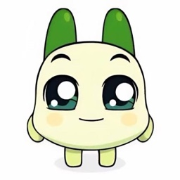

<!doctype html>
<html lang="ko">
<head>
<meta charset="utf-8">
<meta name="viewport" content="width=device-width, initial-scale=1">
<title>도총 & 채총 총무봇</title>
<link rel="stylesheet" href="https://cdn.jsdelivr.net/gh/orioncactus/pretendard@v1.3.9/dist/web/static/pretendard.min.css">
<link rel="stylesheet" href="https://fonts.googleapis.com/css2?family=Jua&display=swap">
<style>
:root{
  color-scheme:light;
  /* 테마: 패트와 매트 — 세이지 그린 바탕에 소나무 무늬, 숲 초록 줄무늬 테두리, 매트 빨강·패트 노랑, 청바지 파랑, 나무 갈색 */
  --bg:#a9cf9f; --card:#fffdf5; --ink:#2b2a1f; --muted:#6f6a52; --line:#e8dfc4; --soft:#faf6e8;
  --green:#2f6e46; --green-d:#225236; --green-l:#e2efd6; --yellow:#f7d54a; --yellow-l:#fff5cc;
  --red:#d6392d; --red-l:#fde4df; --orange:#d9822b; --orange-l:#fbecd9; --blue:#4f72a0; --blue-l:#e3ebf5;
  --grey-l:#f1ecdc; --wood:#7a5232; --forest:#2c5f3e;
  --shadow:0 2px 0 rgba(60,45,20,.08),0 8px 20px rgba(40,60,30,.12); --r:18px;
  --pine:url("data:image/svg+xml,%3Csvg xmlns='http://www.w3.org/2000/svg' width='72' height='72'%3E%3Cg fill='%23ffffff' fill-opacity='.16'%3E%3Cpath d='M18 6l7 10h-4l6 9h-4l7 10H10l7-10h-4l6-9h-4z'/%3E%3Crect x='16.5' y='35' width='3' height='4'/%3E%3Cpath d='M54 42l6 9h-3l5 7h-3l6 9H40l6-9h-3l5-7h-3z'/%3E%3C/g%3E%3C/svg%3E");
}
*{box-sizing:border-box}
html,body{margin:0}
body{background:var(--bg) var(--pine);color:var(--ink);font:14px/1.5 Pretendard,-apple-system,BlinkMacSystemFont,"Apple SD Gothic Neo","Malgun Gothic",sans-serif;-webkit-font-smoothing:antialiased}
button,input,select,textarea{font:inherit;color:inherit}
button{cursor:pointer}
h1,h2,h3,h4{margin:0}
.muted{color:var(--muted)}
.small{font-size:12px}
.row{display:flex;align-items:center;gap:8px}
.wrap{flex-wrap:wrap}
.grow{flex:1}
.hide{display:none!important}

/* ---------- buttons ---------- */
.btn{border:1px solid var(--line);background:#fff;border-radius:10px;padding:8px 14px;font-weight:600;transition:.15s}
.btn:hover{border-color:#c9d6bf;background:var(--soft)}
.btn.primary{background:var(--green);border-color:var(--green);color:#fff}
.btn.primary:hover{background:var(--green-d)}
.btn.yellow{background:var(--yellow);border-color:#f0bd2c;color:#3b2c00}
.btn.yellow:hover{background:#ffc93a}
.btn.ghost{border-color:transparent;background:transparent}
.btn.ghost:hover{background:var(--grey-l)}
.btn.sm{padding:5px 10px;font-size:12px;border-radius:8px}
.btn.danger{color:var(--red)}
.btn:disabled{opacity:.45;cursor:not-allowed}

/* ---------- start ---------- */
.start{min-height:100vh;display:flex;flex-direction:column;align-items:center;justify-content:center;padding:24px 16px;background:radial-gradient(circle at 50% 30%,#fbfdf8,#e7f0df)}
.hero{position:relative;width:100%;max-width:1120px;border-radius:20px;overflow:hidden;box-shadow:0 10px 40px rgba(40,70,30,.18)}
.hero img{display:block;width:100%;height:auto}
.hot{position:absolute;border:0;background:transparent;border-radius:14px;transition:.15s}
.hot:hover,.hot:focus-visible{box-shadow:0 0 0 3px rgba(63,155,58,.55),0 6px 20px rgba(63,155,58,.25);background:rgba(255,255,255,.08);outline:none}
.start-foot{margin-top:14px;display:flex;gap:12px;align-items:center;color:var(--muted);font-size:12px}
.linkbtn{border:0;background:none;color:var(--muted);text-decoration:underline;padding:0;font-size:12px}

/* ---------- topbar ---------- */
.top{position:sticky;top:env(safe-area-inset-top,0px);z-index:20;background:rgba(255,255,255,.92);backdrop-filter:blur(8px);border-bottom:1px solid var(--line)}
.top-in{max-width:1440px;margin:0 auto;padding:10px 20px;display:flex;align-items:center;gap:14px}
.brand{display:flex;align-items:center;gap:8px;font-weight:800;color:var(--green-d);white-space:nowrap}
.brand .logo{width:30px;height:30px;border-radius:9px;background:var(--green);display:grid;place-items:center;font-size:17px}
.brand .logo img{width:100%;height:100%;object-fit:cover;border-radius:inherit} /* 도총·채총 사진 */
.brand .logo{overflow:hidden}
.page{max-width:1440px;margin:0 auto;padding:20px}

/* ---------- cards ---------- */
.card{background:var(--card);border:1px solid var(--line);border-radius:var(--r);box-shadow:var(--shadow)}
.card-h{display:flex;align-items:center;gap:8px;padding:14px 16px;border-bottom:1px solid var(--line)}
.card-h h3{font-size:15px}
.card-b{padding:14px 16px}
.tag{display:inline-flex;align-items:center;gap:4px;padding:2px 8px;border-radius:999px;font-size:12px;font-weight:600;background:var(--grey-l);color:#44513f;white-space:nowrap}
.tag.g{background:var(--green-l);color:var(--green-d)}
.tag.y{background:var(--yellow-l);color:#8a6400}
.tag.r{background:var(--red-l);color:#a8322e}
.tag.o{background:var(--orange-l);color:#a85a0c}
.tag.b{background:var(--blue-l);color:#245b92}
.hitl{display:inline-flex;align-items:center;justify-content:center;min-width:22px;height:22px;padding:0 6px;border-radius:6px;background:#2b2b2b;color:#fff;font-size:11px;font-weight:800}

/* ---------- form ---------- */
label.f{display:block;font-size:12px;font-weight:700;color:var(--muted);margin:0 0 6px}
.inp{width:100%;border:1px solid var(--line);border-radius:10px;padding:8px 10px;background:#fff}
.inp:focus{outline:2px solid rgba(63,155,58,.35);border-color:var(--green)}
.inp.num{width:68px;text-align:right}
.seg{display:flex;flex-wrap:wrap;gap:6px}
.seg button{border:1px solid var(--line);background:#fff;border-radius:10px;padding:7px 12px;font-weight:600}
.seg button.on{background:var(--green);border-color:var(--green);color:#fff}
.seg.sm button{padding:4px 9px;font-size:12px;border-radius:8px}
.opt{border:1.5px solid var(--line);background:#fff;border-radius:12px;padding:10px 12px;text-align:left;transition:.15s}
.opt:hover{border-color:#c4d4b8}
.opt.on{border-color:var(--green);background:var(--green-l)}
.opt b{display:block;font-size:14px}
.opt span{font-size:12px;color:var(--muted)}
.switch{position:relative;width:38px;height:22px;border-radius:999px;background:#cfd8c9;border:0;flex:none;transition:.15s}
.switch::after{content:"";position:absolute;top:3px;left:3px;width:16px;height:16px;border-radius:50%;background:#fff;transition:.15s}
.switch.on{background:var(--green)}
.switch.on::after{left:19px}

/* ---------- setup ---------- */
.sizes{max-width:880px;margin:24px auto 0;display:grid;grid-template-columns:1fr 1fr;gap:16px}
.size-opt{border:1.5px solid var(--line);background:#fff;border-radius:var(--r);padding:24px;text-align:left;box-shadow:var(--shadow);transition:.15s;display:flex;flex-direction:column;gap:8px}
.size-opt:hover{border-color:var(--green);background:var(--green-l)}
.size-opt .ic{font-size:34px}
.size-opt b{font-size:18px}
.size-opt span{color:var(--muted);font-size:13px}
.size-opt .who{margin-top:auto;padding-top:8px}
.size-h{max-width:880px;margin:8px auto 0;text-align:center}
.size-h h2{font-size:22px}
.size-h p{color:var(--muted);margin:6px 0 0}
.setup{display:grid;grid-template-columns:minmax(0,1fr) minmax(0,520px);gap:20px;align-items:start}
.sec{padding:18px 20px;border-bottom:1px solid var(--line)}
.sec:last-child{border-bottom:0}
.sec-h{display:flex;align-items:center;gap:10px;margin-bottom:12px}
.sec-h .n{width:24px;height:24px;border-radius:7px;background:var(--green);color:#fff;font-weight:800;font-size:12px;display:grid;place-items:center;flex:none}
.sec-h h3{font-size:15px}
.sec-h p{margin:0;color:var(--muted);font-size:12px}
.grid2{display:grid;grid-template-columns:1fr 1fr;gap:12px}
.grid3{display:grid;grid-template-columns:repeat(3,1fr);gap:8px}
.grid4{display:grid;grid-template-columns:repeat(4,1fr);gap:8px}
.chat-ev{padding:8px 0;border-bottom:1px dashed var(--line);display:grid;gap:3px}
.chat-ev:last-child{border-bottom:0}
.chat-ev.open{background:var(--orange-l);margin:0 -8px;padding:8px;border-radius:10px}
.chat-ev .btn{justify-self:start}
.pic{width:1.25em;height:1.25em;border-radius:50%;object-fit:cover;vertical-align:middle;margin:-.15em 0} /* 성격 아이콘이 그림일 때 (부장님). 줄 높이를 늘리지 않게 */
/* 성격 카드: 내용을 위에 붙이고 예시 문구는 두 줄까지만 (카드마다 제목 위치가 같게) */
.grid4 .opt{display:flex;flex-direction:column;justify-content:flex-start;gap:2px}
.grid4 .opt span{display:-webkit-box;-webkit-line-clamp:2;-webkit-box-orient:vertical;overflow:hidden}
/* 성격 카드: 사진(또는 이모지)을 왼쪽에 크게, 이름·미리보기는 오른쪽 */
.opt.pcard, .grid4 .opt.pcard{display:flex;flex-direction:row;align-items:center;gap:12px}
.opt.pcard .pav{flex:none;width:64px;height:64px;border-radius:50%;overflow:hidden;display:grid;place-items:center;background:var(--grey-l);font-size:38px;line-height:1;-webkit-line-clamp:unset;color:inherit}
.opt.pcard .pav img{width:100%;height:100%;object-fit:cover;display:block}
.opt.pcard .ptx{min-width:0;display:flex;flex-direction:column;gap:2px;font-size:inherit;color:inherit;-webkit-line-clamp:unset}
.opt.pcard .ptx span{display:-webkit-box;-webkit-line-clamp:2;-webkit-box-orient:vertical;overflow:hidden;font-size:12px;color:var(--muted)}
@media (max-width:640px){.opt.pcard .pav{width:48px;height:48px;font-size:28px}}
.tpls{display:grid;grid-template-columns:repeat(4,1fr);gap:8px}
.tpls .opt{text-align:center}
.tpls .opt .ic{font-size:22px;display:block}
.members{display:grid;grid-template-columns:repeat(auto-fill,minmax(130px,1fr));gap:6px}
.mem{display:flex;align-items:center;gap:8px;border:1px solid var(--line);border-radius:10px;padding:6px 8px;background:#fff;text-align:left}
.mem.on{border-color:var(--green);background:var(--green-l)}
.mem.lock{opacity:.85;cursor:default}
.av{width:26px;height:26px;border-radius:8px;display:grid;place-items:center;font-size:12px;font-weight:800;color:#fff;flex:none}
img.av{object-fit:cover;background:var(--grey-l)}
.vote-set{margin-top:16px;padding:14px;border:1px dashed var(--green);border-radius:12px;background:#fbfdf9}
.vote-ai{display:grid;grid-template-columns:1fr 1fr auto;gap:6px}
.vote-row{display:grid;grid-template-columns:24px 1fr 1.6fr auto auto;gap:6px;align-items:center;margin-bottom:6px}
.vote-row .num{font-size:16px}
.place-search .btn{white-space:nowrap}
.th-btn{display:block;margin-top:4px;border:1px solid var(--green);background:var(--green-l);color:var(--green-d);border-radius:999px;padding:1px 8px;font-size:11px;font-weight:700;cursor:pointer;white-space:nowrap}
.th-btn:hover{background:var(--green);color:#fff}
.cell-btn{border:0;background:none;padding:0;cursor:pointer}
.cell-btn:hover .tag{outline:2px solid var(--green);outline-offset:1px}
.btn.danger-o{color:#a8322e;border-color:#e8b9b6}
.btn.danger-o:hover{background:var(--red-l)}
.btn.danger-fill{background:#c9453f;border-color:#c9453f;color:#fff}
.kmap{position:relative;width:100%;height:440px;border-radius:12px;overflow:hidden;border:1px solid var(--line)}
#mapSlot{position:relative;width:100%;overflow:hidden}
.pin{display:grid;place-items:center;width:26px;height:26px;border-radius:50%;border:2px solid #fff;color:#fff;font-weight:800;font-size:12px;cursor:pointer;box-shadow:0 1px 4px rgba(0,0,0,.3)}
.pin.cand{background:var(--green)} .pin.hit{background:#8a948a;width:20px;height:20px}
.pin.sm{display:inline-grid;width:16px;height:16px;font-size:9px;vertical-align:middle;cursor:default}
.kcard{position:relative;width:220px;margin-bottom:22px;padding:12px 14px 12px;background:#fff;border-radius:12px;box-shadow:0 6px 20px rgba(0,0,0,.18);font-size:12px;line-height:1.45;white-space:normal}
.kcard::after{content:"";position:absolute;left:50%;bottom:-7px;width:14px;height:14px;background:#fff;transform:translateX(-50%) rotate(45deg);box-shadow:3px 3px 6px rgba(0,0,0,.08)}
.kcard .x{position:absolute;top:8px;right:8px;border:0;background:none;color:var(--muted);font-size:12px;cursor:pointer;padding:2px}
.kcard .t{display:block;font-size:14px;padding-right:18px}
.kcard .c{color:var(--green-d);font-weight:600;margin-top:2px}
.kcard .a{color:var(--muted);margin-top:2px}
.kcard .f{display:flex;align-items:center;justify-content:space-between;gap:8px;margin-top:10px;padding-top:10px;border-top:1px solid var(--line)}
.kcard .f a{color:var(--muted);font-size:12px;text-decoration:none;white-space:nowrap}
.kcard .f a:hover{color:var(--green-d)}
.place-search{border:1px solid var(--line);border-radius:10px;padding:10px;background:#fff;display:grid;gap:6px;max-width:560px}
.place-search .hit{display:flex;align-items:center;gap:8px;padding:6px 4px;border-bottom:1px solid var(--line)}
.vote-row.date{grid-template-columns:24px 1fr auto;max-width:360px}
.vote-row .pick{border:0;background:none;font-size:18px;color:var(--muted);cursor:pointer;padding:0}
.vote-row .pick.on{color:var(--green)}
.set-list{display:grid;gap:16px}
.set-list p{margin:4px 0 8px}
.set-list .ex{padding:10px 12px;border-radius:10px;background:var(--grey-l)}
.acct{display:grid;grid-template-columns:1fr 1.6fr 1fr;gap:6px}
.vote-bar{padding:8px 0;border-bottom:1px solid var(--line)}
.steps{display:flex;align-items:center;gap:8px;margin-bottom:16px;flex-wrap:wrap}
.step{display:flex;align-items:center;gap:6px;padding:6px 12px 6px 6px;border-radius:999px;background:#fff;border:1px solid var(--line);font-weight:700;font-size:13px;color:var(--muted)}
.step .n{display:grid;place-items:center;width:22px;height:22px;border-radius:50%;background:var(--grey-l);font-size:11px}
.step small{font-weight:600;font-size:11px;color:var(--green-d)}
.step.now{border-color:var(--green);color:var(--ink,#1f2a1c);background:var(--green-l)}
.step.now .n{background:var(--green);color:#fff}
.step.done{color:var(--green-d)} .step.done .n{background:var(--green-l);color:var(--green-d)}
.steps .sep{width:18px;height:2px;background:var(--line)}
.polls{display:grid;grid-template-columns:1fr 1fr;gap:16px;margin-bottom:16px}
.poll-fixed{font-size:18px;font-weight:800;margin-bottom:4px}
/* 대시보드 오른쪽 Slack 패널 (화면의 약 1/3, 스크롤해도 고정) */
.page.with-slack{max-width:none;display:grid;grid-template-columns:minmax(0,2fr) minmax(340px,1fr);gap:16px;align-items:start}
.slack-pane{position:sticky;top:76px;height:calc(100vh - 96px);display:flex;flex-direction:column;background:#fff;border:1px solid var(--line);border-radius:14px;overflow:hidden}
.sm-head{display:flex;align-items:center;gap:8px;padding:10px 12px;border-bottom:1px solid var(--line);background:#4a154b;color:#fff}
.sm-head .muted{color:#e9d8ea}
.sm-tabs{display:flex;gap:4px;flex:1;min-width:0}
.sm-tabs button{border:0;background:transparent;color:#e9d8ea;font-weight:700;padding:6px 10px;border-radius:8px;cursor:pointer;white-space:nowrap;overflow:hidden;text-overflow:ellipsis}
.sm-tabs button.on{background:rgba(255,255,255,.18);color:#fff}
.sm-who{display:flex;gap:6px;padding:8px 12px;border-bottom:1px solid var(--line);overflow-x:auto;background:#f8f4f8}
.sm-who button{flex:none;border:1px solid var(--line);background:#fff;border-radius:999px;padding:4px 12px;font-size:13px;font-weight:700;cursor:pointer;color:#1d1c1d}
.sm-who button.on{background:#4a154b;border-color:#4a154b;color:#fff}
.sm-list{flex:1;overflow:auto;padding:8px 0}
.sm-msg{display:flex;gap:8px;padding:6px 14px}
.sm-msg:hover{background:#f8f8f8}
.sm-av{flex:none;width:36px;height:36px;border-radius:8px;overflow:hidden;background:var(--grey-l);display:grid;place-items:center;font-size:20px;font-weight:700}
.sm-av img{width:100%;height:100%;object-fit:cover}
.sm-body{min-width:0;flex:1}
.sm-meta{display:flex;align-items:center;gap:6px;font-size:13px}
.sm-meta span{color:#616061;font-size:12px}
.sm-meta .app{background:#e8e8e8;color:#616061;font-size:10px;font-weight:700;padding:0 4px;border-radius:3px}
.sm-text{font-size:14px;line-height:1.45;word-break:break-word;color:#1d1c1d}
.sm-text a{color:#1264a3}
.sm-btn{display:inline-block;margin-top:6px;padding:4px 12px;border-radius:6px;background:#007a5a;color:#fff;font-size:13px;font-weight:700}
.sm-reacts{display:flex;flex-wrap:wrap;gap:4px;margin-top:4px}
.sm-reacts span{border:1px solid #e0e0e0;background:#f6f6f6;border-radius:12px;padding:1px 8px;font-size:12px}
.sm-replies{margin-top:4px;font-size:12px;color:#1264a3;font-weight:700}
.sm-msg.sys .sm-text{color:#616061;font-size:13px}
@media (max-width:1100px){.page.with-slack{grid-template-columns:1fr}.slack-pane{position:static;height:520px}}
pre.report{white-space:pre-wrap;background:var(--grey-l);border-radius:10px;padding:12px;font-size:12px;line-height:1.6;max-height:260px;overflow:auto;margin:0}
.hist-row{display:flex;align-items:center;gap:10px;padding:10px 0;border-bottom:1px solid var(--line)}
.card.remind{display:flex;align-items:center;gap:10px;padding:10px 16px;margin-bottom:16px}
.card.next{display:flex;align-items:center;gap:10px;padding:14px 16px;margin-bottom:16px;border-color:var(--green);background:var(--green-l)}
.drow{border-top:1px solid var(--line)}
.drow-h{display:flex;align-items:center;gap:8px;padding:10px 16px;cursor:pointer;flex-wrap:wrap}
.drow-b{padding:4px 16px 14px 50px}
@media (max-width:760px){.polls{grid-template-columns:1fr}}
.vote-bar.win b{color:var(--green-d)}
.vote-bar .bar{height:8px}
@media (max-width:640px){.vote-ai{grid-template-columns:1fr 1fr}.vote-row{grid-template-columns:24px 1fr 1fr auto}.vote-row input:nth-of-type(2){grid-column:2/4}}
.mem-hits{display:grid;gap:4px;margin-bottom:10px;max-width:420px}
.mem-chips{display:flex;flex-wrap:wrap;gap:6px}
.mem-chip{display:inline-flex;align-items:center;gap:6px;padding:3px 6px 3px 3px;border-radius:999px;background:var(--green-l);border:1px solid var(--green);font-size:13px;font-weight:600}
.mem-chip .av{width:22px;height:22px;border-radius:999px;font-size:11px}
.mem-chip button{border:0;background:none;color:var(--muted);font-size:12px;padding:0 2px;cursor:pointer}
.schema{display:flex;flex-direction:column;gap:6px;margin-top:12px}
.schema-row{display:grid;grid-template-columns:22px minmax(0,1fr) 110px minmax(0,1fr) 32px;gap:6px;align-items:center}
.schema-row .inp{padding:6px 8px;font-size:13px}
.schema-row .lock{color:var(--muted);text-align:center;font-size:12px}
.time-in{display:flex;align-items:center;gap:6px;white-space:nowrap}
.set-row .inp.num{width:54px;padding:6px 8px}
.set-row .time-in{gap:4px}
.set-row .time-in .inp[type=time]{padding:6px 6px;min-width:0}
.preview{position:sticky;top:72px}
.tabs{display:flex;gap:4px;padding:8px;border-bottom:1px solid var(--line)}
.tabs button{flex:1;border:0;background:transparent;border-radius:9px;padding:8px 6px;font-weight:700;color:var(--muted)}
.tabs button.on{background:var(--green-l);color:var(--green-d)}
.pv-b{padding:14px 16px;max-height:calc(100vh - 220px);overflow:auto}
.warn{background:var(--orange-l);color:#8b4a08;border-radius:10px;padding:8px 10px;font-size:12px;font-weight:600}
.err{background:var(--red-l);color:#a8322e;border-radius:10px;padding:8px 10px;font-size:12px;font-weight:600}

/* ---------- sheet ---------- */
.sheet{width:100%;border-collapse:collapse;font-size:12.5px}
.sheet th{background:#eef5e8;color:#3d4b38;font-weight:700;text-align:left;padding:6px 8px;border:1px solid #dbe5d2;white-space:nowrap;position:sticky;top:0}
.sheet td{padding:6px 8px;border:1px solid #e6ece0;white-space:nowrap;background:#fff}
.sheet th .ty{display:block;font-size:10px;font-weight:600;color:var(--muted)}
.sheet tr.flash td{animation:flash 1.4s}
@keyframes flash{0%{background:#fff3b0}100%{background:#fff}}
.sheet-wrap{overflow:auto;border-radius:10px;border:1px solid #dbe5d2}

/* ---------- slack bubble ---------- */
.slack{display:flex;flex-direction:column;gap:12px}
.bub{display:flex;gap:10px}
.bub .bav{width:34px;height:34px;border-radius:9px;background:var(--green);display:grid;place-items:center;font-size:18px;flex:none;overflow:hidden}
.bub .bav img{width:100%;height:100%;object-fit:cover}
.bub .meta{font-size:12px;color:var(--muted);display:flex;gap:6px;align-items:center;flex-wrap:wrap}
.bub .meta b{color:var(--ink);font-size:13px}
.bub .app{background:#e8ece6;color:#56624f;font-size:10px;font-weight:800;padding:0 4px;border-radius:4px}
.bub .txt{margin-top:2px;white-space:pre-wrap}
.bub.burst .txt{color:#a8322e;font-weight:700}
.stage-lb{font-size:11px;font-weight:800;color:var(--muted);letter-spacing:.02em;margin-bottom:-6px}

/* ---------- dashboard ---------- */
.headline{display:flex;align-items:flex-end;gap:16px;flex-wrap:wrap;margin-bottom:14px}
.headline h1{font-size:24px;letter-spacing:-.02em}
.dday{display:flex;gap:8px;flex-wrap:wrap}
.dd{display:flex;flex-direction:column;align-items:center;justify-content:center;min-width:92px;padding:8px 12px;border-radius:12px;background:#fff;border:1px solid var(--line)}
.dd b{font-size:20px;line-height:1.1;font-variant-numeric:tabular-nums}
.dd span{font-size:11px;color:var(--muted);font-weight:600}
.dd.hot2{background:var(--yellow-l);border-color:#f3d37a}
.kpis{display:grid;grid-template-columns:repeat(4,1fr);gap:12px;margin-bottom:16px}
.kpi{padding:14px 16px}
.kpi .lb{font-size:12px;color:var(--muted);font-weight:700}
.kpi .v{font-size:26px;font-weight:800;letter-spacing:-.02em;font-variant-numeric:tabular-nums;margin:2px 0}
.kpi .v small{font-size:15px;color:var(--muted);font-weight:700}
.bar{height:6px;border-radius:99px;background:var(--grey-l);overflow:hidden;margin-top:6px}
.bar i{display:block;height:100%;background:var(--green);border-radius:99px}
.dash{display:grid;grid-template-columns:380px minmax(0,1fr);gap:16px;align-items:start}
.col{display:flex;flex-direction:column;gap:16px;min-width:0}
.dash>section{min-width:0}
.set-row{display:grid;grid-template-columns:72px 1fr;gap:8px;align-items:center;margin-bottom:10px}
.set-row>label{font-size:12px;font-weight:700;color:var(--muted)}
.mini{cursor:pointer;transition:.15s}
.mini:hover{border-color:#bcd1ae;box-shadow:0 6px 20px rgba(40,80,30,.12)}
.ppl-h{display:grid;grid-template-columns:minmax(150px,1.3fr) 70px 74px minmax(0,1.6fr) minmax(170px,1.3fr) 34px;gap:10px;padding:8px 16px;font-size:11px;font-weight:800;color:var(--muted);border-bottom:1px solid var(--line);background:var(--soft)}
.prow{display:grid;grid-template-columns:minmax(150px,1.3fr) 70px 74px minmax(0,1.6fr) minmax(170px,1.3fr) 34px;gap:10px;padding:10px 16px;align-items:center;border-bottom:1px solid var(--line);cursor:pointer}
.prow:hover{background:var(--soft)}
.prow.open{background:var(--green-l)}
.prow .nm{display:flex;align-items:center;gap:8px;min-width:0}
.prow .nm b{white-space:nowrap}
.fchips{display:flex;gap:4px;flex-wrap:wrap;min-width:0}
.pdetail{padding:14px 16px 18px;background:#fbfdf9;border-bottom:1px solid var(--line);display:grid;grid-template-columns:minmax(0,1fr) minmax(0,1fr);gap:16px}
.kv{display:grid;grid-template-columns:90px 1fr;gap:4px 10px;font-size:13px}
.kv dt{color:var(--muted);font-weight:600}
.kv dd{margin:0}
.ovbox{border:1px dashed #c8d6bc;border-radius:12px;padding:12px}
.ovbox.off .ovbody{opacity:.45;pointer-events:none}
.filters{display:flex;gap:6px;flex-wrap:wrap}
.log{display:flex;flex-direction:column;gap:8px;font-size:13px}
.log .li{display:grid;grid-template-columns:44px 64px 1fr;gap:8px;align-items:start}
.log .li time{color:var(--muted);font-size:12px;font-variant-numeric:tabular-nums}

/* ---------- bell / drawer ---------- */
.bell{position:relative}
.bell .cnt{position:absolute;top:-6px;right:-6px;min-width:20px;height:20px;padding:0 5px;border-radius:999px;background:var(--red);color:#fff;font-size:11px;font-weight:800;display:grid;place-items:center;border:2px solid #fff}
.scrim{position:fixed;inset:0;background:rgba(20,30,15,.35);z-index:40;opacity:0;pointer-events:none;transition:.2s}
.scrim.on{opacity:1;pointer-events:auto}
.drawer{position:fixed;top:0;right:0;bottom:0;width:min(460px,100vw);background:#fff;z-index:41;transform:translateX(100%);transition:.25s;display:flex;flex-direction:column;box-shadow:-10px 0 40px rgba(20,40,10,.2)}
.drawer.on{transform:none}
.drawer .dh{display:flex;align-items:center;gap:8px;padding:14px 16px;border-bottom:1px solid var(--line)}
.drawer .db{flex:1;overflow:auto;padding:14px 16px}
.issue{border:1px solid var(--line);border-radius:12px;padding:12px;margin-bottom:10px}
.issue .ih{display:flex;gap:6px;align-items:center;margin-bottom:6px}
.issue .ai{background:var(--blue-l);color:#245b92;border-radius:8px;padding:6px 8px;font-size:12px;margin:8px 0}
.parse-res{display:flex;flex-direction:column;gap:6px;margin-top:10px}
.parse-res .pr{display:flex;gap:8px;align-items:flex-start;font-size:13px;padding:8px 10px;border-radius:10px;background:var(--soft)}
.settle td{padding:6px 0;border-bottom:1px solid var(--line)}
.settle td:last-child{text-align:right;font-variant-numeric:tabular-nums}
.settle td[colspan]{text-align:left}
.settle{width:100%;border-collapse:collapse;font-size:13px}
.big-num{font-size:30px;font-weight:800;color:var(--green-d);letter-spacing:-.02em}

/* ---------- modal / toast ---------- */
.modal{position:fixed;inset:0;z-index:60;display:grid;place-items:center;padding:16px;background:rgba(20,30,15,.45)}
.modal .mbox{background:#fff;border-radius:18px;width:min(560px,100%);max-height:calc(100vh - 32px);display:flex;flex-direction:column;box-shadow:0 20px 60px rgba(0,0,0,.25)}
.modal .mbox.wide{width:min(1200px,100%)}
.modal .mh{display:flex;align-items:center;gap:8px;padding:16px 18px;border-bottom:1px solid var(--line)}
.modal .mb{padding:16px 18px;overflow:auto}
.modal .mf{display:flex;justify-content:flex-end;gap:8px;padding:12px 18px;border-top:1px solid var(--line)}
.sum{display:grid;grid-template-columns:110px 1fr;gap:6px 12px;font-size:13px}
.sum dt{color:var(--muted);font-weight:600}
.sum dd{margin:0;font-weight:600}
#toasts{position:fixed;left:50%;bottom:20px;transform:translateX(-50%);z-index:80;display:flex;flex-direction:column;gap:8px;align-items:center;pointer-events:none}
.toast{background:#23301f;color:#fff;padding:10px 16px;border-radius:12px;font-size:13px;font-weight:600;box-shadow:0 8px 24px rgba(0,0,0,.2);animation:tin .2s}
@keyframes tin{from{opacity:0;transform:translateY(8px)}}

@media (max-width:1100px){
  .setup{grid-template-columns:1fr}
  .preview{position:static}
  .dash{grid-template-columns:minmax(0,1fr)}
  .kpis{grid-template-columns:repeat(2,minmax(0,1fr))}
}
@media (max-width:720px){
  .page{padding:16px}
  .top-in{padding:10px 16px;flex-wrap:wrap}
  .tpls{grid-template-columns:repeat(2,1fr)}
  .grid2,.grid3,.sizes{grid-template-columns:1fr}
  .grid4{grid-template-columns:repeat(2,1fr)}
  .ppl-h{display:none}
  .prow{grid-template-columns:1fr auto;gap:6px}
  .prow>*:nth-child(n+4):not(:last-child){grid-column:1/-1}
  .pdetail{grid-template-columns:1fr}
  .schema-row{grid-template-columns:22px 1fr 96px 32px}
  .schema-row .opts{grid-column:2/-1}
}

/* ---------- 테마: 패트와 매트 (점토 인형 느낌: 둥근 손글씨 제목, 두툼한 버튼, 크림색 카드) ---------- */
h1,h2,h3,.brand,.card-h h3,.sec-h h3,.headline b{font-family:Jua,Pretendard,sans-serif;font-weight:400;letter-spacing:0}
.top{background:repeating-linear-gradient(135deg,var(--forest) 0 10px,#2a5a3b 10px 20px);border-bottom:3px solid #1f4a30;backdrop-filter:none;color:#fff7dc}
.top .brand{color:#fff7dc;font-size:17px}
.top .brand .logo{background:var(--yellow);box-shadow:0 2px 0 #c9a41f}
.top .btn{background:#fffdf5;border-color:#1f4a30;color:var(--ink)}
.top .btn.danger-o{color:var(--red)}
.top .btn.ghost{background:transparent;color:#fff7dc}
.top .btn.ghost:hover{background:rgba(255,255,255,.12)}
.top .tag{box-shadow:0 1px 0 rgba(0,0,0,.15)}
.top .muted,.top .small{color:#e7f0d8}
.card{border:2px solid var(--line);box-shadow:var(--shadow)}
.card-h{border-bottom:2px dashed var(--line)}
.btn{border-width:2px;border-radius:12px;box-shadow:0 2px 0 rgba(60,45,20,.12)}
.btn:active{transform:translateY(2px);box-shadow:none}
.btn.primary{background:var(--green);border-color:var(--green-d);box-shadow:0 3px 0 #1a3f29}
.btn.primary:hover{background:var(--green-d)}
.btn.yellow{background:var(--yellow);border-color:#d9b52c;color:#3b2c00;box-shadow:0 3px 0 #c39f1c}
.btn.yellow:hover{background:#f2cc32}
.btn.ghost,.btn.ghost:active{box-shadow:none}
.opt{border-width:2px;border-radius:14px;background:var(--card)}
.opt.on{border-color:var(--green);background:var(--green-l);box-shadow:0 3px 0 #b9d3a9}
.inp{border-width:2px;border-radius:12px;background:#fff}
.hitl{background:var(--wood)}
.start{background:var(--bg) var(--pine)}
.hero{border-radius:22px;box-shadow:0 14px 40px rgba(30,60,30,.3)} /* 그림에 테두리가 있어 따로 두르지 않음 */
.start-foot,.start-foot .linkbtn{color:#24452f}
/* 시작화면 그림 속 '시작하기' 버튼 자리 (그림 1421x752 기준 566~871, 636~718) */
.hot-start{left:39.8%;top:84.6%;width:21.5%;height:10.9%;border-radius:18px}
.hot-start:hover,.hot-start:focus-visible{box-shadow:0 0 0 3px rgba(255,246,220,.9),0 6px 18px rgba(150,40,30,.35);background:rgba(255,255,255,.1)}
.hot-start:active{transform:translateY(2px);background:rgba(0,0,0,.06)}
</style>
<style>
/* =========================================================
   대모임 전용 스타일 — 채총 영역
   클래스 이름은 .lg- 로 시작합니다. (공용 클래스 .card .sec .btn .opt .inp 등은 그대로 써도 됩니다)
   ========================================================= */
.lg-row{display:flex;gap:8px;flex-wrap:wrap;margin:10px 0}
.lg-pill{display:inline-block;padding:3px 10px;border-radius:99px;font-size:12px;font-weight:600;background:var(--grey-l);color:var(--muted)}
.lg-on{background:var(--green-l);color:var(--green-d)}
.lg-off{background:var(--yellow-l);color:#7a5a00}
.lg-note{font-size:12px;margin-top:6px}
.lg-status{display:flex;align-items:center;gap:8px;flex-wrap:wrap;padding:10px 20px;border-bottom:2px dashed var(--line);background:var(--soft)}
.lg-result{margin-top:10px;padding:10px 12px;border-radius:12px;background:var(--green-l);color:var(--green-d)}
.lg-errs{margin:4px 0 0;padding-left:18px;max-height:180px;overflow:auto}
.lg-depts{display:grid;grid-template-columns:repeat(auto-fill,minmax(250px,1fr));gap:10px;margin-top:12px;align-items:start}
.lg-dept{padding:12px;display:grid;gap:4px}
.lg-dept .members{grid-template-columns:repeat(auto-fill,minmax(96px,1fr))}
.lg-dept .mem{padding:4px 6px;font-size:12px}
.lg-dept .mem .av{width:22px;height:22px;font-size:11px}
.lg-demo{margin-top:14px;padding:10px 12px;border:2px dashed var(--line);border-radius:12px;background:var(--soft)}
.lg-demo summary{cursor:pointer}
.lg-rule{display:grid;grid-template-columns:120px minmax(0,1fr) 80px minmax(0,1.2fr) auto;gap:6px;align-items:center;margin-top:10px}
.lg-rules .sheet th,.lg-rules .sheet td{white-space:normal} /* 설명이 길어 좁은 화면에서 가로로 넘치지 않게 */
.lg-empty{padding:24px 12px;text-align:center;border:2px dashed var(--line);border-radius:12px}
@media (max-width:720px){.lg-rule{grid-template-columns:1fr 1fr}.lg-rule .btn{grid-column:1/-1}}
</style>
</head>
<body>
<div id="app"></div>
<div id="scrim" class="scrim" data-act="closeDrawer"></div>
<aside id="drawer" class="drawer" aria-label="확인 필요"></aside>
<div id="modal"></div>
<div id="toasts"></div>

<script>
/* =========================================================
   도총 & 채총 — 총무봇 데모 (HTML 1개, 서버 없음)
   실제 앱에서 Slack·Google Sheets·LLM이 하는 일을 가상 데이터로 흉내 냅니다.
   ========================================================= */

const $ = s => document.querySelector(s);
const esc = s => String(s ?? '').replace(/[&<>"']/g, c => ({'&':'&amp;','<':'&lt;','>':'&gt;','"':'&quot;',"'":'&#39;'}[c]));
const won = n => Math.round(n).toLocaleString('ko-KR') + '원';
const DOW = ['일','월','화','수','목','금','토'];
const pad = n => String(n).padStart(2, '0');

/* ---------- 정적 데이터 ---------- */
const MEMBERS = [
  {id:'me', name:'나 (총무)', color:'#3f9b3a'},
  {id:'jy', name:'이지연', color:'#e98b2a'}, {id:'ms', name:'최민수', color:'#3b7fc4'},
  {id:'hw', name:'이현우', color:'#8a5cc4'}, {id:'jm', name:'박지민', color:'#d9534f'},
  {id:'sj', name:'정서준', color:'#2c9c8f'}, {id:'yj', name:'한유진', color:'#c4508a'},
  {id:'th', name:'오태호', color:'#6b7a33'}, {id:'sy', name:'윤소윤', color:'#b0772c'},
  {id:'hn', name:'강하늘', color:'#4f6bd1'}, {id:'de', name:'송다은', color:'#9c4f2c'},
  {id:'jw', name:'임재원', color:'#3d8a5a'}, {id:'sa', name:'배수아', color:'#a0509c'},
  {id:'jh', name:'노준혁', color:'#5a6672'}
];
const MEM = Object.fromEntries(MEMBERS.map(m => [m.id, m]));
const isKorName = n => /^[가-힣]{3,4}$/.test(n);
const shortName = id => id === 'me' ? '나' : isKorName(MEM[id].name) ? MEM[id].name.slice(1) : MEM[id].name;

/* ---------- Slack 연동 (app/server.py) ----------
   서버가 켜져 있으면 실제 워크스페이스 멤버로 MEMBERS 를 바꾸고, 시작할 때 채널을 만들어 초대합니다.
   서버가 없으면 위 데모 멤버를 그대로 씁니다. 주소는 ?api=… 로 바꿀 수 있어요. */
const SLACK = {api:'http://127.0.0.1:8787', status:'off', team:'', error:'', channelId:null};
const SERVED = location.protocol.startsWith('http') && location.pathname.startsWith('/demo/'); // app/server.py 가 띄운 화면
try { SLACK.api = new URLSearchParams(location.search).get('api') || (SERVED ? location.origin : localStorage.getItem('chongmubot-api')) || SLACK.api; } catch(e){}
const SLACK_ERR = {
  name_taken:'이미 있는 채널 이름이에요', invalid_name_specials:'채널 이름에 공백·마침표·특수문자는 쓸 수 없어요',
  invalid_name:'채널 이름을 확인해 주세요', invalid_name_maxlength:'채널 이름은 80자 이하여야 해요',
  missing_scope:'봇 권한(scope)이 부족해요 — Slack 앱에 권한 추가 후 Reinstall', not_authed:'봇 토큰이 없어요', invalid_auth:'봇 토큰이 올바르지 않아요',
  no_token:'서버 .env 에 SLACK_BOT_TOKEN 이 없어요', no_kakao_key:'서버 .env 에 KAKAO_REST_API_KEY 가 없어요',
  kakao_disabled:'카카오 개발자 콘솔에서 카카오맵 사용 설정을 켜 주세요', no_area:'지역을 입력해 주세요', need_two_places:'후보가 2곳 이상 필요해요', cant_invite_self:'봇 자신은 초대할 수 없어요'
};
const slackErr = e => SLACK_ERR[e] || e;
async function slackApi(path, body){
  const r = await fetch(SLACK.api + path, body ? {method:'POST', headers:{'Content-Type':'application/json'}, body:JSON.stringify(body)} : {});
  const j = await r.json().catch(() => ({error:`HTTP ${r.status}`}));
  if (!r.ok) throw new Error(j.error || `HTTP ${r.status}`);
  return j;
}
const PALETTE = MEMBERS.map(m => m.color);
// 멤버가 많으면 검색어에 맞는 사람 + 이미 고른 사람만 표시
const memShown = m => !UI.memQ || S.invited.includes(m.id) || m.name.toLowerCase().includes(UI.memQ.toLowerCase());
// 멤버가 많을 때 기본 화면: 검색 결과(최대 8명) + 고른 사람 칩. '전체 보기'를 누르면 격자로 전원 표시
const memCompact = () => MEMBERS.length > 20 && !UI.memAll;
function memArea(s){
  return memCompact() ? memPicker(s) : `<div class="members">${MEMBERS.filter(memShown).map(m => `
    <button class="mem ${s.invited.includes(m.id) ? 'on' : ''} ${m.id === 'me' ? 'lock' : ''}" data-act="toggleInvite" data-id="${m.id}">
      ${avatar(m.id)}<span>${esc(m.name)}</span>${s.invited.includes(m.id) ? '<span class="grow"></span>✓' : ''}</button>`).join('')}
  </div>`;
}
function memPicker(s){
  const q = (UI.memQ || '').trim().toLowerCase();
  const hits = q ? MEMBERS.filter(m => !s.invited.includes(m.id) && m.name.toLowerCase().includes(q)) : [];
  return `${q ? `<div class="mem-hits">${hits.slice(0, 8).map(m => `
      <button class="mem" data-act="toggleInvite" data-id="${m.id}">${avatar(m.id)}<span>${esc(m.name)}</span><span class="grow"></span><b style="color:var(--green-d)">＋</b></button>`).join('')
      || '<p class="muted small" style="margin:4px 0">검색 결과가 없어요.</p>'}
      ${hits.length > 8 ? `<p class="muted small" style="margin:4px 0">외 ${hits.length - 8}명 · 더 자세히 검색해 주세요</p>` : ''}</div>` : ''}
    <div class="mem-chips">${s.invited.map(id => `
      <span class="mem-chip">${avatar(id)}${esc(MEM[id].name)}${id === 'me' ? '' : `<button data-act="toggleInvite" data-id="${id}" title="빼기">✕</button>`}</span>`).join('')}</div>`;
}
// 검색창은 그대로 두고 아래 목록만 다시 그림 (화면 전체를 다시 그리면 조합 중인 한글이 사라짐)
document.addEventListener('input', e => {
  if (e.target.id !== 'memQ') return;
  UI.memQ = e.target.value;
  const box = $('#memArea'); if (box) box.innerHTML = memArea(S);
});
async function slackLoad(){
  SLACK.status = 'loading'; SLACK.error = '';
  try {
    const {team, owner, members} = await slackApi('/api/slack/members');
    const me = members.find(m => m.id === owner);
    const list = [{id:'me', name:'나 (총무)', real:me ? me.name : '', color:PALETTE[0], slackId:me ? me.id : null, image:me ? me.image : ''},
      ...members.filter(m => m !== me).map((m, i) => ({id:m.id, name:m.name, color:PALETTE[1 + i % (PALETTE.length - 1)], slackId:m.id, image:m.image}))];
    // 선택 목록은 Slack 멤버로 바꾸고, MEM 에는 데모 멤버도 남겨 둠 (저장된 입금 내역·로그가 데모 멤버를 가리킬 수 있음)
    const slackIds = new Set(list.map(m => m.id));
    MEMBERS.splice(0, MEMBERS.length, ...list); list.forEach(m => MEM[m.id] = m);
    S.invited = S.invited.filter(id => slackIds.has(id)); if (!S.invited.includes('me')) S.invited.unshift('me');
    // 데모 데이터로 시작해 둔 진행(실제 채널 없음)은 실제 모임에 섞이지 않게 비움
    if (S.started && !S.slackChannel){
      Object.assign(S, {started:false, people:{}, tx:[], issues:[], log:[], refunds:[], settled:false});
      if (S.screen === 'dash') S.screen = 'setup';
    }
    SLACK.status = 'on'; SLACK.team = team;
    if (!me) SLACK.error = '서버 .env 에 SLACK_OWNER_USER_ID 를 넣으면 총무 본인도 초대돼요';
  } catch(e){
    SLACK.status = 'off'; SLACK.error = e instanceof TypeError ? '' : slackErr(e.message); // TypeError = 서버 꺼짐
  }
  try { render(); } catch(e){ console.error(e); SLACK.status = 'off'; SLACK.error = `화면 오류: ${e.message} — 오른쪽 위 초기화를 눌러 보세요`; render(); }
}

// 데모용 참가자 상태 (제안서 5쪽 시트 예시 기반)
const PROFILE = {
  // 총무(me)도 다른 사람처럼 미입력(무응답·미입금)에서 시작
  jy:{attend:'참석', pay:'입금', f:{차량:'운전', 좌석:'3', 방:'B', 준비물:'고기'}},
  ms:{attend:'부분', pay:'입금', f:{차량:'동승', 방:'A'}, note:'토 저녁~ 합류'},
  hw:{attend:'참석', pay:'입금', f:{차량:'동승', 방:'A', 준비물:'음료'}},
  jm:{attend:'참석', pay:'확인중', f:{차량:'동승', 방:'B'}, note:"'박영자' 입금?"},
  sj:{attend:'무응답', pay:'미입금', stage:2},
  yj:{attend:'참석', pay:'입금', f:{차량:'동승', 방:'B', 알레르기:'갑각류'}},
  th:{attend:'참석', pay:'입금', f:{차량:'자차', 방:'A', 준비물:'보드게임'}},
  sy:{attend:'참석', pay:'입금', f:{차량:'동승', 방:'B'}},
  hn:{attend:'참석', pay:'미입금', stage:1, f:{차량:'동승', 방:'A'}},
  de:{attend:'무응답', pay:'미입금', stage:1},
  jw:{attend:'참석', pay:'미입금', stage:1},
  sa:{attend:'불참', pay:'-'},
  jh:{attend:'참석', pay:'입금'}
};

const TYPE_LB = {select:'선택지', ox:'O/X', number:'숫자', text:'텍스트'};
const BASE_COLS = [
  {key:'이름', type:'text', locked:true},
  {key:'참석', type:'select', options:'참석,부분,불참,무응답', locked:true},
  {key:'회비', type:'select', options:'입금,미입금,확인중', locked:true}
];
const TEMPLATES = {
  dinner:{label:'회식', icon:'🍻', desc:'투표·1/2차·후정산', cols:[['1차','ox'],['2차','ox'],['도착 시간','text'],['음주 여부','ox']]},
  mt:    {label:'MT', icon:'🏕', desc:'차량·방·준비물', cols:[['차량','select','운전,동승,자차'],['좌석','number'],['방','select','A,B,C'],['준비물','text'],['알레르기','text']]},
  ws:    {label:'워크샵', icon:'🏢', desc:'300명 · 부서별 정산', cols:[['소속','text'],['버스','ox'],['숙소','select','1인실,2인실,4인실'],['식사','select','일반,채식,할랄']]},
  custom:{label:'직접 설명', icon:'✍️', desc:'말로 설명', cols:[]}
};
const makeSchema = tpl => [...BASE_COLS.map(c => ({...c}))
    // 회식은 후정산이라 '확인중' 없이 입금·미입금만
    .map(c => tpl === 'dinner' && c.key === '회비' ? {...c, options:'입금,미입금'} : c),
  ...TEMPLATES[tpl].cols.map(([key,type,options]) => ({key, type, options:options||''})),
  ...(tpl === 'dinner' ? [] : [{key:'메모', type:'text'}])];

// "직접 설명" → 키워드로 스키마 초안 (실제 앱에서는 LLM이 생성)
const KEYWORDS = [
  [/골프/, [['핸디캡','number'],['조 편성','select','1조,2조,3조'],['카트비','number']]],
  [/차|카풀|운전|드라이브/, [['차량','select','운전,동승,자차'],['좌석','number']]],
  [/숙소|방|펜션|호텔|1박|숙박/, [['방','select','A,B,C']]],
  [/술|음주|뒤풀이/, [['음주','ox'],['뒤풀이','ox']]],
  [/메뉴|식사|음식|밥/, [['메뉴 선호','text']]],
  [/알레르기/, [['알레르기','text']]],
  [/비행|항공|해외/, [['항공편','text'],['여권 영문명','text']]],
  [/선물|모금|경조사|축하/, [['금액','number'],['카드 메시지','text']]],
  [/스터디|독서|과제/, [['과제 제출','ox'],['지각','number']]],
  [/등산|캠핑|장비/, [['장비 대여','ox']]],
  [/준비물|담당/, [['준비물','text']]]
];

const PERSONAS = {
  active:{label:'영크크', ic:''}, shy:{label:'구남친', ic:''}, oldie:{label:'부장님', ic:''}, strict:{label:'맑눈광', ic:''}
};
const STRATEGIES = {
  consistent:{label:'초지일관', ic:'➖', desc:'처음부터 끝까지 같은 말투'},
  escalate:{label:'단계적 압박', ic:'📈', desc:'공지 → DM → 마감, 점점 단호하게'},
  chaos:{label:'급발진', ic:'🌋', desc:'친절하다가 갑자기 버럭, 예측 불가'}
};

// 말투별 문구 (실제 앱에서는 LLM이 상황에 맞춰 생성. 데모는 예시 문구)
const LINES = {
  active:{
    g:'우리 팬분들~✨ {event} 팬미팅 열려요오!! 😆🎤\n참석 여부랑 사랑({fee}) 보내주세요오 마감은 {deadline}이에요💕',
    dm0:'{name}니이임~✨ {event} 보러 와주실 거죠오? 😆 사랑({fee})도 기다릴게요💕🫶',
    dl0:'{name}님~ 오늘 {dtime}에 마감이에요오! 헤헤 답장 기다릴게요🥺💕',
    dm1:'앗… {name}님 혹시 제 메시지 못 보셨나요?🥺 {deadline}까지 참석이랑 사랑 보내주세요오💕',
    dl2:'{name}님, 오늘 {dtime}이 마감이에요.\n꼭 답 주세요. 늘 고마워요. 🎤',
    burst:['{name}님~ {event} 오시는 거 맞죠? 😆💕\n근데 읽은 거 다 보여요.\n…헤헤 농담이에요!! 하트 받아요🫶', '{name}니이임~✨\n근데 진짜 왜 답 안 해요?\n…히히 장난이에요💕 기다릴게요🥺'],
    sorry:['흐잉 아까 건 실수예요💕\n{name}님 사랑해요🫶', '헤헤 놀랐죠? 농담이에요오✨\n볼콕 >_<']
  },
  shy:{
    g:'자니?\n그냥… {event} 하려고\n참석이랑 회비({fee})… {deadline}까지만 알려줘',
    dm0:'자니?\n갑자기 생각나서\n{event}… 올 수 있어?',
    dl0:'자니?\n오늘 마감이라서…\n{event} 오는지만…',
    dm1:'자니?\n내가 지난번에 너무 급하게 물어봤던 것 같아…\n{deadline}까지만 알려줘',
    dl2:'자니?\n자니…?\n오늘 {dtime}까지만 기다릴게',
    burst:['자니?\n바빠?\n답장 안 해도 돼…','…\n{name}만한 사람 없더라…'],
    sorry:['미안 그냥 잊어줘\nㅋㅋ 내가 왜 이러냐','아 실수로 보냈네…']
  },
  oldie:{
    g:'여러분~ {event} 참석 조사 시작합니다^^\n참석 여부랑 회비({fee}) 알려 줘요~~ 마감은 {deadline}이야.. 나 때는 이런 거 종이에 받았어',
    dm0:'{name}씨~ 잘 지내지?^^ {event} 오는 거 맞지? 참석 여부만 슬쩍 알려 줘요~~ 회비는 {fee}',
    dl0:'{name}씨~ 오늘 {dtime} 마감이야^^ 시간 될 때 답 줘요~~',
    dm1:'{name}씨, 아직 답이 없네~ {deadline}까지 참석 여부랑 회비 알려 줘라~ 시계 밥 좀 주고',
    dl2:'{name}씨. 오늘 {dtime} 마감이다. 답 없으면 불참으로 적는다.',
    burst:['나 깡패 아니다. 나도 적금 붓고 보험 들고 살고 그런다. 부장도 순정이 있어요. {name}씨가 이런 식으로 답 안 하고 그러면.. 그때는 깡패가 되는 거야.','{name}씨하고 나하고 아주 전생에 인연이 깊구나. 이 바닥 좁다. 대답 좀~', '어이 젊은 친구, 신사답게 대답해. {deadline}까지다.', '시흥대교는 무너졌냐. 왜 아무 소식이 없어~ {name}씨, 대답 좀 해라.'],
    sorry:['아이고.. 내가 좀 흥분했네~ 미안미안^^ 천천히 답 줘요~~','아이고 방금 건 못 본 걸로 해 줘요~~ 끝나고 하드 하나 사 줄게']
  },
  strict:{
    g:'{event} 참석 조사를 시작합니다. 참석 여부와 회비({fee})를 회신해 주십시오. 마감은 {deadline}입니다.',
    dm0:'{name}님, {event} 참석 여부를 회신해 주십시오.',
    dl0:'{name}님, 오늘 {dtime} 마감입니다. 기한 내 회신 바랍니다.',
    dm1:'{name}님, 아직 회신이 확인되지 않았습니다. {deadline}까지 참석 여부와 회비를 확인해 주십시오.',
    dl2:'{name}님. 오늘 {dtime} 마감입니다. 기한 내 미회신 시 원칙대로 불참 처리합니다.',
    burst:['{name}님. 이것이 마지막 안내입니다. 즉시 회신하십시오.','{name}님. 기한은 모두에게 같습니다. 예외는 없습니다. 지금 회신하십시오.'],
    sorry:['방금 표현은 지나쳤습니다. 사과드립니다. 다만 회신은 필요합니다.','어조가 강했던 점 양해 바랍니다. 기한 내 회신 부탁드립니다.']
  }
};
// 투표 독촉 문구 ({what}: 아직 안 한 투표, 예: 날짜·장소). 버럭·급사과는 LINES 것을 같이 씀
const VOTE_LINES = {
  active:{
    soft:'{name}님~✨ {event} {what} 투표 아직이에요오! 😆 이모지 하나만 콕 눌러주세요💕 (마감 {deadline})',
    firm:'앗… {name}님 {what} 투표 기다렸는데…🥺 여러 개 골라도 돼요오 {deadline} 마감이에요💕',
    last:'{name}님, 오늘 {dtime}에 {what} 투표가 끝나요.\n이모지 하나만 부탁할게요. 🎤',
    burst:'{name}님~ {what} 투표 하셨죠? 😆\n근데 읽은 거 다 보여요.\n…헤헤 농담이에요!! 콕 눌러주세요🫶'
  },
  shy:{
    soft:'자니?\n그냥… {what} 투표 했나 해서\n{deadline}까지야',
    firm:'자니?\n우리 지난번 갔던 거기… 기억나?\n{what} 투표만 눌러줘',
    last:'자니?\n자니…?\n오늘 {dtime}에 {what} 투표 끝나…',
    burst:'…\n{deadline}까지만 기다릴게\n{what} 투표…'
  },
  oldie:{
    soft:'{name}씨~ {event} {what} 투표 아직이지?^^ 뭘 먹어야 맛있게 먹었다고 소문이 날까~ 이모지 하나만 꾹 눌러 줘요 ({deadline} 마감)',
    firm:'{name}씨, {what} 투표 아직이네~ 이모지 하나 누르는 거 금방이잖아. {deadline}까지 해라~',
    last:'{name}씨. 오늘 {dtime} {what} 투표 마감이다. 안 하면 다수결로 간다.',
    burst:'나 깡패 아니다. 나도 적금 붓고 보험 들고 살고 그런다. 부장도 순정이 있어요. {name}씨가 이런 식으로 {what} 투표 안 하고 그러면.. 그때는 깡패가 되는 거야.'
  },
  strict:{
    soft:'{name}님, {what} 투표에 참여해 주십시오. 마감은 {deadline}입니다.',
    firm:'{name}님, {what} 투표가 아직 확인되지 않았습니다. 이모지 하나로 참여할 수 있습니다.',
    last:'{name}님. 오늘 {dtime} {what} 투표 마감입니다. 미참여 시 다수결로 결정합니다.',
    burst:'{name}님. 마지막 안내입니다. 지금 {what} 투표에 참여하십시오.'
  }
};
// 정산 단체방 독촉 (이름·금액 없이 인원만) · 개인 금액은 DM 으로만
const SETTLE_GROUP = {
  active:{soft:'우리 팬분들~✨ 정산 금액 DM으로 보냈어요오! 💸 아직 {n}분이 사랑을 안 보내주셨어요🥺 (마감 {deadline})',
    firm:'{n}분 남았어요오… 답장 기다렸는데…🥺 DM 확인하고 사랑 보내주세요💕 {deadline}까지예요!',
    last:'정산 마감은 {dtime}이에요.\n아직 {n}분 남았어요. 부탁드려요. 🎤',
    burst:['우리 팬분들~ 정산 DM 보셨죠? 😆\n근데 읽은 거 다 보여요.\n…헤헤 농담이에요!! {n}분 사랑 보내주세요🫶', '아직 {n}분이에요오💕\n저 지금 웃고 있는 거 아니에요.\n…히히 장난이에요✨ 기다릴게요🥺'],
    sorry:['흐잉 아까 건 실수예요💕\n{n}분 천천히 해주세요🫶', '헤헤 놀랐죠? 농담이에요오✨\n사랑해요💖']},
  shy:{soft:'자니?\n정산 금액 DM으로 보냈어…\n아직 {n}명… ({deadline})',
    firm:'나 전역하고 많이 변했어…\n이번엔 정산 금방 끝내자\n{n}명만…',
    last:'자니?\n오늘 {dtime}까지야…\n아직 {n}명…',
    burst:['자니?\n자니…?\n{n}명…', '돈 얘기는 한 번에 끝내자. 두 번 말하게 하지 말고\n아직 {n}명', '답장 안 해도 돼…\n…근데 정산은 잊지 마'],
    sorry:['미안 그냥 잊어줘\nㅋㅋ 내가 왜 이러냐', '아 실수로 보냈네…\n천천히 해…']},
  oldie:{soft:'여러분~ 정산 금액은 DM으로 보냈어요^^ 아직 {n}명이 입금 전이야~~ DM 확인 부탁해요 (마감 {deadline})',
    firm:'지방방송 끄세요~~ 아직 {n}명 남았다. DM에 금액이랑 계좌 있으니까 {deadline}까지 보내라~',
    last:'오늘 {dtime} 정산 마감이다. 아직 {n}명. 다들 시계 밥 좀 줘라.',
    burst:['나 깡패 아니다. 나도 적금 붓고 보험 들고 살고 그런다. 부장도 순정이 있어요. {n}명이 이런 식으로 입금 안 하고 그러면.. 그때는 깡패가 되는 거야.', '니네하고 나하고 아주 전생에 인연이 깊구나. 이 바닥 좁다. {n}명, 입금 좀~', '어이 젊은 친구들, 신사답게 입금해. 마감 {deadline}이다.', '시흥대교는 무너졌냐. 왜 아무 소식이 없어~ {n}명, 입금 좀 해라.'],
    sorry:['아이고.. 내가 좀 흥분했네~ 미안미안^^ {n}명 편할 때 보내 줘요~~', '아이고 방금 건 못 본 걸로~~ {n}명 천천히 부탁해요']},
  strict:{soft:'정산 미입금 {n}명입니다. 금액은 개인 DM을 확인해 주십시오. 마감은 {deadline}입니다.', firm:'아직 {n}명이 미입금입니다. 금액과 계좌는 DM에 안내되어 있습니다.',
    last:'오늘 {dtime} 정산 마감입니다. 미입금 {n}명. 기한을 지켜 주십시오.', burst:['{n}명. 마지막 안내입니다. 즉시 정산해 주십시오.', '기한은 모두에게 같습니다. {n}명, 지금 처리해 주십시오.'],
    sorry:['방금 표현은 지나쳤습니다. 사과드립니다. 정산은 기한 내 부탁드립니다.', '어조가 강했던 점 양해 바랍니다. 정산은 여전히 필요합니다.']}
};
// 정산 개인 DM 독촉 ({amount}·{account} 는 그 사람 금액과 총무 계좌)
const SETTLE_DM = {
  active:{soft:'{name}니이임~✨ {event} 사랑 {amount} 아직이에요오! 😆 {account}로 보내주시면 오늘 밤 꿈에 나갈게요🌙💕 (마감 {deadline})',
    firm:'앗… {name}님 혹시 제 메시지 못 보셨나요?🥺 사랑 {amount}, {deadline}까지 {account}로 보내주세요오💕',
    last:'{name}님, 이번엔 진짜 마지막으로 부탁드릴게요.\n{event} 회비 {amount}, {deadline}까지 {account}로요.\n늘 고마워요. 🎤',
    burst:'{name}님~ 정산 DM 보셨죠? 😆💕\n근데 읽은 거 다 보여요.\n…헤헤 농담이에요!! {amount} → {account} 하트 받아요🫶'},
  shy:{soft:'자니?\n그냥 잘 지내나 궁금해서\n아 그리고… {amount} ({account})',
    firm:'{name}만한 사람 없더라…\n{amount}만… {account}', last:'자니?\n{deadline}까지만 기다릴게\n{amount}… {account}',
    burst:'…근데 {amount}은 잊지 마\n{account}'},
  oldie:{soft:'{name}씨~ {event} 정산 {amount} 아직이지?^^ {account}로 보내 주면 돼요~~ (마감 {deadline})',
    firm:'{name}씨, 정산 {amount} 아직이네~ {account}로 {deadline}까지 보내라~', last:'{name}씨. 오늘 {dtime} 정산 마감이다. {amount} → {account}.',
    burst:'나 깡패 아니다. 나도 적금 붓고 보험 들고 살고 그런다. 부장도 순정이 있어요. {name}씨가 {amount} 이런 식으로 안 보내고 그러면.. 그때는 깡패가 되는 거야. {account}'},
  strict:{soft:'{name}님, {event} 정산 금액은 {amount}입니다. {account}로 입금해 주십시오. 마감은 {deadline}입니다.', firm:'{name}님, 정산 {amount}이 아직 확인되지 않았습니다. {account}.',
    last:'{name}님. 오늘 {dtime} 마감입니다. {amount} → {account}.', burst:'{name}님. 마지막 안내입니다. {amount}을 {account}로 즉시 입금하십시오.'}
};
// 투표 단체방 독촉 (이름 없이 인원만) · {n}: 미투표 인원, {what}: 열린 투표(날짜·장소)
const VOTE_GROUP = {
  active:{soft:'우리 팬분들~✨ 아직 {n}분이 {what} 투표를 안 하셨어요오! 😆 위에 이모지 콕 눌러주세요💕 (마감 {deadline})',
    firm:'{what} 투표 {n}분 남았어요오… 기다렸는데…🥺 여러 개 골라도 돼요 {deadline} 마감이에요💕',
    last:'{what} 투표는 {dtime}에 끝나요.\n아직 {n}분 남았어요. 부탁드려요. 🎤',
    burst:['우리 팬분들~ 투표하셨죠? 😆💕\n근데 읽은 거 다 보여요.\n…헤헤 농담이에요!! {n}분 콕 눌러주세요🫶', '{what} 투표 아직 {n}분이에요오✨\n매니저 형한테 말할 거예요.\n…히히 장난이에요💕 기다릴게요🥺'],
    sorry:['흐잉 아까 건 실수예요💕\n{n}분 천천히 해주세요🫶', '헤헤 놀랐죠? 농담이에요오✨\n사랑해요💖']},
  shy:{soft:'자니?\n그냥… {what} 투표 아직 {n}명이라서\n위에 이모지 하나만…',
    firm:'우리 지난번 갔던 거기…\n이번에도 투표로 정하자\n아직 {n}명… ({deadline})',
    last:'자니?\n오늘 {dtime}에 투표 끝나…\n{n}명…',
    burst:['공지 읽었으면 이모티콘이라도 남기자, 응?', '투표 하나 누르는 데 3초면 된다. 3초', "'거의 다 왔어요'는 출발했을 때 하는 말이 아니다"],
    sorry:['미안 그냥 잊어줘\nㅋㅋ 내가 왜 이러냐', '아 실수로 보냈네…\n천천히 해…']},
  oldie:{soft:'여러분~ 아직 {n}명이 {what} 투표를 안 했어요^^ 뭘 먹어야 맛있게 먹었다고 소문이 날까~ 위 메시지에 이모지 하나만 눌러 줘요 (마감 {deadline})',
    firm:'지방방송 끄세요~~ {what} 투표 {n}명 남았다. 여러 개 골라도 된다~ 마감 {deadline}',
    last:'오늘 {dtime} 투표 마감이다. 아직 {n}명. 안 하면 다수결로 간다.',
    burst:['나 깡패 아니다. 나도 적금 붓고 보험 들고 살고 그런다. 부장도 순정이 있어요. {n}명이 이런 식으로 투표 안 하고 그러면.. 그때는 깡패가 되는 거야.', '니네하고 나하고 아주 전생에 인연이 깊구나. 이 바닥 좁다. {n}명, 투표 좀~', '어이 젊은 친구들, 신사답게 투표해. 마감 {deadline}이다.', '시흥대교는 무너졌냐. 왜 아무 소식이 없어~ {n}명, 투표 좀 해라.'],
    sorry:['아이고.. 내가 좀 흥분했네~ 미안미안^^ {n}명 천천히 눌러 줘요~~', '아이고 방금 건 못 본 걸로~~ 끝나고 하드 하나씩 돌릴게']},
  strict:{soft:'{what} 투표 미참여 {n}명입니다. 위 투표 메시지에 이모지로 참여해 주십시오. 마감은 {deadline}입니다.',
    firm:'아직 {n}명이 투표하지 않았습니다. 투표 메시지는 위에 있습니다.',
    last:'오늘 {dtime} 투표 마감입니다. 미참여 {n}명. 마감 후에는 다수결로 결정합니다.',
    burst:['{n}명. 마지막 안내입니다. 지금 투표에 참여하십시오.', '기한은 모두에게 같습니다. {n}명, 즉시 참여하십시오.'],
    sorry:['방금 표현은 지나쳤습니다. 사과드립니다. 투표는 기한 내 부탁드립니다.', '어조가 강했던 점 양해 바랍니다. 투표는 여전히 필요합니다.']}
};
// 참석 조사 단체방 독촉 (이름 없이 인원만) · {n}: 미응답 인원
const SURVEY_GROUP = {
  active:{soft:'우리 팬분들~✨ 아직 {n}분이 참석 조사에 답을 안 하셨어요오! 😆 [응답하기] 한 번만 눌러주세요💕 (마감 {deadline})',
    firm:'{n}분 남았어요… 답장 기다렸는데…🥺 [응답하기]로 팬미팅 오시는지 알려주세요오💕 {deadline}까지예요!',
    last:'참석 조사는 {dtime}에 마감돼요.\n아직 {n}분 남았어요. [응답하기] 부탁드려요. 🎤',
    burst:['우리 팬분들~ 팬미팅 오시죠? 😆💕\n근데 진짜 왜 답 안 해요?\n…헤헤 농담이에요!! {n}분 [응답하기] 눌러주세요🫶', '아직 {n}분이에요오✨\n읽은 거 다 보여요.\n…히히 장난이에요💕 기다릴게요🥺'],
    sorry:['흐잉 아까 건 실수예요💕\n{n}분 천천히 해주세요🫶', '헤헤 놀랐죠? 농담이에요오✨\n사랑해요💖']},
  shy:{soft:'자니?\n갑자기 생각나서\n참석 조사 아직 {n}명… [응답하기] 한 번만…',
    firm:'자니?\n내가 지난번에 너무 급하게 물어봤던 것 같아…\n{n}명 남았어 ({deadline})',
    last:'자니?\n오늘 {dtime}에 참석 조사 끝나…\n아직 {n}명…',
    burst:['자니?\n자니…?\n{n}명…', '답장은 간단하게. \'참석\' 두 글자면 된다\n[응답하기] 아직 {n}명', '답장 안 해도 돼…\n…근데 [응답하기]는 눌러줘'],
    sorry:['미안 그냥 잊어줘\nㅋㅋ 내가 왜 이러냐', '아 실수로 보냈네…\n천천히 해…']},
  oldie:{soft:'여러분~ 아직 {n}명이 참석 조사에 답을 안 했어요^^ 아래 [응답하기] 한 번만 눌러 줘요~~ (마감 {deadline})',
    firm:'지방방송 끄세요~~ 아직 {n}명 남았다. [응답하기] 눌러서 참석이랑 1·2차 알려 줘라~ 마감 {deadline}',
    last:'오늘 {dtime} 마감이다. 아직 {n}명. 답 없으면 불참으로 적는다.',
    burst:['나 깡패 아니다. 나도 적금 붓고 보험 들고 살고 그런다. 부장도 순정이 있어요. {n}명이 이런 식으로 답 안 하고 그러면.. 그때는 깡패가 되는 거야.', '니네하고 나하고 아주 전생에 인연이 깊구나. 이 바닥 좁다. {n}명, 대답 좀~', '어이 젊은 친구들, 신사답게 대답해. 마감 {deadline}이다.', '시흥대교는 무너졌냐. 왜 아무 소식이 없어~ {n}명, 대답 좀 해라.'],
    sorry:['아이고.. 내가 좀 흥분했네~ 미안미안^^ {n}명 천천히 눌러 줘요~~', '아이고 방금 건 못 본 걸로~~ 술 먹고 내일 지각하면 안돼~~']},
  strict:{soft:'참석 조사 미응답 {n}명입니다. [응답하기]로 회신해 주십시오. 마감은 {deadline}입니다.',
    firm:'아직 {n}명이 응답하지 않았습니다. [응답하기] 버튼으로 회신 바랍니다.',
    last:'오늘 {dtime} 마감입니다. 미응답 {n}명. 마감 후에는 원칙대로 불참 처리합니다.',
    burst:['{n}명. 마지막 안내입니다. 지금 응답하십시오.', '기한은 모두에게 같습니다. {n}명, 즉시 응답하십시오.'],
    sorry:['방금 표현은 지나쳤습니다. 사과드립니다. 응답은 기한 내 부탁드립니다.', '어조가 강했던 점 양해 바랍니다. 응답은 여전히 필요합니다.']}
};
// 참석 조사 개인 DM (총무가 대시보드에서 보낼 때만)
const SURVEY_DM = {
  active:{soft:'{name}니이임~✨ {event} 팬미팅 보러 와주실 거죠오? 😆 [응답하기] 눌러서 참석이랑 1·2차 알려주세요💕 (마감 {deadline})',
    firm:'{name}님만 안 왔어요ㅠㅠ 🥺 저 무대에서 {name}님 자리만 보고 있을 거예요… [응답하기] 부탁해요오💕 {deadline}까지!', last:'{name}님, 오늘 {dtime}이 마감이에요.\n[응답하기]로 꼭 알려 주세요. 늘 고마워요. 🎤',
    burst:'{name}님~ {event} 오시는 거 맞죠? 😆💕\n근데 읽은 거 다 보여요.\n…헤헤 농담이에요!! [응답하기] 하트 받아요🫶'},
  shy:{soft:'자니?\n갑자기 생각나서\n{event}… 올 수 있어? [응답하기]로…',
    firm:'자니?\n술 좀 마셨어\n근데 {event}은 진심으로 물어보는 거야', last:'자니?\n자니…?\n오늘 {dtime}까지만 기다릴게',
    burst:'…\n바빠?\n[응답하기]만 눌러줘'},
  oldie:{soft:'{name}씨~ {event} 오는 거지?^^ [응답하기] 눌러서 참석이랑 1·2차만 알려 줘요~~ (마감 {deadline})',
    firm:'{name}씨, 참석 조사 아직이네~ 버튼 하나면 끝나잖아. {deadline}까지 눌러라~', last:'{name}씨. 오늘 {dtime} 마감이다. 답 없으면 불참으로 적는다.',
    burst:'{name}씨하고 나하고 아주 전생에 인연이 깊구나. 이 바닥 좁다. [응답하기] 눌러라. 대답 좀~'},
  strict:{soft:'{name}님, 참석 조사에 [응답하기]로 회신해 주십시오. 마감은 {deadline}입니다.', firm:'{name}님, 아직 응답이 확인되지 않았습니다. [응답하기]를 눌러 주십시오.',
    last:'{name}님. 오늘 {dtime} 마감입니다. 미응답 시 원칙대로 불참 처리합니다.',
    burst:'{name}님. 마지막 안내입니다. 지금 [응답하기]를 누르십시오.'}
};
// 개인 DM 강도·빈도 (총무가 정함)
const DM_TONES = {soft:'😇 친절', firm:'🙂 단호', last:'😠 엄격', burst:'🤬 버럭', escalate:'📈 점점 강하게'};
const DM_EVERY = [[10800, '3시간'], [3600, '1시간'], [1800, '30분'], [600, '10분'], [15, '15초']];
const everyLabel = sec => (DM_EVERY.find(x => x[0] === +sec) || [0, freqText({h:0, m:0, s:sec})])[1];
const dmTone = (tone, sent, persona) => tone === 'escalate' ? escK(persona)[Math.min(sent, 2)] : tone;
// Claude 에게 넘길 '사실'(부장님은 완성 문장 대신 이걸로 새로 씀): 같은 단계의 엄격 문구. 버럭은 마감 문구, 급사과는 단호 문구
const factOf = (T, k, ctx) => { const L = T.strict, kk = k === 'burst' ? (L.last ? 'last' : 'dl2') : k === 'sorry' ? (L.firm ? 'firm' : 'dm1') : k, t = L[kk];
  return t ? fill(Array.isArray(t) ? t[0] : t, ctx) : ''; };
const lines = (T, persona, k, ctx) => { const t = T[persona][k]; return {text:fill(Array.isArray(t) ? t[0] : t, ctx), facts:factOf(T, k, ctx)}; };
// 단계적 압박 순서. 부장님은 마지막 단계에서 곽철용(버럭)으로 바뀜
const escK = persona => ['soft', 'firm', persona === 'oldie' ? 'burst' : 'last'];
const MOOD = {soft:'😇 친절', firm:'🙂 단호', last:'😠 엄격', g:'😇 친절', dm0:'😇 친절', dl0:'😇 친절', dm1:'🙂 단호', dl2:'😠 엄격', burst:'🤬 버럭', sorry:'🙏 급사과'};

/* ---------- 유틸 ---------- */
function rngFrom(seed){ let a = seed >>> 0; return () => { a |= 0; a = a + 0x6D2B79F5 | 0; let t = Math.imul(a ^ a >>> 15, 1 | a); t = t + Math.imul(t ^ t >>> 7, 61 | t) ^ t; return ((t ^ t >>> 14) >>> 0) / 4294967296; }; }
const hashStr = s => [...s].reduce((h,c) => (h * 31 + c.charCodeAt(0)) >>> 0, 7);
const toMin = hm => { const [h,m] = (hm||'0:0').split(':').map(Number); return h*60 + m; };
const freqSec = f => (+f.h||0)*3600 + (+f.m||0)*60 + (+f.s||0);
function fmtDate(d){ return `${d.getMonth()+1}/${d.getDate()}(${DOW[d.getDay()]})`; }
function fmtDeadline(iso){ const d = new Date(iso); return isNaN(d) ? '-' : `${fmtDate(d)} ${pad(d.getHours())}:${pad(d.getMinutes())}`; }
function dayDiff(iso){ const d = new Date(iso); if (isNaN(d)) return null; const a = new Date(); a.setHours(0,0,0,0); const b = new Date(d); b.setHours(0,0,0,0); return Math.round((b - a) / 86400000); }
const dLabel = n => n === null ? '-' : n === 0 ? 'D-Day' : n > 0 ? `D-${n}` : `D+${-n}`;
function fmtWhen(d, withSec){
  const now = new Date(); const a = new Date(now); a.setHours(0,0,0,0); const b = new Date(d); b.setHours(0,0,0,0);
  const diff = Math.round((b - a) / 86400000);
  const day = diff === 0 ? '오늘' : diff === 1 ? '내일' : `${d.getMonth()+1}/${d.getDate()}`;
  return `${day} ${pad(d.getHours())}:${pad(d.getMinutes())}${withSec ? ':' + pad(d.getSeconds()) : ''}`;
}
// 구남친은 정해진 시간대에만 보냄: 새벽 1:00~4:00 (고정) + 낮술하기를 켜면 09:00~18:00
// q 에 windows([[시작분, 끝분], …])가 있으면 '그 안에서만 보냄', 없으면 from~to 가 '금지 시간'
const exbfWindows = () => [[60, 240], ...(S.dayDrink ? [[540, 1080]] : [])];
const exbfText = () => `새벽 1:00~4:00${S.dayDrink ? ' · 낮 9:00~18:00' : ''}`;
const quietOf = persona => persona === 'shy' ? {windows:exbfWindows()} : S.quiet;
function inQuiet(d, q){
  const m = d.getHours()*60 + d.getMinutes();
  if (q.windows) return !q.windows.some(([f, t]) => m >= f && m < t);
  const f = toMin(q.from), t = toMin(q.to); if (f === t) return false; return f < t ? (m >= f && m < t) : (m >= f || m < t); }
function quietEnd(d, q){
  if (q.windows){ // 다음으로 열리는 시간대의 시작
    const c = []; q.windows.forEach(([f]) => [0, 1].forEach(k => { const r = new Date(d); r.setDate(r.getDate() + k); r.setHours(Math.floor(f/60), f%60, 0, 0); if (r > d) c.push(r); }));
    return c.sort((a, b) => a - b)[0];
  }
  const t = toMin(q.to); const r = new Date(d); r.setHours(Math.floor(t/60), t%60, 0, 0); if (r <= d) r.setDate(r.getDate()+1); return r; }
function nextTimes(sec, q, n){
  const out = []; let t = new Date();
  for (let i = 0; i < n; i++){
    let cand = new Date(t.getTime() + sec*1000), delayed = null;
    if (inQuiet(cand, q)){ delayed = new Date(cand); cand = quietEnd(cand, q); }
    out.push({at:cand, delayed}); t = cand;
  }
  return out;
}
function dailyMax(sec, q){ if (q.windows) return Math.floor(q.windows.reduce((a, [f, t]) => a + t - f, 0) * 60 / sec); let quiet = (toMin(q.to) - toMin(q.from) + 1440) % 1440; if (q.from === q.to) quiet = 0; return Math.floor((1440 - quiet) * 60 / sec); }
function freqText(f){ const p = []; if (+f.h) p.push(`${+f.h}시간`); if (+f.m) p.push(`${+f.m}분`); if (+f.s) p.push(`${+f.s}초`); return p.join(' ') || '0초'; }

// 설정 화면 성격 카드 예시에 부르는 이름
const CARD_NAMES = {active:'도형', shy:'은규', oldie:'채원', strict:'은규'}; // 구남친은 이름 없이 '자니?'로 시작
function ctxFor(id){
  const e = S.event;
  return {name: id ? shortName(id) : '서준', event: e.name, fee: won(+e.fee||0), deadline: fmtDeadline(e.deadline),
          dtime: (() => { const d = new Date(e.deadline); return isNaN(d) ? '' : `${d.getHours()}시`; })()};
}
// 사람 수를 '분'으로 셀 때는 고유어로 (3분 → 세분. 숫자로 쓰면 '3분(시간)'과 헷갈림)
function nativeCount(n){
  n = +n; if (!(n >= 1 && n < 100)) return String(n);
  const one = ['', '한', '두', '세', '네', '다섯', '여섯', '일곱', '여덟', '아홉'], ten = ['', '열', '스물', '서른', '마흔', '쉰', '예순', '일흔', '여든', '아흔'];
  return n === 20 ? '스무' : ten[Math.floor(n / 10)] + one[n % 10];
}
const fill = (tpl, c) => tpl.replace(/\{n\}분/g, () => c.n != null ? nativeCount(c.n) + '분' : '{n}분').replace(/\{(\w+)\}/g, (_, k) => c[k] ?? '');

// 투표 독촉 순서 (전략별). 3번 보내면 총무에게 이관
function voteSequence(persona, strategy, ctx, seed){
  const V = VOTE_LINES[persona], L = LINES[persona], rng = rngFrom(seed);
  const pick = k => V[k] || (Array.isArray(L[k]) ? L[k][Math.floor(rng() * L[k].length)] : L[k]);
  const mk = (k, i) => ({k, label:`투표 독촉 ${i + 1}차`, ch:'dm', mood:MOOD[k], text:fill(pick(k), ctx), facts:factOf(VOTE_LINES, k, ctx)});
  if (strategy === 'consistent') return ['soft', 'soft', 'soft'].map(mk);
  if (strategy === 'escalate') return escK(persona).map(mk);
  const ks = [persona === 'shy' ? chaosK(persona, '', rng(), true, 'soft') : 'soft']; let burst = ks[0] === 'burst';
  for (let i = 1; i < 3; i++){
    const prev = ks[i - 1]; let k = chaosK(persona, prev, rng(), false, 'firm');
    if (!burst && i === 2) k = 'burst';
    if (k === 'burst') burst = true; ks.push(k);
  }
  return ks.map(mk);
}
// 참석 조사 단체방 독촉 순서: 일관=친절 반복, 강화=친절→단호→엄격(이후 엄격), 급발진=무작위
// 단체방 독촉 문구 공통: 일관=친절 반복, 강화=친절→단호→엄격(이후 엄격), 급발진=무작위
// 급발진 강도 고르기. 구남친은 버럭(잔소리 수위)이 대부분(약 80%), 버럭 뒤 급사과는 가끔. 다른 성격은 친절·단호·버럭이 섞임
const SHY_BURST = .8;
function chaosK(persona, prev, r, first, calm){
  if (persona === 'shy') return r < SHY_BURST ? 'burst' : prev === 'burst' ? 'sorry' : calm;
  if (first) return 'soft';
  if (prev === 'burst') return r < .65 ? 'sorry' : 'burst';
  return r < .5 ? 'burst' : calm;
}
function groupMsgFrom(T, st, ctx, label){
  const L = T[S.persona], k0 = st.gstage || 0, rng = rngFrom(S.chaosSeed * 31 + k0);
  const k = S.strategy === 'consistent' ? 'soft' : S.strategy === 'escalate' ? escK(S.persona)[Math.min(k0, 2)]
    : chaosK(S.persona, st.lastK, rng(), k0 === 0, 'firm');
  const t = Array.isArray(L[k]) ? L[k][Math.floor(rng() * L[k].length)] : L[k];
  return {k, label:`${label} ${k0 + 1}차`, ch:'group', mood:MOOD[k], text:fill(t, ctx), facts:factOf(T, k, ctx)};
}
const dlCtx = iso => { const d = new Date(iso); return {deadline:fmtDeadline(iso), dtime:isNaN(d) ? '' : `${d.getHours()}시${d.getMinutes() ? ` ${d.getMinutes()}분` : ''}`}; };
const openVoteNames = () => ['date', 'place'].filter(isOpen).map(k => VOTES[k].label).join('·');
const surveyGroupMsg = () => groupMsgFrom(SURVEY_GROUP, S.survey, {n:surveyPending().length, event:S.event.name, ...dlCtx(S.survey.deadline)}, '참석 조사 단체 독촉');
const voteGroupMsg = () => groupMsgFrom(VOTE_GROUP, S.voteGroup, {n:votePending().length, what:openVoteNames(), event:S.event.name, ...dlCtx(voteDeadline())}, '투표 단체 독촉');
function voteDmMsg(p, k){
  const e = eff(p), n = p.sdm || 0;
  k = k || (e.strategy === 'consistent' ? 'soft' : escK(e.persona)[Math.min(n, 2)]);
  return {k, label:`투표 개인 DM ${n + 1}차`, ch:'dm', mood:MOOD[k] || '🤬 버럭',
    ...lines(VOTE_LINES, e.persona, k, {name:dmName(p.id), event:S.event.name, what:missingVotes(p.id).join('·') || openVoteNames(), ...dlCtx(voteDeadline())})};
}
// 단계별 독촉 공통 (1단계 투표 · 2단계 참석 조사)
const votePending = () => people().filter(p => missingVotes(p.id).length);
const settlePending = () => people().filter(p => (p.owe || 0) > 0 && p.pay !== '입금');
const phaseActive = () => voteOn() && S.started && (S.phase === 'plan' ? ['date', 'place'].some(isOpen)
  : S.phase === 'survey' ? !!(S.survey && S.survey.ts) : S.phase === 'settle' ? !!(S.settle && S.settle.sent && !S.settle.done) : false);
const phasePending = () => S.phase === 'survey' ? surveyPending() : S.phase === 'settle' ? settlePending() : votePending();
const phaseDeadline = () => S.phase === 'survey' ? S.survey.deadline : S.phase === 'settle' ? S.settle.deadline : voteDeadline();
const groupState = () => S.phase === 'survey' ? S.survey : S.phase === 'settle' ? S.settle : (S.voteGroup = S.voteGroup || {gstage:0, lastGroup:Date.now()});
const PHASE_WORD = {plan:['투표', '미투표자'], survey:['응답', '미응답자'], settle:['입금', '미입금자']};
// 다음 단체방 독촉 시각: 간격을 ±10% 흔들어 정각마다 오는 기계 느낌을 줄임 (jit 은 보낼 때마다 새로 뽑음)
const groupDue = st => (st.lastGroup || 0) + freqSec(S.freq) * 1000 * (st.jit || 1);
const jitter = () => 0.9 + Math.random() * 0.2;
const dmMsg = (p, k) => S.phase === 'survey' ? surveyDmMsg(p, k) : S.phase === 'settle' ? settleDmMsg(p, k) : voteDmMsg(p, k);
const acctText = () => { const a = S.dinner.account; return a.bank && a.number ? `${a.bank} ${a.number}${a.holder ? ` (${a.holder})` : ''}` : '총무 계좌'; };
const settleGroupMsg = () => groupMsgFrom(SETTLE_GROUP, S.settle, {n:settlePending().length, event:S.event.name, ...dlCtx(S.settle.deadline)}, '정산 단체 독촉');
function settleDmMsg(p, k){
  const e = eff(p), n = p.sdm || 0;
  k = k || (e.strategy === 'consistent' ? 'soft' : escK(e.persona)[Math.min(n, 2)]);
  return {k, label:`정산 개인 DM ${n + 1}차`, ch:'dm', mood:MOOD[k] || '🤬 버럭',
    ...lines(SETTLE_DM, e.persona, k, {name:dmName(p.id), event:S.event.name, amount:won(p.owe || 0), account:acctText(), ...dlCtx(S.settle.deadline)})};
}
function surveyDmMsg(p, k){
  const e = eff(p), n = p.sdm || 0, d = new Date(S.survey.deadline);
  k = k || (e.strategy === 'consistent' ? 'soft' : escK(e.persona)[Math.min(n, 2)]);
  return {k, label:`참석 조사 개인 DM ${n + 1}차`, ch:'dm', mood:MOOD[k] || '🤬 버럭',
    ...lines(SURVEY_DM, e.persona, k, {name:dmName(p.id), event:S.event.name, deadline:fmtDeadline(S.survey.deadline), dtime:isNaN(d) ? '' : `${d.getHours()}시`})};
}
const surveyPending = () => people().filter(p => !p.surveyAt);
const dmName = id => id === 'me' ? '총무' : shortName(id); // 본인에게 가는 DM은 '나님' 대신 '총무님'
// 모임 시작 시각 (확정된 날짜) → 참석 조사 마감 기본값: 3시간 전
function eventAt(){
  const D = S.dinner;
  if (D.dateMode === 'fixed') return `${D.date}T${D.time || '19:00'}`;
  const o = VOTES.date.options()[D.dateVote.winner]; return o ? o.at : '';
}
function toLocalInput(ms){ const d = new Date(ms); return `${d.getFullYear()}-${pad(d.getMonth() + 1)}-${pad(d.getDate())}T${pad(d.getHours())}:${pad(d.getMinutes())}`; }

function nextVoteMsg(p){
  const e = eff(p), d = new Date(voteDeadline());
  const ctx = {name:dmName(p.id), event:S.event.name, what:missingVotes(p.id).join('·') || '날짜·장소', deadline:fmtDeadline(voteDeadline()), dtime:isNaN(d) ? '' : `${d.getHours()}시`};
  return voteSequence(e.persona, e.strategy, ctx, hashStr(p.id) + (p.vstage || 0) * 17 + S.chaosSeed)[Math.min(p.vstage || 0, 2)];
}

// 전략에 따른 메시지 순서
function sequence(persona, strategy, ctx, seed){
  const L = LINES[persona], rng = rngFrom(seed);
  const pick = k => Array.isArray(L[k]) ? L[k][Math.floor(rng() * L[k].length)] : L[k];
  const mk = (k, label, ch) => ({k, label, ch, mood:MOOD[k], text:fill(pick(k), ctx), facts:factOf(LINES, k, ctx)});
  if (strategy === 'consistent') return [mk('g','1단계 · 단체 공지','group'), mk('dm0','2단계 · 개인 DM','dm'), mk('dl0','3단계 · 마감 알림','dm')];
  if (strategy === 'escalate')   return [mk('g','1단계 · 단체 공지','group'), mk('dm1','2단계 · 개인 DM','dm'), mk(persona === 'oldie' ? 'burst' : 'dl2','3단계 · 마감 알림','dm')];
  // chaos: 친절 → 랜덤, 버럭은 최소 1번, 버럭 뒤엔 대개 급사과
  const ks = ['g']; let burst = false;
  for (let i = 0; i < 3; i++){
    const prev = ks[ks.length-1], r = rng(); let k;
    if (persona === 'shy') k = chaosK(persona, prev, r, false, r < .9 ? 'dm0' : 'dl0');
    else if (prev === 'burst') k = r < .65 ? 'sorry' : 'burst';
    else k = r < .45 ? 'burst' : r < .75 ? 'dm0' : 'dl0';
    if (!burst && i === 2) k = 'burst';
    if (k === 'burst') burst = true; ks.push(k);
  }
  return ks.map((k, i) => mk(k, i === 0 ? '1단계 · 단체 공지' : `랜덤 ${i+1}번째`, i === 0 ? 'group' : 'dm'));
}

/* ---------- 회식 장소 투표 (소모임 · 회식 템플릿 전용) ---------- */
const defaultVote = () => ({places:[], area:'', food:'', deadline:'', ts:null, channel:null, tally:null, closed:false, winner:null});
// 회식 설정: 날짜·장소는 총무 확정(fixed) 또는 투표(vote), 정산은 후정산 + 기본회비(선택)
const defaultDinner = () => ({
  dateMode:'fixed', date:'2026-10-24', time:'19:00', dateCands:[{at:'2026-10-23T19:00'}, {at:'2026-10-24T19:00'}],
  placeMode:'vote', placePick:0, voteDeadline:'2026-10-17T18:00',
  baseFee:{on:false, amount:20000}, byRound:true, nonDrink:{on:false, amount:5000},
  account:{bank:'우리은행', number:'1002-000-000000', holder:'김도형'}, // 계좌번호는 시연용 가짜 번호
  dateVote:defaultPoll() // 날짜 투표 진행 상태 (장소 투표는 S.vote)
});
function defaultPoll(){ return {ts:null, channel:null, tally:null, closed:false, winner:null}; }
const getPath = (obj, path) => path.split('.').reduce((o, k) => o && o[k], obj);
const dinnerWhen = () => S.dinner.dateMode === 'fixed' ? fmtDeadline(`${S.dinner.date}T${S.dinner.time || '19:00'}`) : null;
const dinnerPlace = () => S.dinner.placeMode === 'fixed' ? votePlaces()[S.dinner.placePick] || null : null;
// 1차 비용 나누기: 안 마신 사람은 할인 금액만큼 덜 내고, 차액은 마신 사람끼리 (합계는 결제 금액과 같게, 100원 단위)
function splitRound(total, n, nonDrinkers, discount){
  if (!n) return {drink:0, non:0, rest:0};
  const d = Math.min(discount || 0, total / n);
  const drink = Math.ceil((total + nonDrinkers * d) / n / 100) * 100, non = Math.max(0, drink - d);
  return {drink, non, rest: drink * (n - nonDrinkers) + non * nonDrinkers - total};
}
const NUMS = ['1️⃣','2️⃣','3️⃣','4️⃣','5️⃣','6️⃣','7️⃣','8️⃣','9️⃣','🔟'];
const voteOn = () => S.size === 'small' && S.template === 'dinner';
const votePlaces = () => S.vote.places.filter(p => (p.name || '').trim());
// 날짜·장소 투표 공용 정의
const VOTES = {
  date:{label:'날짜', icon:'📅', mode:() => S.dinner.dateMode, cfg:() => S.dinner.dateVote,
    options:() => S.dinner.dateCands.filter(c => c.at).map(c => ({label:fmtDeadline(c.at), at:c.at}))},
  place:{label:'장소', icon:'📍', mode:() => S.dinner.placeMode, cfg:() => S.vote,
    options:() => votePlaces().map(p => ({label:p.name, extra:p.memo || '', url:p.url || '', addr:p.addr || ''}))}
};
// 후보별 투표자(멤버 id). Slack 연결 시 실제 이모지 반응, 데모는 참가자 이름으로 만든 예시 결과
function tallyOf(kind){
  const V = VOTES[kind], c = V.cfg(), opts = V.options();
  if (c.tally) return opts.map((_, i) => (c.tally[i] || []).map(uid => (MEMBERS.find(m => m.slackId === uid) || {}).id).filter(Boolean));
  if (SLACK.status === 'on' || !S.started || !opts.length) return opts.map(() => []);
  const salt = kind === 'date' ? 7 : 0, out = opts.map(() => []);
  S.invited.forEach(id => { const h = hashStr(id) + salt; if (h % 5 === 0) return; out[h % opts.length].push(id); if (h % 3 === 0) out[(h >> 3) % opts.length].push(id); });
  return out.map(a => [...new Set(a)]);
}
const isOpen = kind => VOTES[kind].mode() === 'vote' && !VOTES[kind].cfg().closed;
const decided = kind => VOTES[kind].mode() === 'fixed' || VOTES[kind].cfg().closed;
function decidedValue(kind){
  if (kind === 'date') return S.dinner.dateMode === 'fixed' ? {label:dinnerWhen()} : VOTES.date.options()[S.dinner.dateVote.winner] || null;
  if (S.dinner.placeMode === 'fixed'){ const p = dinnerPlace(); return p ? {label:p.name, url:p.url, addr:p.addr} : null; }
  return VOTES.place.options()[S.vote.winner] || null;
}
// 아직 안 한 투표 (열려 있는 것만)
const missingVotes = id => ['date', 'place'].filter(k => isOpen(k) && !tallyOf(k).flat().includes(id)).map(k => VOTES[k].label);
const voteDeadline = () => (S.dinner && S.dinner.voteDeadline) || S.event.deadline;

/* ---------- 상태 ---------- */
const KEY = 'chongmubot-demo-v3'; // 저장 구조·기본값이 바뀌면 숫자를 올려 예전 상태를 버림
function defaults(){
  return {
    screen:'start', started:false, size:null, // size: 모임 규모 'small'(소모임·도총) | 'large'(대모임·채총)
    channel:'가평-mt-2026',
    invited:['me','jy','ms','hw','jm','sj','yj','th','sy','hn'],
    template:'mt', schema:makeSchema('mt'), customDesc:'',
    event:{name:'가평 MT 2026', start:'2026-10-24', end:'2026-10-25', fee:50000, deadline:'2026-10-17T18:00'},
    persona:'active', strategy:'escalate', freq:{h:12, m:0, s:0}, quiet:{from:'23:00', to:'08:00'}, paused:false,
    people:{}, tx:[], issues:[], log:[], refunds:[], settled:false, chaosSeed:1, txSeq:100, issueSeq:10,
    vote:defaultVote(), dinner:defaultDinner() // 회식 템플릿: 장소 투표 · 일정·정산 옵션
  };
}
// 화면을 그리다 오류가 나면 빈 화면 대신 오류 내용과 초기화 버튼을 보여 줌
window.addEventListener('error', e => {
  const app = document.getElementById('app');
  if (!app || app.children.length) return;
  app.innerHTML = `<div style="max-width:640px;margin:60px auto;padding:20px;font:14px/1.6 sans-serif">
    <b>화면을 그리는 중 오류가 났어요</b><pre style="white-space:pre-wrap;background:#fff3f3;padding:12px;border-radius:8px">${String(e.message).replace(/</g, '&lt;')}\n줄 ${e.lineno}:${e.colno}</pre>
    <button onclick="if(confirm('저장된 데모 상태를 지우고 처음부터 시작할까요?')){localStorage.removeItem('chongmubot-demo-v3');location.reload()}">저장 상태 지우고 다시 시작</button></div>`;
});
let S;
try { S = Object.assign(defaults(), JSON.parse(localStorage.getItem(KEY) || 'null') || {}); } catch(e){ S = defaults(); }
if (S.started && !S.size) S.size = 'small'; // 규모 선택 도입 전 저장된 데모는 소모임으로
if (!TEMPLATES[S.template]){ S.template = 'mt'; S.schema = makeSchema('mt'); } // 여행 메뉴를 뺀 뒤 예전 저장 상태
if (S.persona === 'grumpy') S.persona = 'strict'; Object.values(S.people || {}).forEach(p => { if (p.ov && p.ov.persona === 'grumpy') p.ov.persona = 'strict'; }); // 까칠 → 엄격
const UI = {pvTab:'sheet', open:null, filter:'all', drawerTab:'issues', parsed:null, editing:false};
function save(){ try { localStorage.setItem(KEY, JSON.stringify(S)); } catch(e){} }

function nowHM(){ const d = new Date(); return `${pad(d.getHours())}:${pad(d.getMinutes())}`; }
function log(who, text){ S.log.unshift({t:nowHM(), who, text}); S.log = S.log.slice(0, 40); }
function toast(msg){ const el = document.createElement('div'); el.className = 'toast'; el.textContent = msg; $('#toasts').appendChild(el); setTimeout(() => el.remove(), 2600); }

function buildPerson(id){
  // Slack 연결 시엔 데모 예시값 없이 모두 미입력(무응답·미입금)에서 시작
  const p = (SLACK.status !== 'on' && !voteOn() && PROFILE[id]) || {attend:'무응답', pay:'미입금', stage:1}; // 회식은 예시값 없이
  const needs = p.pay !== '입금' && p.attend !== '불참';
  return {id, attend:p.attend, pay:p.pay, note:p.note||'', fields:{...(p.f||{})}, vstage:0, lastSent:Date.now(),
          stage: needs ? (p.stage || 1) : 0, ov:{on:false, persona:'', strategy:'', freq:null, stop:false}};
}
function seedRun(){
  S.people = {}; S.tx = []; S.issues = []; S.log = []; S.refunds = []; S.settled = false;
  S.invited.forEach(id => S.people[id] = buildPerson(id));
  if (voteOn()){
    // 회식: 날짜·장소가 둘 다 정해져 있으면 투표 단계를 건너뛰고 참석 조사로
    S.dinner.dateVote = defaultPoll(); Object.assign(S.vote, defaultPoll()); S.voteGroup = {gstage:0, lastGroup:Date.now()};
    S.phase = decided('date') && decided('place') ? 'survey' : 'plan';
    log('총무', '설정 확인 · 총무봇 시작 (HITL 1)');
    return;
  }
  const fee = +S.event.fee || 0;
  S.invited.forEach((id, i) => { if (S.people[id].pay === '입금') S.tx.push({id:++S.txSeq, kind:'in', who:MEM[id].name.replace(' (총무)',''), amount:fee, match:id, status:'ok', at:`10/${6+i%3} ${pad(9+i)}:1${i%6}`}); });
  if (SLACK.status === 'on'){ log('총무', '설정 확인 · 총무봇 시작 (HITL ①)'); return; } // 실제 모임은 예시 거래·로그 없이 시작
  S.tx.push({id:++S.txSeq, kind:'out', who:S.template === 'mt' ? '펜션 예약금' : '장소 예약금', amount:150000, status:'ok', cat:'숙박·장소', at:'10/7 14:20'});
  if (S.people.jm){
    const t = {id:++S.txSeq, kind:'in', who:'박영자', amount:fee, match:null, status:'pending', at:'10/8 09:12'}; S.tx.push(t);
    S.issues.push({id:++S.issueSeq, type:'unknown', tx:t.id, title:`'박영자'님이 ${won(fee)} 입금`, body:'명단에 없는 이름이에요.', ai:'미입금자 중 박지민님의 가족일 가능성이 높아요. (같은 성, 입금 금액 일치)', suggest:'jm'});
  }
  if (S.people.ms){
    S.issues.push({id:++S.issueSeq, type:'ambiguous', pid:'ms', title:'최민수님 답변 해석 확인', body:'“아마 갈 듯? 근데 토요일 저녁부터 합류할 것 같아”', ai:'부분 참석 · 토 저녁부터로 해석했어요. 확정할까요?'});
  }
  log('총무', '설정 확인 · 총무봇 시작 (HITL ①)');
  log('소통', `#${S.channel} 채널 생성, ${S.invited.length}명 초대`);
  log('소통', '1단계 단체 공지 발송');
  log('기록', '답변 7건 해석 → 시트 반영');
  log('기록', '입금 문자 9건 대조 · 확인 필요 1건');
  if (S.people.sj) log('소통', '정서준님 2단계 개인 DM 발송');
}
function syncPeople(){
  S.invited.forEach(id => { if (!S.people[id]) { S.people[id] = {...buildPerson(id), attend:'무응답', pay:'미입금', fields:{}, note:'', stage:1, vstage:0, lastSent:Date.now()}; log('소통', `${MEM[id].name}님 채널 초대 · 1단계 공지 발송`); } });
  Object.keys(S.people).forEach(id => { if (!S.invited.includes(id)) delete S.people[id]; });
}

/* ---------- 계산 ---------- */
const people = () => S.invited.map(id => S.people[id]).filter(Boolean);
const isAttending = p => p.attend === '참석' || p.attend === '부분';
const isDone = p => p.attend === '불참' || (p.pay === '입금' && isAttending(p));
function eff(p){ const o = p.ov || {}; return {
  persona: o.on && o.persona ? o.persona : S.persona,
  strategy: o.on && o.strategy ? o.strategy : S.strategy,
  freq: o.on && o.freq ? o.freq : S.freq,
  stop: S.paused || (o.on && o.stop) }; }
function totals(){
  const ps = people(), fee = +S.event.fee || 0;
  const income = S.tx.filter(t => t.kind === 'in' && t.status === 'ok').reduce((a,t) => a + t.amount, 0);
  const spent = S.tx.filter(t => t.kind === 'out').reduce((a,t) => a + t.amount, 0);
  return {n:ps.length, att:ps.filter(isAttending).length, part:ps.filter(p => p.attend === '부분').length,
          noresp:ps.filter(p => p.attend === '무응답').length, paid:ps.filter(p => p.pay === '입금').length,
          checking:ps.filter(p => p.pay === '확인중').length, income, spent, balance:income - spent,
          target:fee * ps.filter(p => p.attend !== '불참').length};
}
function fieldVal(p, col, idx){
  if (col.key === '이름') return p.id === 'me' ? '나 (총무)' : MEM[p.id].name;
  if (col.key === '참석') return p.attend;
  if (col.key === '회비') return voteOn() && (p.attend === '불참' || (!S.dinner.baseFee.on && S.phase !== 'settle') || (S.phase === 'settle' && S.settle && S.settle.sent && !p.owe && !p.refund && p.pay !== '입금')) ? '-' : p.pay;
  if (voteOn()) return p.fields[col.key] != null && p.fields[col.key] !== '' ? p.fields[col.key] : (p.attend === '불참' ? '-' : '');
  if (col.key === '메모') return p.note || '';
  if (p.fields[col.key] != null) return p.fields[col.key];
  if (p.attend === '불참' || p.attend === '무응답') return '-';
  const opts = (col.options || '').split(',').map(s => s.trim()).filter(Boolean);
  if (col.type === 'select') return opts.length ? opts[(idx + col.key.length) % opts.length] : '';
  if (col.type === 'ox') return (idx + col.key.length) % 4 === 3 ? 'X' : 'O';
  if (col.type === 'number') return col.key === '좌석' ? '' : col.key === '참여 일수' ? '2' : '';
  return '';
}
const CHIP = {참석:'g', 부분:'y', 불참:'', 무응답:'r', 입금:'g', 미입금:'r', 확인중:'o', O:'g', X:''};
const chip = (v, plain) => plain ? `<b style="font-weight:600">${esc(v)}</b>` : v === '' || v === '-' ? `<span class="muted">${esc(v || '·')}</span>` : `<span class="tag ${CHIP[v] ?? ''}">${esc(v)}</span>`;
const avatar = id => { const m = MEM[id]; return m.image && id !== 'me' ? ``
  : `<span class="av" style="background:${m.color}">${esc(id === 'me' ? '나' : isKorName(m.name) ? m.name[1] : m.name[0].toUpperCase())}</span>`; };

function reminderStatus(p){
  if (p.attend === '불참') return {txt:'불참 · 독촉 없음', cls:''};
  if (isDone(p)) return {txt:'✓ 완료 · 독촉 없음', cls:'g'};
  const e = eff(p);
  if (p.pay === '확인중') return {txt:'⏳ 입금 확인 중 · 독촉 보류', cls:'o'};
  if (e.stop) return {txt:'⏸ 독촉 중지', cls:''};
  if (p.stage >= 4) return {txt:'🚨 총무 직접 연락 필요', cls:'r'};
  const sec = freqSec(e.freq);
  if (!sec) return {txt:'빈도 미설정', cls:'o'};
  const n = nextTimes(sec, quietOf(S.persona), 1)[0];
  return {txt:`${p.stage}단계 → 다음 ${fmtWhen(n.at, sec < 60)}${n.delayed ? ' (금지 시간 후)' : ''}`, cls: p.stage >= 3 ? 'r' : p.stage === 2 ? 'o' : 'y'};
}
function nextMessage(p){
  const e = eff(p), seq = sequence(e.persona, e.strategy, ctxFor(p.id), hashStr(p.id) + p.stage * 17 + S.chaosSeed);
  return seq[Math.min(p.stage, seq.length - 1)];
}

/* =========================================================
   렌더
   ========================================================= */
function render(){
  if (!S.large) S.large = LARGE.defaults();
  if (!S.dinner) S.dinner = defaultDinner();
  if (voteOn()){ const D = S.dinner, first = D.dateMode === 'fixed' ? D.date : (D.dateCands[0] || {}).at; if (first){ S.event.start = S.event.end = first.slice(0, 10); } }
  document.title = S.screen === 'dash' ? `${S.event.name} · 총무봇` : '도총 & 채총 총무봇';
  if (S.screen === 'setup') renderSetup();
  else if (S.screen === 'dash' && S.started) renderDash();
  else { S.screen = 'start'; renderStart(); }
  renderDrawer();
  save();
}

/* ---------- 0) 시작화면 ---------- */
function renderStart(){
  $('#app').innerHTML = `
  <div class="start">
    <div class="hero">
      
      <button class="hot hot-start" data-act="goSetup" aria-label="시작하기"></button>
    </div>
    <div class="start-foot">
      <span>${S.started ? `진행 중인 모임: <b>${esc(S.event.name)}</b>` : '아직 만든 총무봇이 없어요'}</span>
      ${loadHist().length ? `<button class="linkbtn" data-act="histOpen">📚 지난 모임 ${loadHist().length}개</button>` : ''}
      <button class="linkbtn" data-act="reset">데모 초기화</button>
    </div>
  </div>`;
}

/* ---------- 1) 총무 설정창 ---------- */
function renderSetup(){
  if (!S.size) S.size = 'small'; // 규모 선택 화면은 쓰지 않음: 바로 모임 종류 선택(워크샵 카드 = 대모임)
  if (S.size === 'large') return LARGE.render($('#app'));
  renderSmallSetup();
}

/* ---------- 1-0) 모임 규모 선택 ---------- */
const SIZES = {
  small:{ic:'🏕️', label:'소모임', desc:'동아리 MT, 팀 회식, 친구 여행처럼 수십 명 이하가 회비를 모으고 함께 쓰는 모임', who:'도총 담당'},
  large:{ic:'🏢', label:'대모임', desc:'기업 워크숍·연수처럼 인원이 많고, 회비 규칙과 마감 후 변동을 차액으로 정산하는 모임', who:'채총 담당'}
};
function renderSizePick(){
  $('#app').innerHTML = `
  <header class="top"><div class="top-in">
    <button class="btn ghost sm" data-act="goStart">← 시작화면</button>
    <div class="brand"><span class="logo"></span>총무봇 만들기</div>
  </div></header>
  <main class="page">
    <div class="size-h"><h2>어떤 모임의 총무봇을 만들까요?</h2><p>모임 규모에 따라 설정 항목과 대시보드가 달라집니다.</p></div>
    <div class="sizes">${Object.entries(SIZES).map(([k, z]) => `
      <button class="size-opt" data-act="pickSize" data-val="${k}">
        <span class="ic" aria-hidden="true">${z.ic}</span><b>${z.label}</b><span>${z.desc}</span>
        <span class="who"><span class="tag">${z.who}</span></span>
      </button>`).join('')}
    </div>
  </main>`;
}

/* =========================================================
   대모임 — 채총 영역 (이 블록과 대모임 전용 <style> 안에서만 작업)

   ① 상태:  S.large 안에만 저장. 처음 값은 defaults()에서 정함
            입력칸은 data-bind="large.항목" 으로 연결하면 자동 저장
   ② 동작:  버튼에 data-act="large:이름" → 아래 act.이름(d, el) 실행 후 화면 갱신
            (d = 버튼의 data-* 값. false를 돌려주면 화면 갱신 안 함)
   ③ 화면:  render(el) 에서 el.innerHTML 로 그림
   ========================================================= */
const LARGE = {
  // 워크샵 = 대모임. 모임 종류에서 워크샵을 고르면 이 초기설정 화면 안에서 대모임 섹션(setupSections)과 미리보기(preview)를 그리고,
  // '확인하고 시작하기'(act.start)에서 행사·회비·총무봇 말투를 대모임 서버에 저장한 뒤 대모임 총무 대시보드(/large/admin)로 갑니다.
  // 서버 없이 연 정적 데모(GitHub Pages)에서는 저장하지 않고 정적 데모판(demo/large/, 녹화한 가상 데이터)으로 갑니다.
  // 성격·독촉 전략은 소모임과 같은 S.persona·S.strategy 와 같은 함수(setupPersona·setupStrategy·SURVEY_DM·SETTLE_DM)를 그대로 씁니다.
  server:'unknown', // unknown | on | off — 대모임 API(/api/large/meta) 응답 여부. 페이지를 열 때마다 새로 확인(저장 안 함)
  // 서버에서 읽은 값(저장 안 함): meta, 행사(ev), 환불 규칙, 부서, 펼친 부서의 명단
  meta:null, ev:null, rules:[], teams:[], people:[], loading:false, loaded:false, needLogin:false, busy:false, error:'',
  defaults(){
    return {eventId:null, open:null, result:null, rowErrors:[], demo:null, demoErrors:[], form:{}, rule:{change_type:'attend_to_absent', valid_until:'', refund_percent:'50', description:''}};
  },
  st(){ // 예전 저장 상태에도 필요한 칸이 있게
    const d = LARGE.defaults(), L = S.large = S.large || d;
    for (const k of Object.keys(d)) if (L[k] === undefined) L[k] = d[k];
    return L;
  },
  base(){ return `/api/large/admin/events/${LARGE.ev && LARGE.ev.id}`; },
  async api(method, path, body){
    const init = {method, credentials:'same-origin', headers:{'X-Requested-With':'chongmu'}};
    if (body instanceof FormData) init.body = body;
    else if (body !== undefined){ init.body = JSON.stringify(body); init.headers['Content-Type'] = 'application/json'; }
    const r = await fetch(path, init);
    const j = r.status === 204 ? null : await r.json().catch(() => null);
    if (!r.ok){ const e = (j && j.error) || {}; throw Object.assign(new Error(e.message || `요청 실패(${r.status})`), {status:r.status, detail:e.detail}); }
    return j;
  },

  // 워크샵을 고르거나 워크샵 화면을 처음 그릴 때: 서버 확인 → (시연 모드) 총무 세션 → 행사·규칙·부서 읽기
  async load(){
    if (LARGE.loading) return;
    LARGE.loading = true; LARGE.error = '';
    try {
      if (!location.protocol.startsWith('http')) throw Object.assign(new Error('file'), {off:true});
      const meta = await fetch('/api/large/meta', {cache:'no-store'}).then(r => r.ok ? r.json() : Promise.reject()).catch(() => null);
      if (!meta || meta.system !== 'large') throw Object.assign(new Error('off'), {off:true});
      LARGE.server = 'on'; LARGE.meta = meta;
      if (meta.demo_tools) await LARGE.api('POST', '/api/large/dev/switch', {role:'admin'}); // 시연 모드: 로그인 화면 없이 시연 총무로
      let events;
      try { events = await LARGE.api('GET', '/api/large/admin/events'); }
      catch (e){ if (e.status === 401){ LARGE.needLogin = true; return; } throw e; }
      LARGE.needLogin = false; LARGE.ev = events[0] || null;
      if (!LARGE.ev){ LARGE.error = '대모임 행사가 없어요. large/scripts/start_live.sh 로 빈 행사를 만들어 켜 주세요.'; return; }
      const L = LARGE.st();
      if (L.eventId !== LARGE.ev.id){ Object.assign(L, LARGE.defaults(), {eventId:LARGE.ev.id}); } // DB(빈 행사·시드)가 바뀌면 이전 입력·결과는 버림
      await LARGE.reload();
    } catch (e){
      if (e.off){ LARGE.server = 'off'; LARGE.ev = LARGE.sample(); LARGE.rules = LARGE.sampleRules(); }
      else LARGE.error = e.message;
    } finally {
      LARGE.loading = false; LARGE.loaded = true;
      if (S.screen === 'setup' && S.template === 'ws') render();
    }
  },
  async reload(){
    const b = LARGE.base();
    [LARGE.rules, LARGE.teams] = await Promise.all([LARGE.api('GET', `${b}/refund-rules`), LARGE.api('GET', `${b}/teams`)]);
    // 부서 카드의 멤버 칩용 전원 명단(부서별로 묶어 씀). 명단이 없으면 부르지 않음
    LARGE.people = LARGE.teams.length ? await LARGE.api('GET', `${b}/participants`) : [];
  },
  // 서버 없을 때 보여 줄 예시 값(저장 안 함)
  // 시연 고정 날짜(KST) — large/backend/scripts/make_empty_event.py 와 같은 값
  SAMPLE_AT:{attend:'2026-10-05T18:00:00+09:00', payment:'2026-10-08T18:00:00+09:00', event:'2026-10-14T09:00:00+09:00', minus3:'2026-10-11T09:00:00+09:00'},
  sample(){
    const A = LARGE.SAMPLE_AT;
    return {id:null, name:'2026 가을 전사 워크숍', event_at:A.event, attend_deadline:A.attend, payment_deadline:A.payment, fees:{bus:20000, car:15000, absent:0}, account_note:'(시연) 가상은행 000-000000-00 워크숍 총무', snapshot_taken_at:null};
  },
  sampleRules(){
    const A = LARGE.SAMPLE_AT;
    return [['attend_to_absent', A.payment, 100, '입금 마감 전 불참 전환: 전액 환불'], ['attend_to_absent', A.minus3, 50, '입금 마감 후 ~ 행사 3일 전 불참: 50% 환불'],
      ['bus_to_car', A.payment, 100, '입금 마감 전 버스→자차: 차액 전액 환불'], ['bus_to_car', null, 0, '입금 마감 후 버스→자차: 버스 좌석 확정으로 환불 없음']]
      .map(([change_type, valid_until, refund_percent, description], i) => ({id:-i - 1, change_type, valid_until, refund_percent, description}));
  },

  // ---------- 초기설정 화면 섹션 (도총 setupSections() 가 워크샵일 때 이 목록을 씀) ----------
  setupSections(){
    LARGE.st();
    if (!LARGE.loaded && !LARGE.loading) setTimeout(LARGE.load);
    return [LARGE.secEvent, LARGE.secRoster, LARGE.secFee, LARGE.secRules, setupPersona, setupStrategy];
  },
  // 모임 종류에서 워크샵을 골랐을 때(도총 case 'tpl'): 화면은 그대로 두고 대모임 서버에서 다시 읽음
  enter(){ LARGE.loaded = false; if (!LARGE.loading) setTimeout(LARGE.load); },
  on(){ return LARGE.server === 'on' && !LARGE.needLogin && LARGE.ev; },
  val(k, fallback){ const f = S.large.form; return f[k] !== undefined ? f[k] : fallback; },
  local(iso){ return iso ? String(iso).slice(0, 16) : ''; }, // 서버 값은 KST(+09:00) ISO → datetime-local
  status(){
    if (LARGE.loading || !LARGE.loaded) return '<span class="tag">대모임 서버 확인 중…</span>';
    if (LARGE.server !== 'on') return `<span class="tag y">정적 데모 — 공용 서버에서만 저장돼요</span><span class="small muted">명단 업로드·저장은 <code>large/scripts/start_live.sh</code> 로 켠 공용 서버에서</span>`;
    if (LARGE.needLogin) return '<span class="tag r">총무 로그인 필요</span><a class="btn sm" href="/large/admin/login">총무 로그인</a>';
    if (LARGE.error) return `<span class="tag r">${esc(LARGE.error)}</span>`;
    const n = LARGE.teams.reduce((a, t) => a + t.headcount, 0);
    const what = LARGE.meta.db_purpose === 'demo-seed' ? `<span class="tag o">시드 데이터(정산 시연용)</span>`
      : n ? `<span class="tag g">명단 ${n}명·${LARGE.teams.length}개 부서</span>` : '<span class="tag">빈 행사(명단 없음)</span>';
    return `${what}<span class="small muted">대모임 서버 · ${esc(LARGE.ev.name)} · 알림 ${LARGE.meta.notify_mode === 'slack' ? 'Slack DM 실제 발송' : 'Slack DM 모의(개발용 수신함)'}</span>`;
  },
  readonly(){ return LARGE.on() ? '' : 'disabled'; },
  secEvent(n){ const e = LARGE.ev || LARGE.sample(), ro = LARGE.readonly(); return `
      <div class="lg-status" role="status">${LARGE.status()}</div>
      <section class="sec" data-pv="sched">
        <div class="sec-h"><span class="n">${n}</span><div><h3>행사 정보</h3><p>참석 응답 마감까지 개인 DM 으로 인원조사, 납부 마감까지 부서 담당자가 회비를 모아 냅니다.</p></div></div>
        <div class="grid2">
          <div style="grid-column:1/-1"><label class="f">행사 이름</label><input class="inp" data-bind="large.form.name" value="${esc(LARGE.val('name', e.name))}" ${ro}></div>
          <div><label class="f">행사 일시</label><input class="inp" type="datetime-local" data-bind="large.form.event_at" value="${esc(LARGE.val('event_at', LARGE.local(e.event_at)))}" ${ro}></div>
          <div><label class="f">참석 응답 마감</label><input class="inp" type="datetime-local" data-bind="large.form.attend_deadline" value="${esc(LARGE.val('attend_deadline', LARGE.local(e.attend_deadline)))}" ${ro || (e.snapshot_taken_at ? 'disabled' : '')}></div>
          <div><label class="f">회비 납부 마감</label><input class="inp" type="datetime-local" data-bind="large.form.payment_deadline" value="${esc(LARGE.val('payment_deadline', LARGE.local(e.payment_deadline)))}" ${ro}></div>
          <div><label class="f">입금 안내(계좌)</label><input class="inp" data-bind="large.form.account_note" value="${esc(LARGE.val('account_note', e.account_note))}" ${ro}></div>
        </div>
        ${e.snapshot_taken_at ? '<p class="small muted lg-note">마감 기준 응답을 저장한 행사라 참석 마감·회비는 바꿀 수 없어요.</p>' : ''}
      </section>`; },
  secRoster(n){ const L = S.large, on = LARGE.on(), r = L.result, seed = on && LARGE.meta.db_purpose === 'demo-seed'; return `
      <section class="sec" data-pv="sheet">
        <div class="sec-h"><span class="n">${n}</span><div><h3>명단 CSV</h3><p>열: <b>ID, 이름, 전화번호, Slack ID, 소속 부서, 팀 담당자</b>. 소속 부서 하나가 팀 하나, 팀 담당자 칸으로 담당자가 정해져요. 한 행이라도 틀리면 아무것도 반영하지 않아요.</p></div></div>
        <div class="row wrap">
          ${on ? `<button class="btn primary" data-act="large:pick" ${LARGE.busy ? 'disabled' : ''}>📄 명단 CSV 올리기</button><input type="file" id="lgRoster" accept=".csv,text/csv" hidden>`
            : '<span class="tag y">공용 서버에서만 저장돼요</span>'}
          ${LARGE.busy ? '<span class="small muted">올리는 중…</span>' : ''}
        </div>
        ${seed ? '<div class="warn lg-note">⚠️ 지금은 시드 데이터(가짜 300명) DB 예요. 명단을 올리면 시드 데이터와 섞입니다. <code>large/scripts/start_live.sh</code> 로 빈 행사에서 올리세요.</div>' : ''}
        ${r ? `<div class="lg-result"><b>${r.rows}명 → ${r.teams}개 부서, 담당자 ${r.managers_total ?? r.managers_assigned}명</b> <span class="small muted">(새로 ${r.inserted} · 수정 ${r.updated})</span></div>` : ''}
        ${L.rowErrors.length ? `<div class="err lg-note"><b>반영하지 않은 이유 (전체 반려)</b><ul class="lg-errs">${L.rowErrors.map(x => `<li>${esc(x.line)}행: ${esc(x.error)}</li>`).join('')}</ul></div>` : ''}
        ${r && r.warnings && r.warnings.length ? `<div class="warn lg-note">${r.warnings.map(w => `<div>${esc(w)}</div>`).join('')}</div>` : ''}
        ${LARGE.teams.length ? `<div class="lg-depts">${LARGE.teams.map(t => LARGE.deptCard(t, L.open === t.id)).join('')}</div>` : ''}
        ${on && LARGE.meta.demo_tools && LARGE.teams.length ? LARGE.demoBox() : ''}
      </section>`; },
  // 부서 색: 팀코드 숫자로 도총 멤버 색(PALETTE)에서 하나 — 같은 부서는 늘 같은 색
  color(t){ return PALETTE[(parseInt(String(t.code).replace(/\D/g, ''), 10) || 0) % PALETTE.length]; },
  // 도총 avatar() 와 같은 모양(.av, 한국 이름은 가운데 글자)
  // 카드(.opt) 안에서는 도총 '.opt span'(회색 12px)이 덮어쓰므로 글자색·크기를 직접 지정
  av(name, color, big){ const n = String(name || '?'); return `<span class="av" style="background:${color};color:#fff;${big ? 'width:40px;height:40px;font-size:18px;border-radius:12px' : 'font-size:11px'}">${esc(isKorName(n) ? n[1] : n[0].toUpperCase())}</span>`; },
  CHIPS:8,
  deptCard(t, open){
    const c = LARGE.color(t), ps = LARGE.people.filter(p => p.team.id === t.id), shown = open ? ps : ps.slice(0, LARGE.CHIPS), more = ps.length - shown.length;
    const mgr = t.manager ? t.manager.name : null;
    return `
          <div class="opt lg-dept" style="border-top:4px solid ${c}">
            <div class="row">${LARGE.av(mgr || t.name, c, true)}
              <div style="min-width:0"><b style="font-size:20px;font-weight:800">${mgr ? esc(mgr) : '담당자 미지정'}</b>
                <span>${esc(t.name)} · ${t.headcount}명 · ${esc(t.code)}${mgr ? ' · 담당자' : ''}</span></div></div>
            <div class="members" style="margin-top:8px">${shown.map(p => `<span class="mem">${LARGE.av(p.name, c)}<span style="color:var(--ink)">${esc(p.name)}</span></span>`).join('')}</div>
            ${more > 0 ? `<button class="btn sm ghost" data-act="large:openTeam" data-id="${t.id}">+${more}명 더보기</button>`
              : open && ps.length > LARGE.CHIPS ? `<button class="btn sm ghost" data-act="large:openTeam" data-id="${t.id}">접기</button>` : ''}
          </div>`;
  },
  // 시연용 데이터(APP_MODE=demo): 참석 응답·마감 후 변경 CSV 로 그 시각들을 재현
  demoBox(){
    const L = S.large, d = L.demo, c = d && d.counts;
    return `
        <details class="lg-demo" ${d || L.demoErrors.length ? 'open' : ''}>
          <summary><b>시연용 데이터</b> <span class="small muted">참석 응답·마감 후 변경 CSV (시연 모드에서만)</span></summary>
          <p class="small muted lg-note">응답 CSV(ID, 이름, 소속 부서, 응답, 응답일시) → 참석 마감 기준 응답 저장 → 변경 CSV(ID … 변경 전, 변경 후, 요청일시, 경로, 처리, 처리일시 …)를 시각 순서대로 다시 만듭니다. 넣을 때마다 응답·변경 기록을 지우고 처음부터 다시 만들어 같은 파일은 같은 결과입니다.</p>
          <div class="row wrap">
            <button class="btn" data-act="large:pickDemo" data-kind="responses" ${LARGE.busy ? 'disabled' : ''}>📄 응답 CSV 올리기</button>
            <button class="btn" data-act="large:pickDemo" data-kind="changes" ${LARGE.busy || !d ? 'disabled' : ''}>📄 변경 CSV 올리기</button>
            <input type="file" id="lgDemoFile" accept=".csv,text/csv" hidden>
          </div>
          ${c ? `<div class="lg-result">${esc(d.basis)}: 버스 ${c.bus} · 자차 ${c.car} · 불참 ${c.absent} · 미정 ${c.undecided} · 미응답 ${c.none} <span class="small">· 현재 참석 ${d.attending_now}명</span>
            <br>변경 승인 ${d.changes.applied} · 대기 ${d.changes.pending}${d.changes.rejected ? ` · 반려 ${d.changes.rejected}` : ''}</div>` : ''}
          ${L.demoErrors.length ? `<div class="err lg-note"><b>반영하지 않은 이유 (전체 반려)</b><ul class="lg-errs">${L.demoErrors.map(x => `<li>${esc(x.line)}행: ${esc(x.error)}</li>`).join('')}</ul></div>` : ''}
        </details>`;
  },
  secFee(n){ const e = LARGE.ev || LARGE.sample(), lock = LARGE.readonly() || (e.snapshot_taken_at ? 'disabled' : ''); return `
      <section class="sec" data-pv="msg">
        <div class="sec-h"><span class="n">${n}</span><div><h3>회비</h3><p>사람마다 고른 참석 방식으로 회비가 정해지고, 부서 담당자가 부서 합계를 한 번에 입금해요.</p></div></div>
        <div class="grid3">${[['bus', '참석+버스'], ['car', '참석+자차'], ['absent', '불참']].map(([k, lb]) => `
          <div><label class="f">${lb} (원)</label><input class="inp" type="number" min="0" step="1000" data-bind="large.form.fee_${k}" value="${esc(LARGE.val('fee_' + k, e.fees[k]))}" ${lock}></div>`).join('')}</div>
      </section>`; },
  secRules(n){ const on = LARGE.on(), R = S.large.rule; return `
      <section class="sec" data-pv="sched">
        <div class="sec-h"><span class="n">${n}</span><div><h3>환불 규칙</h3><p>마감 뒤 감액 변경은 '이전 부담액 − 새 회비'에 환불률을 곱해요. 맞는 규칙이 없으면 환불 0원(총무 확인), 증액은 차액 전액 청구.</p></div></div>
        <div class="sheet-wrap lg-rules"><table class="sheet"><thead><tr><th>항목</th><th>이 시각 전 요청</th><th>환불률</th><th>설명</th>${on ? '<th></th>' : ''}</tr></thead>
        <tbody>${LARGE.rules.map(r => `<tr><td>${r.change_type === 'attend_to_absent' ? '참석→불참' : '버스→자차'}</td><td>${r.valid_until ? fmtDeadline(r.valid_until) : '기한 없음'}</td><td>${r.refund_percent}%</td><td>${esc(r.description)}</td>
          ${on ? `<td><button class="btn sm ghost danger" data-act="large:delRule" data-id="${r.id}" aria-label="규칙 삭제">✕</button></td>` : ''}</tr>`).join('')}</tbody></table></div>
        ${on ? `<div class="lg-rule">
          <select class="inp" data-bind="large.rule.change_type" aria-label="변경 항목"><option value="attend_to_absent" ${R.change_type === 'attend_to_absent' ? 'selected' : ''}>참석→불참</option><option value="bus_to_car" ${R.change_type === 'bus_to_car' ? 'selected' : ''}>버스→자차</option></select>
          <input class="inp" type="datetime-local" data-bind="large.rule.valid_until" value="${esc(R.valid_until)}" aria-label="이 시각 전 요청(비우면 기한 없음)">
          <div class="time-in"><input class="inp num" type="number" min="0" max="100" data-bind="large.rule.refund_percent" value="${esc(R.refund_percent)}" aria-label="환불률">%</div>
          <input class="inp" data-bind="large.rule.description" value="${esc(R.description)}" placeholder="설명" aria-label="설명">
          <button class="btn sm" data-act="large:addRule">＋ 규칙 추가</button></div>` : '<p class="small muted lg-note">규칙 추가·삭제는 공용 서버에서만 저장돼요.</p>'}
      </section>`; },

  // ---------- 오른쪽 미리보기 (도총 renderPreview() 가 워크샵일 때 이걸 부름) ----------
  preview(pv){
    // 탭 이름만 대모임에 맞게(도총 HTML 은 그대로): 시트 → 부서 미리보기, 발송 일정 → 일정
    const names = {sheet:'🏢 부서 미리보기', msg:'💬 메시지 미리보기', sched:'⏰ 일정'};
    pv.closest('.preview')?.querySelectorAll('.tabs button[data-act="pvTab"]').forEach(b => { if (names[b.dataset.val]) b.textContent = names[b.dataset.val]; });
    const e = LARGE.ev || LARGE.sample(), f = k => LARGE.val(k, k.startsWith('fee_') ? e.fees[k.slice(4)] : LARGE.local(e[k]));
    if (UI.pvTab === 'msg'){
      const t0 = LARGE.teams[0], mgr = (t0 && t0.manager && t0.manager.name) || '김부장', who = LARGE.people.find(p => !p.is_manager && (!S.large.open || p.team.id === S.large.open));
      const name = (who && who.name) || '정서준', event = LARGE.val('name', e.name);
      const sv = {name, event, ...dlCtx(f('attend_deadline'))};
      // 금액 예시: 응답이 있으면 응답대로, 아직 없으면 부서 전원 버스 기준(실제 안내 금액은 납부 마감 청구표에서 서버가 계산)
      const c = t0 ? t0.counts : null, answered = c && c.bus + c.car + c.absent;
      const amount = won(answered ? c.bus * (+f('fee_bus') || 0) + c.car * (+f('fee_car') || 0) + c.absent * (+f('fee_absent') || 0) : (t0 ? t0.headcount : 12) * (+f('fee_bus') || 0));
      const pay = {name:mgr, event, amount, account:LARGE.val('account_note', e.account_note), ...dlCtx(f('payment_deadline'))};
      // 참석 독촉 단계: 소모임과 같은 전략 규칙(초지일관 = 같은 말투, 단계적 압박 = escK, 급발진 = 버럭 섞임)
      const nag = S.strategy === 'consistent' ? ['soft', 'soft'] : S.strategy === 'escalate' ? escK(S.persona).slice(1) : ['firm', 'burst'];
      const msgs = [
        {label:`인원조사 DM · ${name}님에게`, k:'soft', m:lines(SURVEY_DM, S.persona, 'soft', sv)},
        ...nag.map((k, i) => ({label:`참석 독촉 DM ${i + 1}차 · 미응답자에게`, k, m:lines(SURVEY_DM, S.persona, k, sv)})),
        {label:`회비 안내 DM · ${t0 ? esc(t0.name) + ' ' : ''}담당자 ${mgr}님에게${answered ? '' : ' (금액 예: 전원 버스)'}`, k:'soft', m:lines(SETTLE_DM, S.persona, 'soft', pay)},
      ];
      pv.innerHTML = `
        <div class="row" style="margin-bottom:12px"><b>${PERSONAS[S.persona].ic} ${PERSONAS[S.persona].label} × ${STRATEGIES[S.strategy].ic} ${STRATEGIES[S.strategy].label}</b></div>
        <div class="slack">${msgs.map(x => `<div class="stage-lb">${x.label}</div>${bubble(x.m.text, MOOD[x.k], x.k === 'burst')}`).join('')}</div>
        <p class="small muted" style="margin-top:14px">대모임은 단체 채널 없이 <b>개인 DM</b>으로 인원조사·독촉을 하고, 회비 안내는 <b>부서 담당자</b>에게만 갑니다. 금액·마감은 서버 코드가 계산한 값이 들어가요. (미리보기 예시 문구)</p>`;
    } else if (UI.pvTab === 'sched'){
      const items = [['참석 응답 마감', f('attend_deadline'), true], ['회비 납부 마감', f('payment_deadline')], ['행사', f('event_at')]];
      pv.innerHTML = `
        <div class="dday" style="margin-bottom:14px">${items.map(([lb, v, hot]) => `<div class="dd ${hot ? 'hot2' : ''}"><b>${dLabel(dayDiff(v))}</b><span>${lb}</span></div>`).join('')}</div>
        <div class="log">${items.map(([lb, v], i) => `<div class="row"><span class="tag ${i ? '' : 'g'}">${i + 1}</span><span>${lb}</span><span class="grow"></span><b>${fmtDeadline(v)}</b></div>`).join('')}</div>
        <p class="small muted" style="margin-top:12px">참석 마감 때 사람별 응답 기준표, 납부 마감 때 부서별 청구표를 저장해요. 그 뒤 변동은 행사 후 정산 보고서에 차액으로 정리됩니다. 개인 DM 은 21~8시에 보내지 않아요.</p>`;
    } else {
      const ts = LARGE.teams;
      pv.innerHTML = ts.length ? `
        <div class="row" style="margin-bottom:10px"><b>${esc(LARGE.val('name', e.name))} · 부서</b><span class="grow"></span><span class="tag">${ts.length}개 부서 · ${ts.reduce((a, t) => a + t.headcount, 0)}명</span></div>
        <div class="sheet-wrap"><table class="sheet"><thead><tr><th>부서</th><th>인원</th><th>담당자</th><th>응답</th></tr></thead>
        <tbody>${ts.map(t => { const c = t.counts, done = t.headcount - c.none - c.undecided; return `<tr><td>${esc(t.name)}</td><td>${t.headcount}</td><td>${t.manager ? esc(t.manager.name) : '<span class="tag r">미지정</span>'}</td><td><span class="tag ${done === t.headcount ? 'g' : done ? 'y' : ''}">${done}/${t.headcount}</span></td></tr>`; }).join('')}</tbody></table></div>
        <p class="small muted">시작하면 부서 담당자가 정해진 이 명단으로 개인 인원조사 DM 을 보내요.</p>`
        : `<div class="lg-empty"><b>아직 명단이 없어요</b><p class="small muted">왼쪽 ② 명단 CSV 를 올리면 부서별 인원·담당자·응답 현황이 여기에 나와요.</p></div>`;
    }
  },

  // ---------- (예전) 규모 선택 뒤 진입 카드: 이전 저장 상태(S.size === 'large')에서만 보임 ----------
  render(el){
    const on = LARGE.server === 'on';
    const web = location.protocol.startsWith('http');
    el.innerHTML = `
    <header class="top"><div class="top-in">
      <button class="btn ghost sm" data-act="${S.started ? 'goDash' : 'changeSize'}">← ${S.started ? '대시보드' : '모임 종류'}</button>
      <div class="brand"><span class="logo">🐸</span>대모임 총무봇</div>
    </div></header>
    <main class="page"><div class="card" style="max-width:880px;margin:24px auto 0">
      <section class="sec">
        <div class="sec-h"><span class="n">🏢</span><div><h3>대모임(워크숍·연수) 총무 Agent</h3>
          <p>대모임 설정은 이제 모임 종류에서 <b>워크샵</b>을 고르면 같은 초기설정 화면에서 합니다.</p></div></div>
        <div class="lg-row">
          <button class="btn primary" data-act="changeSize">워크샵 설정으로 →</button>
          ${on ? '<button class="btn" data-act="large:open">대모임 대시보드 열기</button>' : web ? '<button class="btn" data-act="large:openStatic">정적 데모판 열기</button>' : ''}
        </div>
      </section>
    </div></main>`;
    if (LARGE.server === 'unknown') LARGE.probe();
  },
  probe(){
    if (!location.protocol.startsWith('http')) { LARGE.server = 'off'; return setTimeout(render); }
    fetch('/api/large/meta', {cache:'no-store'})
      .then(r => r.ok ? r.json() : Promise.reject())
      .then(j => { LARGE.server = j.system === 'large' ? 'on' : 'off'; })
      .catch(() => { LARGE.server = 'off'; })
      .finally(() => { if (S.size === 'large' && S.screen === 'setup') render(); });
  },

  // 대모임 화면으로 이동. '← 시작 화면'으로 돌아오면 이 초기설정 화면(워크샵)이 보이게
  go(url){
    S.screen = 'setup'; S.size = 'small';
    save();
    location.href = url;
    return false;
  },
  fail(e){ LARGE.busy = false; toast(e.message); render(); },

  act: {
    open(){ return LARGE.go('/large/admin'); },
    openStatic(){ return LARGE.go(`large/#/admin?bot=${S.persona}.${S.strategy}`); },
    // 명단 CSV: 시드 DB 면 올리기 전에 경고
    pick(){
      if (LARGE.meta && LARGE.meta.db_purpose === 'demo-seed' && !confirm('시드 데이터와 섞입니다. start_live.sh 로 빈 행사에서 올리세요.\n그래도 이 DB 에 올릴까요?')) return false;
      $('#lgRoster').click(); return false;
    },
    openTeam(d){ const L = S.large, id = +d.id; L.open = L.open === id ? null : id; UI.pvTab = 'sheet'; },
    pickDemo(d){ LARGE.demoKind = d.kind; $('#lgDemoFile').click(); return false; },
    async addRule(){
      const R = S.large.rule;
      try {
        await LARGE.api('POST', `${LARGE.base()}/refund-rules`, {change_type:R.change_type, valid_until:R.valid_until || null, refund_percent:+R.refund_percent || 0, description:R.description});
        S.large.rule = LARGE.defaults().rule; await LARGE.reload(); toast('환불 규칙을 추가했어요');
      } catch (e){ return LARGE.fail(e); }
      render(); return false;
    },
    async delRule(d){
      try { await LARGE.api('DELETE', `${LARGE.base()}/refund-rules/${d.id}`); await LARGE.reload(); toast('환불 규칙을 삭제했어요'); } catch (e){ return LARGE.fail(e); }
      render(); return false;
    },
    // '확인하고 시작하기'(HITL 1): 바뀐 행사 정보·회비 저장 → 총무봇 성격·전략 저장 → 대모임 총무 대시보드
    async start(){
      if (LARGE.server !== 'on') return LARGE.act.openStatic(); // 정적 데모: 저장 없이 정적 데모판으로
      if (LARGE.needLogin){ toast('총무 로그인이 필요해요'); return; }
      if (!LARGE.ev || LARGE.busy) return;
      const e = LARGE.ev, f = S.large.form, body = {};
      const cur = {name:e.name, event_at:LARGE.local(e.event_at), attend_deadline:LARGE.local(e.attend_deadline), payment_deadline:LARGE.local(e.payment_deadline), account_note:e.account_note,
        fee_bus:e.fees.bus, fee_car:e.fees.car, fee_absent:e.fees.absent};
      for (const [k, v] of Object.entries(f)) if (k in cur && String(v) !== String(cur[k])) body[k] = k.startsWith('fee_') ? +v || 0 : v;
      LARGE.busy = true;
      try {
        if (Object.keys(body).length) await LARGE.api('PUT', LARGE.base(), body);
        await LARGE.api('POST', `${LARGE.base()}/bot`, {persona:S.persona, strategy:S.strategy});
      } catch (err){ return LARGE.fail(err); }
      LARGE.busy = false; S.large.form = {};
      return LARGE.go('/large/admin');
    }
  },

  async uploadDemo(file, kind){
    const L = S.large;
    LARGE.busy = true; L.demoErrors = []; render();
    const fd = new FormData(); fd.append('file', file);
    try {
      L.demo = await LARGE.api('POST', `${LARGE.base()}/demo/${kind === 'changes' ? 'changes' : 'responses'}`, fd);
      await LARGE.reload();
      toast(kind === 'changes' ? `변경 ${L.demo.changes.applied + L.demo.changes.pending}건을 시각 순서대로 넣었어요` : `응답을 넣고 참석 마감 기준 응답을 저장했어요`);
    } catch (e){
      if (Array.isArray(e.detail)) L.demoErrors = e.detail.filter(x => x && x.line !== undefined);
      toast(e.message);
    }
    LARGE.busy = false; render();
  },
  async upload(file){
    const L = S.large;
    LARGE.busy = true; L.rowErrors = []; L.result = null; render();
    const fd = new FormData(); fd.append('file', file);
    try {
      L.result = await LARGE.api('POST', `${LARGE.base()}/roster`, fd);
      L.open = null; L.demo = null; L.demoErrors = []; await LARGE.reload(); UI.pvTab = 'sheet';
      toast(`명단 ${L.result.rows}명 → ${L.result.teams}개 부서로 묶었어요`);
    } catch (e){
      if (Array.isArray(e.detail)) L.rowErrors = e.detail.filter(x => x && x.line !== undefined);
      toast(e.message);
    }
    LARGE.busy = false; render();
  }
};
document.addEventListener('change', e => {
  const f = e.target.files && e.target.files[0]; if (!f) return;
  if (e.target.id === 'lgRoster'){ LARGE.upload(f); e.target.value = ''; }
  if (e.target.id === 'lgDemoFile'){ LARGE.uploadDemo(f, LARGE.demoKind); e.target.value = ''; }
});
/* ===================== 대모임 블록 끝 ===================== */

/* =========================================================
   소모임 — 도총 영역 (소모임 설정 화면과 미리보기)
   ========================================================= */
function renderSmallSetup(){
  const s = S, e = s.event, sec = freqSec(s.freq);
  $('#app').innerHTML = `
  <header class="top"><div class="top-in">
    <button class="btn ghost sm" data-act="${S.started ? 'goDash' : 'changeSize'}">← ${S.started ? '대시보드' : '시작화면'}</button>
    <div class="brand"><span class="logo"></span>도총 & 채총</div>
    <div class="grow"></div>
    <span class="hitl">HITL 1</span>
    <button class="btn yellow" data-act="confirmStart">${S.started ? '변경 저장' : '확인하고 시작하기'}</button>
  </div></header>
  <main class="page"><div class="setup">
    <div class="card">
      <section class="sec tpl-pick" data-pv="sheet">
        <div class="sec-h"><span class="n">✓</span><div><h3>모임 종류</h3><p>먼저 모임 종류를 고르면, 그에 맞는 설정 항목이 아래에 번호대로 나와요.</p></div></div>
        <div class="tpls">${Object.entries(TEMPLATES).map(([k,t]) => `
          <button class="opt ${s.template === k ? 'on' : ''}" data-act="tpl" data-val="${k}"><span class="ic">${t.icon}</span><b>${t.label}</b><span>${t.desc}</span></button>`).join('')}
        </div>
        ${s.template === 'custom' ? `
          <div style="margin-top:12px">
            <label class="f">어떤 모임인지 말로 설명해 주세요</label>
            <textarea class="inp" rows="2" data-bind="customDesc" placeholder="예) 다음 달 팀 골프 모임, 12명, 카풀하고 3조로 나눠서 카트비는 조별로">${esc(s.customDesc)}</textarea>
            <div class="row" style="margin-top:8px"><button class="btn sm primary" data-act="genSchema">✨ AI로 열 초안 만들기</button><span class="small muted">데모: 키워드로 만든 예시 · 실제 앱은 LLM이 생성</span></div>
          </div>` : ''}
      </section>
      ${setupSections().map((f, i) => f(i + 1)).join('')}
    </div>

    <aside class="card preview">
      <div class="tabs">
        <button class="${UI.pvTab === 'sheet' ? 'on' : ''}" data-act="pvTab" data-val="sheet">📊 시트 미리보기</button>
        <button class="${UI.pvTab === 'msg' ? 'on' : ''}" data-act="pvTab" data-val="msg">💬 메시지 미리보기</button>
        <button class="${UI.pvTab === 'sched' ? 'on' : ''}" data-act="pvTab" data-val="sched">⏰ 발송 일정</button>
        ${voteOn() ? `<button class="${UI.pvTab === 'map' ? 'on' : ''}" data-act="pvTab" data-val="map">🗺 지도</button>` : ''}
      </div>
      <div class="pv-b" id="pv"></div>
    </aside>
  </div></main>`;
  renderPreview();
}
function dinnerPlan(n){
  const D = S.dinner, v = S.vote, e = S.event;
  const seg = (path, val, label) => `<button class="${getPath(S, path) === val ? 'on' : ''}" data-act="dpath" data-path="${path}" data-val="${val}">${label}</button>`;
  const sw = (path, label) => `<div class="row"><button class="switch ${getPath(S, path) ? 'on' : ''}" data-act="dtoggle" data-path="${path}" aria-label="${label}"></button><b>${label}</b></div>`;
  const anyVote = D.dateMode === 'vote' || D.placeMode === 'vote';
  const hc = Math.max(2, S.invited.length), nd = Math.min(2, hc - 1), ex = splitRound(400000, hc, D.nonDrink.on ? nd : 0, D.nonDrink.amount);
  return `
  <section class="sec" data-pv="msg">
    <div class="sec-h"><span class="n">${n}</span><div><h3>날짜 · 장소</h3><p>총무가 정해서 올리거나, 투표로 정할 수 있어요. 투표는 시작할 때 채널에 이모지 투표로 올라가요(중복 가능).</p></div></div>
    <label class="f">모임 이름</label><input class="inp" data-bind="event.name" value="${esc(e.name)}" style="margin-bottom:14px">

    <div class="row" style="margin-bottom:8px"><label class="f" style="margin:0">📅 날짜</label><span class="grow"></span>
      <div class="seg sm">${seg('dinner.dateMode', 'fixed', '총무가 정하기')}${seg('dinner.dateMode', 'vote', '투표로 정하기')}</div></div>
    ${D.dateMode === 'fixed' ? `<div class="grid2" style="margin-bottom:14px">
        <input class="inp" type="date" data-bind="dinner.date" value="${esc(D.date)}"><input class="inp" type="time" data-bind="dinner.time" value="${esc(D.time)}"></div>`
      : `<div style="margin-bottom:14px">${D.dateCands.map((c, i) => `<div class="vote-row date">
          <span class="num">${NUMS[i]}</span><input class="inp" type="datetime-local" data-bind="dinner.dateCands.${i}.at" value="${esc(c.at)}">
          <button class="btn sm ghost danger" data-act="dcandDel" data-i="${i}" aria-label="후보 삭제">✕</button></div>`).join('')}
        ${D.dateCands.length < 10 ? '<button class="btn sm" data-act="dcandAdd">＋ 날짜 후보</button>' : ''}</div>`}

    <div class="row" style="margin-bottom:8px"><label class="f" style="margin:0">📍 장소</label><span class="grow"></span>
      <div class="seg sm">${seg('dinner.placeMode', 'fixed', '총무가 정하기')}${seg('dinner.placeMode', 'vote', '투표로 정하기')}</div></div>
    <div class="vote-set">
      <div class="vote-ai">
        <input class="inp" data-bind="vote.area" value="${esc(v.area)}" placeholder="지역 (예: 강남역)">
        <input class="inp" data-bind="vote.food" value="${esc(v.food)}" placeholder="음식 (비우면 상관없음)">
        <button class="btn sm primary" data-act="voteRecommend" ${UI.voteBusy ? 'disabled' : ''}>${UI.voteBusy ? '찾는 중…' : '✨ AI 추천'}</button>
      </div>
      <p class="small muted" style="margin:6px 0 12px">카카오맵의 실제 가게 중 Claude가 조건에 맞게 골라요. 옆 칸은 카카오 업종 분류이고, 실제 메뉴를 적어 두면 투표 메시지에 그대로 나가요.
        ${D.placeMode === 'fixed' ? '<b>총무가 정하기</b>: 후보 중 하나를 ◉ 로 고르세요.' : '<b>투표</b>: 후보 2곳 이상.'}</p>
      ${v.places.map((p, i) => `<div class="vote-row">
        ${D.placeMode === 'fixed' ? `<button class="pick ${D.placePick === i ? 'on' : ''}" data-act="placePick" data-i="${i}" aria-label="이 장소로">${D.placePick === i ? '◉' : '○'}</button>` : `<span class="num">${NUMS[i]}</span>`}
        <input class="inp" data-bind="vote.places.${i}.name" value="${esc(p.name)}" placeholder="가게 이름">
        <input class="inp" data-bind="vote.places.${i}.memo" value="${esc(p.memo)}" placeholder="메뉴 (예: 삼겹살 · 항정살 · 오겹살)" title="카카오 업종 분류예요. 실제 메뉴는 직접 적어 주세요">
        ${p.lat ? `<button class="btn sm ghost" data-act="mapFocus" data-kind="cand" data-i="${i}" title="${esc(p.addr || '')}">📍 위치</button>` : p.url ? `<a class="btn sm ghost" href="${esc(p.url)}" target="_blank" rel="noopener">지도</a>` : '<span></span>'}
        <button class="btn sm ghost danger" data-act="voteDel" data-i="${i}" aria-label="후보 삭제">✕</button></div>`).join('')}
      ${v.places.length >= 10 ? '' : UI.placeAdd ? placeSearchBox() : '<button class="btn sm" data-act="placeAddOpen">＋ 직접 추가 (카카오맵 검색)</button>'}
    </div>
    ${anyVote ? `<div class="row" style="margin-top:14px"><label class="f" style="margin:0">🗳 투표 마감</label><span class="grow"></span>
      <input class="inp" style="width:auto" type="datetime-local" data-bind="dinner.voteDeadline" value="${esc(D.voteDeadline)}"></div>` : ''}
  </section>`;
}
function dinnerFee(n){
  const D = S.dinner, v = S.vote, e = S.event;
  const seg = (path, val, label) => `<button class="${getPath(S, path) === val ? 'on' : ''}" data-act="dpath" data-path="${path}" data-val="${val}">${label}</button>`;
  const sw = (path, label) => `<div class="row"><button class="switch ${getPath(S, path) ? 'on' : ''}" data-act="dtoggle" data-path="${path}" aria-label="${label}"></button><b>${label}</b></div>`;
  const anyVote = D.dateMode === 'vote' || D.placeMode === 'vote';
  const hc = Math.max(2, S.invited.length), nd = Math.min(2, hc - 1), ex = splitRound(400000, hc, D.nonDrink.on ? nd : 0, D.nonDrink.amount);
  return `
  <section class="sec" data-pv="msg">
    <div class="sec-h"><span class="n">${n}</span><div><h3>회비 · 정산</h3><p>회식은 끝난 뒤 실제 결제 금액을 나눠 받는 <b>후정산</b>이 기본이에요.</p></div></div>
    <div class="set-list">
      <div>${sw('dinner.baseFee.on', '기본회비 미리 걷기')}
        <p class="small muted">참석 확정 때 먼저 받고, 정산 때 낸 만큼 빼요. 남으면 돌려드려요.</p>
        ${D.baseFee.on ? `<div class="row"><input class="inp" style="width:140px" type="number" step="1000" min="0" data-bind="dinner.baseFee.amount" value="${esc(D.baseFee.amount)}"><span>원 / 1인</span></div>` : ''}</div>
      <div>${sw('dinner.byRound', '1차 · 2차 따로 나누기')}
        <p class="small muted">${D.byRound ? '1차 금액은 1차 참석자끼리, 2차 금액은 2차 참석자끼리 나눠요.' : '1·2차 합계를 참석자 전원이 똑같이 나눠요.'}</p></div>
      <div>${sw('dinner.nonDrink.on', '술 안 마신 사람 할인')}
        ${D.nonDrink.on ? `<div class="row"><input class="inp" style="width:140px" type="number" step="1000" min="0" data-bind="dinner.nonDrink.amount" value="${esc(D.nonDrink.amount)}"><span>원 덜 내요 (1차 기준, 차액은 마신 사람끼리)</span></div>` : '<p class="small muted">모두 같은 금액을 내요.</p>'}</div>
      <div class="ex small">예시) 1차 400,000원 · ${hc}명${D.nonDrink.on ? ` (안 마신 사람 ${nd}명)` : ''} →
        ${D.nonDrink.on ? `마신 사람 <b>${won(ex.drink)}</b>, 안 마신 사람 <b>${won(ex.non)}</b>` : `1인 <b>${won(ex.drink)}</b>`}${ex.rest ? ` · 반올림 남는 ${won(ex.rest)}은 총무 몫` : ''}</div>
      <div><b>송금 받을 계좌</b><p class="small muted">정산 요청 DM에 들어가요.</p>
        <div class="acct"><input class="inp" data-bind="dinner.account.bank" value="${esc(D.account.bank)}" placeholder="은행">
          <input class="inp" data-bind="dinner.account.number" value="${esc(D.account.number)}" placeholder="계좌번호">
          <input class="inp" data-bind="dinner.account.holder" value="${esc(D.account.holder)}" placeholder="예금주"></div></div>
    </div>
  </section>`;
}
// 직접 추가: 카카오맵 가게 검색 자동완성 (서버 /api/places/search)
function placeSearchBox(){
  return `<div class="place-search">
    <div class="row"><input class="inp" id="placeQ" placeholder="가게 이름 검색 (예: 육전식당)${S.vote.area ? ` · ${esc(S.vote.area)} 근처` : ''}" value="${esc(UI.placeQ || '')}" autocomplete="off">
      <button class="btn sm ghost" data-act="placeAddClose">닫기</button></div>
    ${SLACK.status !== 'on' ? '<p class="small muted">검색은 서버(app/server.py)가 켜져 있어야 해요. 아래에서 이름만 추가할 수 있어요.</p>' : ''}
    <div id="placeHits">${placeHitsHtml()}</div>
    <button class="btn sm ghost" data-act="voteAdd">검색 없이 이름만 추가</button>
  </div>`;
}
function placeHitsHtml(){
  const hits = UI.placeHits || [];
  return `${UI.placeErr ? `<p class="small muted">⚠️ ${esc(UI.placeErr)}</p>` : ''}
    ${hits.map((p, i) => `<div class="hit" data-act="mapFocus" data-kind="hit" data-i="${i}" style="cursor:pointer"><div><b>${esc(p.name)}</b> <span class="tag">${esc(p.category)}</span><div class="small muted">${esc(p.addr)}</div></div>
      <span class="grow"></span><button class="btn sm primary" data-act="placeHit" data-i="${i}">추가</button></div>`).join('')}
    ${(UI.placeQ || '').trim() && !hits.length && !UI.placeErr && SLACK.status === 'on' ? '<p class="small muted">검색 결과가 없어요.</p>' : ''}`;
}
let placeTimer;
const onPlaceQ = e => {
  if (e.target.id !== 'placeQ') return;
  UI.placeQ = e.target.value; clearTimeout(placeTimer);
  placeTimer = setTimeout(async () => {
    const q = UI.placeQ.trim(); UI.placeErr = '';
    if (!q || SLACK.status !== 'on'){ UI.placeHits = []; }
    else {
      const area = S.vote.area.trim(), qq = area && !q.includes(area) ? `${area} ${q}` : q;
      try {
        let r = await slackApi(`/api/places/search?q=${encodeURIComponent(qq)}`);
        if (!r.places.length && qq !== q) r = await slackApi(`/api/places/search?q=${encodeURIComponent(q)}`); // 지역 붙여서 없으면 전국
        if (UI.placeQ.trim() !== q) return; // 그새 검색어가 바뀜
        UI.placeHits = r.places;
      } catch(err){ UI.placeHits = []; UI.placeErr = slackErr(err.message); }
    }
    // 검색창은 건드리지 않고 결과 목록과 지도 핀만 갱신
    const box = $('#placeHits'); if (box) box.innerHTML = placeHitsHtml();
    renderPreview();
  }, 300);
};
document.addEventListener('input', onPlaceQ);

// 카카오 지도: 오른쪽 '지도' 탭에 후보(번호 핀)와 검색 결과(회색 핀)를 표시. 지도 요소는 한 번 만들고 다시 붙여 씀
const MAP = {status:'off', map:null, el:null, overlays:[], info:null, sig:''};
async function mapInit(){
  if (MAP.status !== 'off') return;
  if (!SERVED){ MAP.status = 'file'; return; }
  MAP.status = 'loading';
  try {
    const {kakaoJsKey} = await slackApi('/api/config');
    if (!kakaoJsKey){ MAP.status = 'nokey'; renderPreview(); return; }
    await new Promise((ok, no) => { const sc = document.createElement('script'); sc.src = `https://dapi.kakao.com/v2/maps/sdk.js?appkey=${encodeURIComponent(kakaoJsKey)}&autoload=false`; sc.onload = ok; sc.onerror = no; document.head.appendChild(sc); });
    await new Promise(ok => kakao.maps.load(ok));
    MAP.el = document.createElement('div'); MAP.el.className = 'kmap';
    MAP.status = 'on'; // 지도 객체는 화면에 붙은 뒤(renderMap) 만들어야 크기가 맞음
  } catch(e){ MAP.status = 'error'; }
  renderPreview();
}
function mapItems(){
  const cands = S.vote.places.map((p, i) => ({p, i, kind:'cand'})).filter(x => x.p.lat);
  const urls = new Set(S.vote.places.map(p => p.url).filter(Boolean));
  const hits = (UI.placeAdd ? UI.placeHits || [] : []).map((p, i) => ({p, i, kind:'hit'})).filter(x => x.p.lat && !urls.has(x.p.url));
  return [...cands, ...hits];
}
function renderMap(pv){
  const msg = {
    file:`카카오 지도는 서버가 띄운 화면에서 보여요.<br><code>python3 app/server.py</code> 실행 후 <a href="http://127.0.0.1:8787" target="_blank" rel="noopener">http://127.0.0.1:8787</a> 로 열어 주세요.`,
    nokey:'서버 <code>.env</code> 에 <code>KAKAO_JS_KEY</code> (카카오 JavaScript 키)를 넣고 서버를 다시 켜 주세요.',
    error:'지도를 불러오지 못했어요. 카카오 콘솔 → 플랫폼 → Web 에 <code>http://127.0.0.1:8787</code> 이 등록돼 있는지 확인해 주세요.',
    loading:'지도를 불러오는 중…', off:'지도를 불러오는 중…'
  }[MAP.status];
  if (MAP.status !== 'on'){ pv.innerHTML = `<p class="small muted" style="line-height:1.7">${msg}</p>`; if (MAP.status === 'off') mapInit(); return; }
  const items = mapItems();
  pv.innerHTML = `<div class="row" style="margin-bottom:8px"><b>장소 후보 지도</b><span class="grow"></span>
      <span class="small muted"><span class="pin cand sm">1</span> 후보 · <span class="pin hit sm"></span> 검색 결과</span></div>
    <div id="mapSlot"></div>
    <p class="small muted" style="margin-top:8px">${items.length ? '핀이나 지도 위 음식점 아이콘을 누르면 가게 정보가 뜨고, 바로 후보로 추가할 수 있어요.' : '지도 위 음식점 아이콘을 누르거나, 왼쪽에서 AI 추천·<b>직접 추가</b>로 가게를 찾아보세요.'}</p>`;
  $('#mapSlot').appendChild(MAP.el);
  if (!MAP.map){
    MAP.map = new kakao.maps.Map(MAP.el, {center:new kakao.maps.LatLng(37.4979, 127.0276), level:5});
    MAP.map.addControl(new kakao.maps.ZoomControl(), kakao.maps.ControlPosition.RIGHT);
    MAP.info = new kakao.maps.CustomOverlay({yAnchor:1, zIndex:5, clickable:true}); // 직접 만든 정보 카드
    // 기본 지도의 가게 아이콘은 클릭 이벤트가 없어서, 클릭한 지점에서 가장 가까운 음식점을 찾아 카드로 보여 줌
    kakao.maps.event.addListener(MAP.map, 'click', e => mapPick(e.latLng));
  }
  MAP.map.relayout();
  MAP.overlays.forEach(o => o.setMap(null)); MAP.overlays = [];
  items.forEach(x => {
    const el = document.createElement('div');
    el.className = `pin ${x.kind}`; el.textContent = x.kind === 'cand' ? String(x.i + 1) : '';
    el.title = x.p.name; el.onclick = () => mapFocus(x.p, x.kind, x.i);
    const o = new kakao.maps.CustomOverlay({position:new kakao.maps.LatLng(x.p.lat, x.p.lng), content:el, yAnchor:1, zIndex:x.kind === 'cand' ? 2 : 1, clickable:true});
    o.setMap(MAP.map); MAP.overlays.push(o);
  });
  // 핀 구성이 바뀌었을 때만 화면을 맞춤 (사용자가 움직인 지도는 유지)
  const sig = items.map(x => x.p.url || x.p.name).join('|');
  if (sig !== MAP.sig && items.length){
    const b = new kakao.maps.LatLngBounds(); items.forEach(x => b.extend(new kakao.maps.LatLng(x.p.lat, x.p.lng)));
    items.length === 1 ? MAP.map.setCenter(new kakao.maps.LatLng(items[0].p.lat, items[0].p.lng)) : MAP.map.setBounds(b, 40, 40, 40, 40);
  }
  MAP.sig = sig;
}
async function mapPick(latLng){
  // 확대 수준에 따라 찾는 반경을 조절 (가까이 볼수록 좁게)
  const r = Math.min(300, Math.round(12 * Math.pow(2, MAP.map.getLevel() - 2)));
  try {
    const {places} = await slackApi(`/api/places/nearby?x=${latLng.getLng()}&y=${latLng.getLat()}&r=${r}`);
    if (!places.length){ MAP.info.setMap(null); return; }
    const p = places[0], cand = S.vote.places.findIndex(c => c.url && c.url === p.url);
    UI.poi = p;
    mapFocus(cand >= 0 ? S.vote.places[cand] : p, cand >= 0 ? 'cand' : 'poi', cand);
  } catch(e){ toast(`가게 정보를 못 불러왔어요: ${slackErr(e.message)}`); }
}
function mapFocus(p, kind, i){
  if (!MAP.map){ if (p.url) window.open(p.url, '_blank', 'noopener'); return; }
  const pos = new kakao.maps.LatLng(p.lat, p.lng);
  MAP.map.panTo(pos);
  const el = document.createElement('div');
  el.className = 'kcard';
  el.innerHTML = `<button class="x" aria-label="닫기">✕</button>
    <b class="t">${esc(p.name)}</b>
    <div class="c">${esc(p.category || p.memo || '')}</div>
    <div class="a">${esc(p.addr || '')}</div>
    <div class="f">${kind === 'cand' ? `<span class="tag g">${NUMS[i]} 후보</span>` : `<button class="btn sm primary" data-act="placeHit" ${kind === 'poi' ? 'data-poi="1"' : `data-i="${i}"`}>＋ 후보에 추가</button>`}
      ${p.url ? `<a href="${esc(p.url)}" target="_blank" rel="noopener">카카오맵에서 보기 ›</a>` : ''}</div>`;
  el.querySelector('.x').onclick = () => MAP.info.setMap(null);
  ['mousedown', 'touchstart', 'wheel', 'dblclick'].forEach(ev => el.addEventListener(ev, e => e.stopPropagation())); // 카드 위 조작이 지도로 새지 않게
  MAP.info.setContent(el); MAP.info.setPosition(pos); MAP.info.setMap(MAP.map);
}

// 1단계 공지 (총무 확정 항목은 그대로, 투표 항목은 투표 안내)
// 1단계 일정 공지 · 투표 메시지 머리말: 성격별 말투 (사실은 그대로, 이 문구 그대로 보냄)
const NOTICE_TONE = {
  active:{head:n => `우리 팬분들~✨ ${n} 팬미팅 열려요오!! 😆🎤`, date:w => `📅 ${w} 확정이에요오!`, dateVote:'📅 날짜는 투표로 정해요! 헤헤', placeVote:'📍 장소도 투표로 정해요오✨',
    cta:(v, dl) => `아래 ${v} 투표 콕콕 눌러주세요오~ 여러 개 골라도 돼요! 사랑해요💕🫶 (마감 ${dl})`, later:'참석 여부는 곧 여쭤볼게요! 보고 싶어요🥺💕',
    poll:l => [`🗳 *${l} 투표* 시작할게요오~! 😆🎤`, '번호 이모지 콕! *여러 개 골라도 돼요* 💕']},
  shy:{head:n => `자니?\n${n}… 하려고`, date:w => `📅 ${w}`, dateVote:'📅 날짜는… 투표로 정하자', placeVote:'📍 장소도… 투표로',
    cta:(v, dl) => `아래 ${v} 투표… 이모지 하나만 눌러줘\n여러 개 골라도 돼 (${dl}까지)`, later:'참석 여부는… 곧 물어볼게',
    poll:l => [`🗳 *${l} 투표*…`, '번호 이모지 하나만 눌러줘… *여러 개 눌러도 돼*']},
  oldie:{head:n => `여러분~ ${n} 합니다^^`, date:w => `📅 ${w} 이야~`, dateVote:'📅 날짜는 투표로 정합시다~', placeVote:'📍 장소는 투표로 정하자고~ 뭘 먹어야 맛있게 먹었다고 소문이 날까~',
    cta:(v, dl) => `아래 ${v} 투표 꾹꾹 눌러 줘요~~ 여러 개 눌러도 돼 (마감 ${dl})`, later:'참석 여부는 곧 물어볼게~^^',
    poll:l => [`🗳 *${l} 투표* 합시다~^^`, '번호 이모지 꾹 눌러 줘요~~ *여러 개 눌러도 된다고*']},
  strict:{head:n => `${n} 안내입니다.`, date:w => `📅 일시: ${w}`, dateVote:'📅 일시: 투표로 결정합니다.', placeVote:'📍 장소: 투표로 결정합니다.',
    cta:(v, dl) => `아래 ${v} 투표에 참여하십시오. 복수 선택 가능합니다. 마감 ${dl}.`, later:'참석 여부는 별도로 확인하겠습니다.',
    poll:l => [`🗳 *${l} 투표*`, '번호 이모지로 투표하십시오. *복수 선택 가능합니다.*']}
};
const toneOf = (persona = S.persona) => NOTICE_TONE[persona] || NOTICE_TONE.active;
// 투표 마감 안내 (단체방)
function pollClosedText(label, pick){
  return ({
    active:`🔒 ${label} 투표 마감이에요오! 😆\n${label}는 *${pick}* (으)로 정해졌어요💕 보러 와주실 거죠? 🫶`,
    shy:`🔒 ${label} 투표 끝났어…\n${label}는 *${pick}* (으)로 정했어`,
    oldie:`🔒 ${label} 투표 마감입니다^^\n${label}는 *${pick}* (으)로 갑시다~~`,
    strict:`🔒 ${label} 투표가 마감되었습니다.\n${label}: *${pick}*`
  })[S.persona] || `🔒 투표를 마감했어요. ${label}는 *${pick}* (으)로 정했어요!`;
}
// 1단계 공지 (총무 확정 항목은 그대로, 투표 항목은 투표 안내)
function dinnerNotice(){
  const D = S.dinner, pl = dinnerPlace(), when = dinnerWhen(), T = toneOf();
  const votes = [D.dateMode === 'vote' && '날짜', D.placeMode === 'vote' && '장소'].filter(Boolean);
  return [T.head(S.event.name),
    when ? T.date(when) : T.dateVote,
    pl ? `📍 ${pl.name}${pl.url ? `\n🗺 ${pl.url}` : ''}` : D.placeMode === 'fixed' ? '📍 (장소 미정)' : T.placeVote,
    votes.length ? T.cta(votes.join('·'), fmtDeadline(voteDeadline())) : [baseFeeLine(), T.later].filter(Boolean).join('\n')].join('\n');
}
// 투표 메시지 미리보기 (서버가 보내는 것과 같은 머리말)
const pollPreview = (label, rows) => [...toneOf().poll(label), ...rows, `⏰ 투표 마감: ${fmtDeadline(voteDeadline())}`].join('\n').replace(/\*/g, '');
// 회식 대시보드: 단계 표시줄 + 단계별 카드
const PHASES = [['plan', '날짜·장소'], ['survey', '참석 조사'], ['event', '모임'], ['settle', '정산']];
function renderDinnerDash(){
  const ph = S.phase || 'plan', idx = ph === 'settle' && S.settle && S.settle.done ? PHASES.length : PHASES.findIndex(x => x[0] === ph), d = decidedValue('date'), pl = decidedValue('place');
  const bothFixed = S.dinner.dateMode === 'fixed' && S.dinner.placeMode === 'fixed';
  const ready = decided('date') && decided('place');
  const ps = people();
  $('#app').innerHTML = `
  <header class="top"><div class="top-in">
    <button class="brand btn ghost" data-act="goStart" style="padding:4px 8px"><span class="logo"></span>도총 & 채총</button>
    <span class="tag b">#${esc(S.channel)}</span>
    ${S.paused ? '<span class="tag o">⏸ 봇 일시정지</span>' : '<span class="tag g">● 봇 동작 중</span>'}
    <div class="grow"></div>
    <button class="btn" data-act="goSetup">⚙️ 전체 설정</button>
    ${ph === 'settle' && S.settle && S.settle.done ? '<button class="btn yellow" data-act="finishMeet">🎉 모임 마무리</button>' : '<button class="btn danger-o" data-act="cancelMeet">⏹ 모임 중단</button>'}
  </div></header>
  <main class="page with-slack"><div class="dash-main">
    <div class="headline"><div>
      <div class="small muted" style="font-weight:700">🍻 회식</div>
      <h1>${esc(S.event.name)}</h1>
      <div class="small" style="font-weight:700">📅 ${esc(decided('date') && d ? d.label : '투표 중')} · 📍 ${esc(decided('place') && pl ? pl.label : '투표 중')}</div>
    </div></div>
    <div class="steps">${PHASES.map(([k, l], i) => `<div class="step ${i < idx ? 'done' : i === idx ? 'now' : ''}"><span class="n">${i < idx ? '✓' : i + 1}</span>${l}${i === 0 && bothFixed ? '<small>총무가 정하기</small>' : ''}</div>`).join('<span class="sep"></span>')}</div>
    ${ph === 'plan' ? `
      <div class="polls">${pollCard('date')}${pollCard('place')}</div>
      ${voteRemindBar()}
      ${ready ? `<div class="card next"><div><b>날짜와 장소가 모두 정해졌어요</b><div class="small muted">확정 공지를 보내고 참석 조사로 넘어가요.</div></div><span class="grow"></span>
        <span class="hitl">HITL 2</span><button class="btn yellow" data-act="startSurvey">확정 공지 + 참석 조사 시작</button></div>` : ''}`
    : ph === 'survey' ? surveyCard(d, pl) : ph === 'settle' ? settleCard(d, pl) : eventCard(d, pl)}
    ${ph !== 'plan' ? dinnerSheetCard() : ''}
    <div class="dash">
      <div class="col">
        <section class="card">
          <div class="card-h"><h3>⚙️ 총무 설정</h3></div>
          <div class="card-b">
            <div class="set-row"><label>봇 상태</label><div class="row"><button class="switch ${S.paused ? '' : 'on'}" data-act="togglePause" aria-label="봇 동작"></button><span class="small">${S.paused ? '일시정지 · 독촉 안 보냄' : '동작 중'}</span></div></div>
            <div class="set-row"><label>성격</label><div class="seg sm">${Object.entries(PERSONAS).map(([k,p]) => `<button class="${S.persona === k ? 'on' : ''}" data-act="dset" data-path="persona" data-val="${k}">${p.ic} ${p.label}</button>`).join('')}</div></div>
            ${S.persona === 'oldie' ? `<div class="set-row"><label>라떼모드</label><div>${latteToggle()}</div></div>` : ''}
            <div class="set-row"><label>독촉 전략</label><div class="seg sm">${Object.entries(STRATEGIES).map(([k,p]) => `<button class="${S.strategy === k ? 'on' : ''}" data-act="dset" data-path="strategy" data-val="${k}">${p.label}</button>`).join('')}</div></div>
            <div class="set-row"><label>독촉 간격</label><div class="time-in small">
              <input class="inp num" type="number" min="0" data-dbind="freq.h" value="${esc(S.freq.h)}">시간
              <input class="inp num" type="number" min="0" max="59" data-dbind="freq.m" value="${esc(S.freq.m)}">분
              <input class="inp num" type="number" min="0" max="59" data-dbind="freq.s" value="${esc(S.freq.s)}">초</div></div>
            ${S.persona === 'shy' ? `<div class="set-row"><label>전송 시간</label><div class="small">🌙 ${exbfText()} <span class="muted">(고정)</span>
              <label class="row" style="gap:6px;margin-top:4px;cursor:pointer"><input type="checkbox" data-act="dayDrink" ${S.dayDrink ? 'checked' : ''}>🍺 낮술하기</label>${emoToggle()}</div></div>` : `<div class="set-row"><label>금지 시간</label><div class="time-in small"><input class="inp" type="time" data-dbind="quiet.from" value="${esc(S.quiet.from)}">~<input class="inp" type="time" data-dbind="quiet.to" value="${esc(S.quiet.to)}"></div></div>`}
            ${ph === 'survey' && (S.survey || {}).ts
              ? `<div class="set-row" style="margin:0"><label>조사 마감</label><input class="inp" type="datetime-local" data-dbind="survey.deadline" value="${esc(S.survey.deadline)}"></div>`
              : ph === 'plan' ? `<div class="set-row" style="margin:0"><label>투표 마감</label><input class="inp" type="datetime-local" data-dbind="dinner.voteDeadline" value="${esc(S.dinner.voteDeadline)}"></div>` : ''}
          </div>
        </section>
        <section class="card">
          <div class="card-h"><h3>🕑 에이전트 활동</h3></div>
          <div class="card-b"><div class="log">${S.log.slice(0, 8).map(l => `<div class="li"><time>${l.t}</time><span class="tag ${({소통:'b',기록:'y',정산:'g',총무:''})[l.who]}">${l.who}</span><span>${esc(l.text)}</span></div>`).join('') || '<span class="muted small">아직 활동이 없어요.</span>'}</div></div>
        </section>
        ${chatCard()}
      </div>
      <section class="card">
        <div class="card-h"><h3>👥 ${ph === 'plan' ? '투표 현황' : '참가자'}</h3><span class="grow"></span>
          <span class="small muted">자동 독촉은 ${freqText(S.freq)}마다 단체방에 · 개인 DM은 이름을 눌러 직접 보내요</span></div>
        ${ps.map(p => dinnerPersonRow(p, ph)).join('') || '<div class="card-b muted">참가자가 없어요.</div>'}
      </section>
    </div>
  </div>
  <aside class="slack-pane" id="slackPane">${slackPaneHtml()}</aside>
  </main>`;
  slackPaneScroll();
}
// ---------- 오른쪽 Slack 패널: 단체방 · 내 DM 실제 메시지를 몇 초마다 읽어 와서 보여 줌 ----------
const SLACK_EMOJI = {one:'1️⃣', two:'2️⃣', three:'3️⃣', four:'4️⃣', five:'5️⃣', six:'6️⃣', seven:'7️⃣', eight:'8️⃣', nine:'9️⃣', keycap_ten:'🔟', '+1':'👍', thumbsup:'👍', heart:'❤️', joy:'😂', pray:'🙏', fire:'🔥', tada:'🎉', ok_hand:'👌', clap:'👏', eyes:'👀', laughing:'😆', smile:'😄', sob:'😭', frog:'🐸', memo:'📝', ballot_box_with_ballot:'🗳️', pleading_face:'🥺', older_man:'👴', face_with_monocle:'🧐', white_check_mark:'✅', heavy_check_mark:'✔️'};
const slackEmoji = n => SLACK_EMOJI[n] || `:${n}:`;
function slackText(t){
  let h = esc(t);
  h = h.replace(/&lt;(https?:[^|&]+?)\|([^&]+?)&gt;/g, '<a href="$1" target="_blank" rel="noopener">$2</a>')
       .replace(/&lt;(https?:[^&]+?)&gt;/g, '<a href="$1" target="_blank" rel="noopener">$1</a>')
       .replace(/&lt;@(U[A-Z0-9]+)&gt;/g, (_, u) => '@' + esc(((MEMBERS.find(m => m.slackId === u) || {}).name) || u))
       .replace(/&lt;!(channel|here|everyone)&gt;/g, '@$1')
       .replace(/:([a-z0-9_+\-]+):/g, (m, n) => SLACK_EMOJI[n] || m)
       .replace(/(^|[\s(])\*([^*\n]+)\*/g, '$1<b>$2</b>').replace(/(^|[\s(])_([^_\n]+)_/g, '$1<i>$2</i>');
  return h.replace(/\n/g, '<br>');
}
// DM 탭: 총무봇과 각 멤버의 1:1 대화. 고를 수 있는 사람 = 초대한 Slack 멤버
const dmPeople = () => S.invited.filter(id => MEM[id] && MEM[id].slackId);
const slackDmId = () => { const ids = dmPeople(); return ids.includes(UI.slackDm) ? UI.slackDm : (ids[0] || 'me'); };
const slackKey = () => (UI.slackTab || 'ch') === 'dm' ? 'dm:' + slackDmId() : 'ch';
function slackPaneHtml(){
  const tab = UI.slackTab || 'ch', live = SLACK.status === 'on' && S.slackChannel;
  const msgs = (UI.slackMsgs || {})[slackKey()] || [];
  const body = !live ? `<p class="small muted" style="padding:16px">${SLACK.status === 'on' ? '모임을 시작해 채널이 만들어지면 실제 Slack 메시지가 여기 보여요.' : 'Slack에 연결되면(서버 주소로 열면) 단체방과 개인 DM 메시지가 실시간으로 여기 보여요. 지금은 데모 모드예요.'}</p>`
    : !msgs.length ? `<p class="small muted" style="padding:16px">${UI.slackErr ? '⚠️ ' + esc(UI.slackErr) : '메시지를 불러오는 중…'}</p>`
    : msgs.map(m => { const t = new Date(+m.ts * 1000);
        return `<div class="sm-msg ${m.subtype ? 'sys' : ''}"><div class="sm-av">${m.avatar ? `` : esc(m.emoji ? (/^:.*:$/.test(m.emoji) ? slackEmoji(m.emoji.replace(/:/g, '')) : m.emoji) : (m.name || '?')[0])}</div>
          <div class="sm-body"><div class="sm-meta"><b>${esc(m.name)}</b>${m.bot ? '<span class="app">APP</span>' : ''}<span>${pad(t.getHours())}:${pad(t.getMinutes())}</span></div>
          <div class="sm-text">${slackText(m.text)}</div>
          ${m.button ? '<span class="sm-btn">📝 응답하기</span>' : ''}
          ${m.reactions.length ? `<div class="sm-reacts">${m.reactions.map(r => `<span>${r.char && !/^:.*:$/.test(r.char) ? esc(r.char) : slackEmoji(r.name)} ${r.count}</span>`).join('')}</div>` : ''}
          ${m.replies ? `<div class="sm-replies">💬 댓글 ${m.replies}개</div>` : ''}</div></div>`; }).join('');
  return `<div class="sm-head"><div class="sm-tabs"><button class="${tab === 'ch' ? 'on' : ''}" data-act="slackTab" data-val="ch"># ${esc(S.channel)}</button>
      <button class="${tab === 'dm' ? 'on' : ''}" data-act="slackTab" data-val="dm">💬 개인 DM</button></div>
      <span class="small muted">${live ? '● 실시간' : ''}</span></div>
    ${tab === 'dm' && live ? `<div class="sm-who">${dmPeople().map(id => `<button class="${id === slackDmId() ? 'on' : ''}" data-act="slackDm" data-val="${esc(id)}">${esc(id === 'me' ? '나 (총무)' : shortName(id))}</button>`).join('')}</div>` : ''}
    <div class="sm-list" id="slackMsgs">${body}</div>`;
}
// 패널만 다시 그림 (맨 아래를 보고 있었으면 새 메시지로 따라 내려감)
function slackPaneScroll(){
  const box = $('#slackMsgs'); if (!box) return;
  box.scrollTop = UI.slackUp ? (UI.slackScroll || 0) : box.scrollHeight;
  box.onscroll = () => { UI.slackUp = box.scrollTop + box.clientHeight < box.scrollHeight - 30; UI.slackScroll = box.scrollTop; };
}
function slackPaneRefresh(){ const el = $('#slackPane'); if (el){ el.innerHTML = slackPaneHtml(); slackPaneScroll(); } }
async function slackPull(){
  if (S.screen !== 'dash' || !voteOn() || SLACK.status !== 'on' || !S.slackChannel || !$('#slackPane')) return;
  const key = slackKey();
  try {
    const r = await slackApi(key === 'ch' ? `/api/slack/history?channel=${encodeURIComponent(S.slackChannel)}` : `/api/slack/history?user=${encodeURIComponent(MEM[slackDmId()].slackId)}`);
    const before = JSON.stringify(((UI.slackMsgs || {})[key]) || []);
    UI.slackMsgs = {...(UI.slackMsgs || {}), [key]:r.messages}; UI.slackErr = '';
    if (key !== slackKey()) return;  // 기다리는 동안 다른 사람을 골랐으면 그리지 않음
    if (JSON.stringify(r.messages) !== before) slackPaneRefresh();
  } catch(e){ UI.slackErr = slackErr(e.message); slackPaneRefresh(); }
}
setInterval(slackPull, 4000);
function voteRemindBar(){
  if (!['date', 'place'].some(isOpen)) return '';
  const pend = votePending(), over = new Date(voteDeadline()) < new Date(), st = S.voteGroup || {};
  const note = !pend.length ? '✓ 모두 투표했어요' : over ? '투표 마감 시간이 지났어요' : S.paused ? '⏸ 봇 일시정지 · 단체방 독촉 멈춤'
    : `다음 단체방 독촉 <b data-due="${groupDue(st)}">…</b> · “아직 ${pend.length}명이 ${esc(openVoteNames())} 투표를 안 했어요”`;
  return `<div class="card remind"><span class="small">📣 ${note}</span><span class="grow"></span>
    ${pend.length && !over ? `<button class="btn sm" data-act="phaseDmAll">미투표자 ${pend.length}명에게 DM</button>` : ''}</div>`;
}
function dinnerPersonRow(p, ph){
  const open = UI.open === p.id, active = phaseActive(), pending = active && phasePending().includes(p);
  const mark = kind => VOTES[kind].mode() === 'fixed' ? '' : `<span class="tag ${tallyOf(kind).flat().includes(p.id) ? 'g' : ''}">${VOTES[kind].label} ${tallyOf(kind).flat().includes(p.id) ? '✓' : '–'}</span>`;
  const rep = p.dmPlan && !p.dmPlan.done ? `<span class="tag b">DM 반복 ${p.dmPlan.sent}/${p.dmPlan.max}</span>` : '';
  let status;
  if (ph === 'settle'){
    const r = dinnerSettle().rows[p.id];
    status = !r ? `${chip(p.attend)}` : !S.settle.sent ? settleCell(p) : r.owe ? `${rep}${settleCell(p)}${chip(p.pay)}` : settleCell(p);
  } else if (ph === 'plan') status = !['date', 'place'].some(isOpen) ? '<span class="small muted">투표 끝</span>'
    : missingVotes(p.id).length ? `${rep}<span class="tag r">미투표</span>` : '<span class="tag g">✓ 투표 완료</span>';
  else {
    const f = surveyQuestions().filter(q => q.key !== '참석').map(q => p.fields[q.key] ? `<span class="tag">${esc(q.key)} ${esc(p.fields[q.key])}</span>` : '').join('');
    status = p.surveyAt ? `${chip(p.attend)}${f}<span class="small muted">${esc(p.surveyAt)}</span>`
      : ph === 'event' && p.attend !== '무응답' ? `${chip(p.attend)}<span class="small muted">${esc(p.note || '')}</span>` : `${rep}<span class="tag r">무응답</span>`;
  }
  let body = '';
  if (open){
    if (pending){
      // 메시지 미리보기는 빼고 개인 DM 보내기(강도·빈도 창)만 둠
      body = `${p.dmPlan && !p.dmPlan.done ? `<div class="row"><span class="tag b">개인 DM 반복 중 · ${DM_TONES[p.dmPlan.tone]} · ${p.dmPlan.sent}/${p.dmPlan.max}회 · 다음 <b data-due="${p.dmPlan.next}">…</b></span><button class="btn sm" data-act="dmStop" data-id="${p.id}">멈추기</button></div>`
          : `<div class="row"><button class="btn sm primary" data-act="phaseDm" data-id="${p.id}">개인 DM 보내기…</button><span class="small muted">강도와 빈도를 정해서 보내요. 자동으로는 단체방에만 독촉해요${p.sdm ? ` · 지금까지 ${p.sdm}번 보냄` : ''}</span></div>`}`;
    } else body = ph === 'settle' ? (() => { const r = dinnerSettle().rows[p.id];
      return r ? `<div class="stage-lb" style="margin-bottom:8px">${S.settle.sent ? '보낸 정산 DM' : '정산 DM 미리보기'}</div>${bubble(settleDmText(p, r), '', false)}` : '<p class="small muted" style="margin:0">참석하지 않아 정산 대상이 아니에요.</p>'; })()
      : `<p class="small muted" style="margin:0">${ph === 'plan' ? (['date', 'place'].some(isOpen) ? '투표를 마쳐서 독촉 대상이 아니에요.' : '투표가 끝났어요.')
      : p.surveyAt ? `${esc(p.surveyAt)}에 응답했어요. 바뀌면 본인이 [응답하기]를 다시 누르면 돼요.` : '참석 조사를 보내면 응답을 받을 수 있어요.'}</p>`;
  }
  return `<div class="drow ${open ? 'open' : ''}">
    <div class="drow-h" data-act="openPerson" data-id="${p.id}">${avatar(p.id)}<b>${esc(p.id === 'me' ? '나 (총무)' : MEM[p.id].name)}</b>
      ${ph === 'plan' ? `${mark('date')}${mark('place')}` : ''}<span class="grow"></span>${status}<span class="small muted">${open ? '▴' : '▾'}</span></div>
    ${open ? `<div class="drow-b">${body}</div>` : ''}
  </div>`;
}

// 회식 스프레드시트 카드 (참석 조사 이후)
function settleCell(p){
  const r = dinnerSettle().rows[p.id]; if (!r) return '<span class="muted">-</span>';
  return r.owe ? `<b style="font-weight:600">${won(r.owe)}</b>` : r.refund ? `<span class="tag b">환급 ${won(r.refund)}</span>` : '<span class="muted">0원</span>';
}
function dinnerSheetCard(){
  const ps = people(), payOn = S.dinner.baseFee.on || S.phase === 'settle';
  const editOn = S.phase === 'event' || (S.phase === 'settle' && !(S.settle || {}).sent), settleCol = S.phase === 'settle';
  return `<section class="card" style="margin-bottom:16px"><div class="card-h"><h3>📊 스프레드시트 · 참가자</h3><span class="tag g">● 실시간</span><span class="grow"></span>
      <button class="btn sm" data-act="csv">⬇ CSV 다운로드</button><button class="btn sm ghost" data-act="openSheet">크게 보기 ⤢</button></div>
    <div class="card-b"><div class="sheet-wrap"><table class="sheet"><thead><tr>${S.schema.map(c => `<th>${esc(c.key === '회비' && S.phase === 'settle' && (S.settle || {}).sent ? '정산 입금' : c.key)}${c.key === '회비' && payOn && !(S.phase === 'settle' && !(S.settle || {}).sent)
        ? '<button class="th-btn" data-act="payOpen" title="은행 입금 문자·캡처로 한 번에 확인">💰 입금 확인</button>' : ''}</th>`).join('')}${settleCol ? '<th>정산금</th>' : ''}<th>응답 시각</th></tr></thead>
      <tbody>${ps.map((p, i) => `<tr class="${UI.flash === p.id ? 'flash' : ''}">${S.schema.map(c => c.key === '회비' && payOn && p.attend !== '불참' && !(S.phase === 'settle' && !(S.settle || {}).sent)
        ? `<td><button class="cell-btn" data-act="payCell" data-id="${p.id}" title="눌러서 입금 처리">${chip(fieldVal(p, c, i))}</button></td>`
        : editOn && c.key !== '이름' && c.key !== '회비' ? `<td><button class="cell-btn" data-act="cellEdit" data-id="${p.id}" data-k="${esc(c.key)}" title="눌러서 고치기">${chip(fieldVal(p, c, i) || '·')}</button></td>`
        : `<td>${chip(fieldVal(p, c, i), c.key === '이름')}</td>`).join('')}${settleCol ? `<td>${settleCell(p)}</td>` : ''}<td class="small muted">${esc(p.surveyAt || '')}</td></tr>`).join('')}</tbody></table></div>
      ${editOn ? '<p class="small muted" style="margin:8px 0 0">✏️ 참석·1차·2차·음주 등 칸을 누르면 바로 고칠 수 있어요 (O/X·선택지는 눌러서 바꾸고, 글자는 입력).</p>' : ''}
      ${payOn ? '<p class="small muted" style="margin:8px 0 0">💰 회비 열의 <b>입금 확인</b>으로 은행 문자·캡처를 한 번에 대조하거나, 사람별 회비 칸을 눌러 직접 처리할 수 있어요.</p>' : ''}</div></section>`;
}
// CSV (엑셀에서 한글이 깨지지 않게 BOM 포함)
function buildCsv(){
  const q = v => `"${String(v ?? '').replace(/"/g, '""')}"`;
  const sc = S.phase === 'settle' ? dinnerSettle() : null;
  const head = [...S.schema.map(c => c.key), ...(sc ? ['1차 몫', '2차 몫', '기본회비', '낼 돈', '돌려받을 돈'] : []), '응답 시각'];
  const rows = people().map((p, i) => { const r = sc && sc.rows[p.id];
    return [...S.schema.map(c => { const v = fieldVal(p, c, i); return c.key === '이름' && p.id === 'me' ? (MEM.me.real || '나 (총무)') : v; }),
      ...(sc ? (r ? [r.a, r.b, r.base, r.owe, r.refund] : ['', '', '', '', '']) : []), p.surveyAt || '']; });
  return {csv:'' + [head, ...rows].map(r => r.map(q).join(',')).join('\r\n'), n:rows.length};
}
function saveFile(text, filename, type){
  const a = document.createElement('a');
  a.href = URL.createObjectURL(new Blob([text], {type}));
  a.download = filename.replace(/[\\/:*?"<>|]/g, '');
  document.body.appendChild(a); a.click(); a.remove(); setTimeout(() => URL.revokeObjectURL(a.href), 1000);
}
function downloadCsv(){
  const {csv, n} = buildCsv();
  saveFile(csv, `${S.event.name}_참가자.csv`, 'text/csv;charset=utf-8');
  log('기록', `시트 CSV 다운로드 (${n}명)`); toast('CSV를 내려받았어요');
}
// 정산 리포트 (마무리 때 내려받기 · 지난 모임 기록에 저장)
function settleReport(){
  const c = dinnerSettle(), d = decidedValue('date'), pl = decidedValue('place'), st = S.settle || {};
  const nm = p => p.id === 'me' ? (MEM.me.real || '나 (총무)') : MEM[p.id].name;
  return [`${S.event.name} 정산 리포트`, `일시 ${d ? d.label : '-'} · 장소 ${pl ? pl.label : '-'} · 채널 #${S.channel} · 총무봇 성격 ${PERSONAS[S.persona].label}`, '',
    `총 결제 ${won(c.total)} (1차 ${won(+st.r1 || 0)} · 2차 ${won(+st.r2 || 0)})`,
    `참석 ${c.att.length}명 (1차 ${c.r1}명 · 2차 ${c.r2}명) · 초대 ${people().length}명`,
    `걷은 돈 ${won(c.collect)} · 기본회비 ${won(c.base)} · 돌려준 돈 ${won(c.refund)}${c.rest ? ` · 100원 반올림으로 더 걷힌 돈 ${won(c.rest)}` : ''}`, '',
    '이름 | 1차 | 2차 | 기본회비 | 낸 돈 | 돌려받은 돈',
    ...c.att.map(p => { const r = c.rows[p.id]; return `${nm(p)} | ${won(r.a)} | ${won(r.b)} | ${won(r.base)} | ${won(r.owe)} | ${won(r.refund)}`; }),
    '', `마무리 ${fmtDeadline(new Date())}`].join('\n');
}
const HIST_KEY = 'chongmubot-history';
const loadHist = () => { try { return JSON.parse(localStorage.getItem(HIST_KEY) || '[]'); } catch(e){ return []; } };
const saveHist = h => { try { localStorage.setItem(HIST_KEY, JSON.stringify(h.slice(0, 30))); return true; } catch(e){ return false; } };
function act_finishReopen(archive){
  const b = document.createElement('button'); b.dataset.act = 'finishMeet'; document.body.appendChild(b); b.click(); b.remove();
  const el = $('#finArchive'); if (el && archive === false) el.checked = false;
}
function historyModal(){
  const h = loadHist();
  modal(`<div class="mh"><h3 class="grow">📚 지난 모임</h3><button class="btn sm ghost" data-act="closeModal">✕</button></div>
    <div class="mb">${h.length ? h.map((r, i) => `<div class="hist-row"><div><b>${esc(r.name)}</b><div class="small muted">${esc(r.date || '-')} · ${esc(r.place || '-')} · ${esc(r.persona || '')} · ${r.att}명 · 총 ${won(r.total || 0)}</div>
        <div class="small muted">마무리 ${esc(r.finishedAt)}</div></div><span class="grow"></span><button class="btn sm" data-act="histView" data-i="${i}">보기</button></div>`).join('')
      : '<p class="muted">아직 마무리한 모임이 없어요.</p>'}
      <p class="small muted">이 브라우저에 저장돼요. 다른 컴퓨터·브라우저에서는 보이지 않아요.</p></div>`, true);
}

// ---------- B4: 입금 확인 (문자 붙여넣기 · 캡처 → Claude 가 읽음 → 대조 → 총무 확인) ----------
const expectedAmount = p => S.phase === 'settle' ? (p.owe || 0) : +S.dinner.baseFee.amount || 0;
function payMatch(name){
  const n = (name || '').replace(/\s/g, '');
  return people().find(p => { const m = MEM[p.id], full = (m.real || m.name).replace(/\s|\(.*?\)|\d+기/g, ''); return n && (full === n || full.slice(1) === n || full.endsWith(n) && n.length >= 2); });
}
function payModal(){
  const rows = UI.payRows || [], ps = people();
  const st = r => { const p = S.people[r.pid]; if (!p) return '<span class="tag r">누구인지 골라 주세요</span>';
    if (p.pay === '입금') return '<span class="tag o">이미 입금 처리됨</span>';
    return r.amount === expectedAmount(p) ? '<span class="tag g">금액 일치</span>' : `<span class="tag o">${r.amount < expectedAmount(p) ? '부족' : '초과'} (${won(expectedAmount(p))} 기준)</span>`; };
  modal(`<div class="mh"><h3 class="grow">💰 입금 확인</h3><button class="btn sm ghost" data-act="closeModal">✕</button></div>
    <div class="mb">
      <label class="f">은행 입금 문자 붙여넣기</label>
      <textarea class="inp" rows="4" id="payText" placeholder="[Web발신]&#10;우리 10/12 14:03&#10;입금 20,000원&#10;김민수">${esc(UI.payText || '')}</textarea>
      <div class="row" style="margin:8px 0 4px"><label class="f" style="margin:0">또는 입금 캡처 올리기</label><input type="file" id="payImg" accept="image/*" multiple>
        <span class="grow"></span><button class="btn sm primary" data-act="payRead" ${UI.payBusy ? 'disabled' : ''}>${UI.payBusy ? '읽는 중…' : '🔍 읽기'}</button></div>
      <p class="small muted" style="margin:0 0 12px">Claude가 입금자·금액·시각을 읽어요. 사진은 잘못 읽을 수 있으니 아래에서 확인한 뒤 확정해 주세요.</p>
      ${rows.length ? `<table class="sheet"><thead><tr><th></th><th>입금자</th><th>금액</th><th>시각</th><th>누구의 입금</th><th>확인</th></tr></thead><tbody>
        ${rows.map((r, i) => `<tr><td><input type="checkbox" data-pay-on="${i}" ${r.on ? 'checked' : ''}></td><td>${esc(r.name)}</td><td>${won(r.amount)}</td><td class="small">${esc(r.at || '')}</td>
          <td><select class="inp" data-pay-pid="${i}"><option value="">-- 선택 --</option>${ps.map(p => `<option value="${p.id}" ${r.pid === p.id ? 'selected' : ''}>${esc(p.id === 'me' ? (MEM.me.real || '나 (총무)') : MEM[p.id].name)}</option>`).join('')}</select></td>
          <td>${st(r)}</td></tr>`).join('')}</tbody></table>` : ''}
    </div>
    <div class="mf"><button class="btn" data-act="closeModal">닫기</button>${rows.length ? `<button class="btn yellow" data-act="payConfirm">체크한 ${rows.filter(r => r.on && r.pid).length}건 입금 확정</button>` : ''}</div>`, true);
}
// 사진은 최대 1600px JPEG 로 줄여서 보냄
const shrink = file => new Promise((ok, no) => { const img = new Image(), r = new FileReader();
  r.onload = () => { img.onload = () => { const k = Math.min(1, 1600 / Math.max(img.width, img.height)), c = document.createElement('canvas');
    c.width = img.width * k; c.height = img.height * k; c.getContext('2d').drawImage(img, 0, 0, c.width, c.height); ok(c.toDataURL('image/jpeg', .85)); }; img.onerror = no; img.src = r.result; };
  r.onerror = no; r.readAsDataURL(file); });
// 서버 없이(데모) 문자만: 간단한 규칙으로 읽기
function localPayParse(text){
  return text.split(/\[Web발신\]|\n\s*\n/).map(b => b.trim()).filter(b => /입금/.test(b)).map(b => {
    const amount = +((b.match(/([\d,]+)\s*원/) || [, '0'])[1].replace(/,/g, ''));
    const at = (b.match(/(\d{1,2}\/\d{1,2})\s+(\d{1,2}:\d{2})/) || []).slice(1).join(' ');
    const name = (b.split('\n').map(x => x.trim()).filter(x => /^[가-힣A-Za-z]{2,6}$/.test(x))[0]) || (b.match(/입금\s*[\d,]+원\s*([가-힣]{2,4})/) || [])[1] || '';
    return {name, amount, at};
  }).filter(r => r.amount);
}
async function payRead(){
  UI.payText = ($('#payText') || {}).value || '';
  const files = [...(($('#payImg') || {}).files || [])];
  if (!UI.payText.trim() && !files.length){ toast('문자를 붙여넣거나 캡처를 올려 주세요'); return; }
  UI.payBusy = true; payModal();
  try {
    let rows;
    if (SLACK.status === 'on'){
      const images = await Promise.all(files.slice(0, 4).map(shrink));
      rows = (await slackApi('/api/pay/parse', {text:UI.payText, images})).rows;
    } else {
      if (files.length) toast('캡처 읽기는 서버가 켜져 있어야 해요 · 문자만 읽을게요');
      rows = localPayParse(UI.payText);
    }
    UI.payRows = rows.map(r => { const p = payMatch(r.name); return {...r, pid:p ? p.id : '', on:!!p}; });
    if (!rows.length) toast('입금 건을 찾지 못했어요');
  } catch(e){ toast(`읽기 실패: ${slackErr(e.message)}`); }
  UI.payBusy = false; payModal();
}
document.addEventListener('change', e => {
  const t = e.target;
  if (t.dataset.settle){ S.settle[t.dataset.settle] = Math.max(0, +t.value || 0); render(); return; }
  if (t.dataset.rcpt && t.files && t.files[0]){ receiptRead(t.dataset.rcpt, t.files[0]); return; }
  if (t.dataset.payPid != null){ UI.payRows[+t.dataset.payPid].pid = t.value; UI.payRows[+t.dataset.payPid].on = !!t.value; UI.payText = ($('#payText') || {}).value || ''; payModal(); }
  if (t.dataset.payOn != null){ UI.payRows[+t.dataset.payOn].on = t.checked; UI.payText = ($('#payText') || {}).value || ''; payModal(); }
});

// ---------- B6: 참석 조사 마감 → 최종 인원 공지 → 3단계 ----------
function surveyStats(){
  const ps = people(), att = ps.filter(p => p.attend === '참석' || p.attend === '부분');
  const f = (p, k) => (p.fields || {})[k];
  return {att:att.length, part:att.filter(p => p.attend === '부분').length, no:ps.filter(p => p.attend === '불참').length, nores:ps.filter(p => !p.surveyAt).length,
    r1:att.filter(p => f(p, '1차') !== 'X').length, r2:att.filter(p => f(p, '2차') === 'O').length, nodrink:att.filter(p => f(p, '음주 여부') === 'X').length,
    paid:att.filter(p => p.pay === '입금').length};
}
// 부장님 성격일 때 공지 맺음말 (돔바는 11~3월만)
const bujangBye = () => { const cold = [10, 11, 0, 1, 2].includes(new Date().getMonth());
  const l = ['술 먹고 내일 지각하면 안돼~~ 안 봐도 비디오야~', '집에 갈 땐 조심히들 들어가고~', ...(cold ? ['추우니 돔바 하나 걸치고 나오세요~'] : [])];
  return l[Math.floor(Math.random() * l.length)]; };
function finalNoticeText(markNo){
  const t = surveyStats(), d = decidedValue('date'), pl = decidedValue('place');
  if (S.persona === 'oldie') return [`📋 자자자~ 주목! 참석 조사 마감했습니다`, `👥 1차 ${t.r1}명 · 2차 ${t.r2}명${t.nodrink ? ` (술 안 드시는 분 ${t.nodrink}명)` : ''}${t.r2 ? ' · 2차까지 달리는 거지?^^' : ''}`,
    `📅 ${d ? d.label : '-'} · 📍 ${pl ? pl.label : '-'}`,
    S.dinner.baseFee.on ? `💰 기본회비 ${t.paid}/${t.att}명 입금 확인` : '',
    markNo && t.nores ? `답 없던 ${t.nores}명은 불참으로 적었어~` : '',
    `늦거나 못 오게 되면 총무한테 꼭 말해 줘요~~ ${bujangBye()}`].filter(Boolean).join('\n');
  return [`📋 참석 조사가 마감됐어요!`, `👥 1차 ${t.r1}명 · 2차 ${t.r2}명${t.nodrink ? ` (술 안 드시는 분 ${t.nodrink}명)` : ''}`,
    `📅 ${d ? d.label : '-'} · 📍 ${pl ? pl.label : '-'}`,
    S.dinner.baseFee.on ? `💰 기본회비 ${t.paid}/${t.att}명 입금 확인` : '',
    markNo && t.nores ? `답이 없던 ${t.nores}분은 불참으로 정리했어요.` : '',
    '늦거나 못 오시게 되면 총무에게 알려 주세요!'].filter(Boolean).join('\n');
}

// ---------- 4단계 정산 ----------
// 참석자별 1차·2차 몫(1·2차 따로, 술 안 마신 사람 할인) − 이미 낸 기본회비 → 낼 돈 / 돌려받을 돈
function dinnerSettle(){
  const D = S.dinner, st = S.settle, f = (p, k) => (p.fields || {})[k];
  const att = people().filter(p => p.attend === '참석' || p.attend === '부분');
  const nd = p => D.nonDrink.on && f(p, '음주 여부') === 'X';
  const rows = {}; att.forEach(p => rows[p.id] = {a:0, b:0, base:0});
  let rest = 0;
  const share = (list, total, disc, key) => {
    if (!list.length || !total) return;
    const k = splitRound(total, list.length, disc ? list.filter(nd).length : 0, disc ? +D.nonDrink.amount || 0 : 0);
    rest += k.rest; list.forEach(p => rows[p.id][key] += disc && nd(p) ? k.non : k.drink);
  };
  const r1 = att.filter(p => f(p, '1차') !== 'X'), r2 = att.filter(p => f(p, '2차') === 'O');
  if (D.byRound){ share(r1, +st.r1 || 0, true, 'a'); share(r2, +st.r2 || 0, false, 'b'); }
  else share(att.filter(p => f(p, '1차') !== 'X' || f(p, '2차') === 'O'), (+st.r1 || 0) + (+st.r2 || 0), true, 'a');
  att.forEach(p => { const r = rows[p.id];
    r.base = st.sent ? (p.basePaid || 0) : (D.baseFee.on && p.pay === '입금' ? (p.paid || +D.baseFee.amount || 0) : 0);
    const t = r.a + r.b - r.base; r.owe = Math.max(0, t); r.refund = Math.max(0, -t); });
  const list = Object.values(rows);
  return {rows, att, r1:r1.length, r2:r2.length, rest, total:(+st.r1 || 0) + (+st.r2 || 0),
    collect:list.reduce((a, r) => a + r.owe, 0), refund:list.reduce((a, r) => a + r.refund, 0), base:list.reduce((a, r) => a + r.base, 0)};
}
function settleDmText(p, r){
  const nm = dmName(p.id);
  if (r.refund) return `💸 ${S.event.name} 정산 안내\n${nm}님은 기본회비가 남아서 ${won(r.refund)}을 돌려드려요. 총무가 곧 보내 드릴게요!`;
  if (!r.owe) return `💸 ${S.event.name} 정산 안내\n${nm}님은 기본회비로 정산이 끝났어요. 추가로 보내실 돈은 없어요 🙌`;
  return [`💸 ${S.event.name} 정산 안내`, `${nm}님 보내실 돈: *${won(r.owe)}*`,
    r.a ? `· 1차 ${won(r.a)}${S.dinner.nonDrink.on && (p.fields || {})['음주 여부'] === 'X' ? ' (술 안 드신 할인 반영)' : ''}` : '',
    r.b ? `· 2차 ${won(r.b)}` : '', r.base ? `· 기본회비 −${won(r.base)}` : '',
    `→ ${acctText()}`, `⏰ ${fmtDeadline(S.settle.deadline)}까지 부탁드려요!`].filter(Boolean).join('\n');
}
// 영수증 사진 → 금액 (서버, Claude)
async function receiptRead(round, file){
  if (SLACK.status !== 'on'){ toast('영수증 읽기는 서버가 켜져 있어야 해요'); return; }
  UI.rcptBusy = round; render();
  try {
    const r = await slackApi('/api/receipt/parse', {images:[await shrink(file)]});
    if (r.total){ S.settle[round] = r.total; log('기록', `영수증 읽기 → ${round === 'r1' ? '1차' : '2차'} ${won(r.total)}${r.store ? ` (${r.store})` : ''} · 총무 확인 필요`); toast(`${won(r.total)}${r.store ? ` · ${r.store}` : ''} 읽었어요 · 금액을 확인해 주세요`); }
    else toast('금액을 찾지 못했어요. 직접 입력해 주세요');
  } catch(e){ toast(`영수증 읽기 실패: ${slackErr(e.message)}`); }
  UI.rcptBusy = null; render();
}
function settleCard(d, pl){
  const st = S.settle, c = dinnerSettle(), D = S.dinner, ps = c.att;
  const nm = p => p.id === 'me' ? (MEM.me.real || '나 (총무)') : MEM[p.id].name;
  const round = (k, label, n) => `<div class="row" style="margin-bottom:8px"><b style="width:44px">${label}</b>
      <input class="inp" style="width:150px" type="number" step="1000" min="0" data-settle="${k}" value="${esc(st[k] || '')}" placeholder="결제 금액" ${st.sent ? 'disabled' : ''}><span>원 · ${n}명</span>
      ${st.sent ? '' : `<label class="btn sm ghost" style="cursor:pointer">${UI.rcptBusy === k ? '읽는 중…' : '🧾 영수증으로 읽기'}<input type="file" accept="image/*" data-rcpt="${k}" hidden></label>`}</div>`;
  const table = `<div class="sheet-wrap"><table class="sheet"><thead><tr><th>이름</th><th>1차</th>${D.byRound ? '<th>2차</th>' : ''}${D.baseFee.on ? '<th>기본회비</th>' : ''}<th>낼 돈</th><th>돌려받을 돈</th>${st.sent ? '<th>입금</th>' : ''}</tr></thead>
    <tbody>${ps.map(p => { const r = c.rows[p.id]; return `<tr><td><b style="font-weight:600">${esc(nm(p))}</b>${D.nonDrink.on && (p.fields || {})['음주 여부'] === 'X' ? ' <span class="tag">술 X</span>' : ''}</td>
      <td>${r.a ? won(r.a) : '-'}</td>${D.byRound ? `<td>${r.b ? won(r.b) : '-'}</td>` : ''}${D.baseFee.on ? `<td>${r.base ? '−' + won(r.base) : '-'}</td>` : ''}
      <td><b>${r.owe ? won(r.owe) : '-'}</b></td><td>${r.refund ? won(r.refund) : '-'}</td>
      ${st.sent ? `<td>${r.owe ? chip(p.pay) : r.refund ? (p.refundDone ? '<span class="tag g">보냄</span>' : `<button class="btn sm" data-act="refundDone" data-id="${p.id}">보냈어요</button>`) : '<span class="tag g">끝</span>'}</td>` : ''}</tr>`; }).join('')}</tbody></table></div>`;
  const sum = `<p class="small" style="margin:8px 0 0">총 결제 <b>${won(c.total)}</b> · 걷을 돈 <b>${won(c.collect)}</b>${c.base ? ` · 기본회비 ${won(c.base)}` : ''}${c.refund ? ` · 돌려줄 돈 ${won(c.refund)}` : ''}${c.rest ? ` · 100원 단위 반올림으로 ${won(c.rest)} 더 걷힘` : ''}</p>`;
  if (!st.sent) return `<section class="card" style="margin-bottom:16px"><div class="card-h"><h3>💸 4단계 · 정산</h3><span class="tag">계산 중</span><span class="grow"></span>
      <span class="hitl">HITL</span><button class="btn yellow" data-act="settleSend" ${c.total ? '' : 'disabled'}>정산표 확정 + 각자 DM</button></div>
    <div class="card-b">${round('r1', '1차', c.r1)}${D.byRound ? round('r2', '2차', c.r2) : ''}
      <p class="small muted" style="margin:0 0 10px">${D.byRound ? '1차는 1차 참석자끼리, 2차는 2차 참석자끼리' : '1·2차 합계를 참석자끼리'} 나눠요.${D.nonDrink.on ? ` 술 안 마신 분은 1차에서 ${won(+D.nonDrink.amount || 0)} 덜 내요.` : ''} 영수증 금액은 Claude가 읽은 값이라 꼭 확인해 주세요.</p>
      ${c.total ? table + sum : '<p class="small muted">결제 금액을 넣으면 사람별 금액이 계산돼요.</p>'}</div></section>`;
  const pend = settlePending(), refundLeft = ps.filter(p => c.rows[p.id].refund && !p.refundDone).length, over = new Date(st.deadline) < new Date();
  const done = !pend.length && !refundLeft;
  const note = st.done ? '✓ 정산 완료 공지를 보냈어요' : !pend.length ? (refundLeft ? `입금은 모두 끝났어요 · 돌려줄 돈 ${refundLeft}건 남음` : '✓ 모두 정산됐어요') : over ? '정산 마감 시간이 지났어요' : S.paused ? '⏸ 봇 일시정지 · 단체방 독촉 멈춤'
    : `다음 단체방 독촉 <b data-due="${groupDue(st)}">…</b> · “아직 ${pend.length}분이 입금 전이에요”`;
  return `<section class="card" style="margin-bottom:16px"><div class="card-h"><h3>💸 4단계 · 정산</h3><span class="tag ${st.done ? 'g' : 'b'}">${st.done ? '완료' : '송금 요청 보냄'}</span><span class="grow"></span>
      <b>${ps.filter(p => c.rows[p.id].owe).length - pend.length} / ${ps.filter(p => c.rows[p.id].owe).length}명 입금</b>
      ${pend.length && !st.done ? `<button class="btn sm" data-act="phaseDmAll">미입금자 ${pend.length}명에게 DM</button>` : ''}
      ${done && !st.done ? '<span class="hitl">HITL</span><button class="btn yellow" data-act="settleDone">정산 완료 공지</button>' : ''}
      ${st.done ? '<button class="btn yellow" data-act="finishMeet">🎉 모임 마무리</button>' : ''}</div>
    <div class="card-b">${table}${sum}<p class="small" style="margin:8px 0 0">📣 ${note} · 마감 ${fmtDeadline(st.deadline)}</p>
      <p class="small muted" style="margin:6px 0 0">입금은 시트의 회비 열 <b>💰 입금 확인</b>이나 회비 칸을 눌러 처리해요. 금액은 각자 DM으로만 보냈어요.</p></div></section>`;
}
function settleDoneText(){
  const c = dinnerSettle(), n = S.event.name, tot = won(c.total), att = c.att.length, rf = c.refund ? won(c.refund) : '';
  const T = {
    active:[`✅ ${n} 팬미팅 정산 끝났어요오!! 🎉💖`, `총 ${tot} · ${att}명 와주셨어요${rf ? ` · 남은 사랑 ${rf}은 돌려드렸어요` : ''}`, '보러 와줘서 고마워요 사랑해요💕 오늘 꿈에서 만나요🌙🫶'],
    shy:[`…${n} 정산 다 끝났어`, `총 ${tot} · ${att}명 왔어${rf ? `\n남은 기본회비 ${rf}은 돌려줬어` : ''}`, '다들 고마워… 진짜로\n이멤버 리멤버 절대 잊지말자 ㅎ'],
    oldie:[`✅ ${n} 정산 깔끔하게 끝났습니다^^`, `총 ${tot} · ${att}명 참석${rf ? ` · 기본회비 남은 ${rf}은 돌려줬어요` : ''}`, '다들 고생 많았어요~ 다음 회식은 뭘 먹어야 맛있게 먹었다고 소문이 날지 또 고민해 보자고~'],
    strict:[`✅ ${n} 정산이 완료되었습니다.`, `총액 ${tot} · 참석 ${att}명${rf ? ` · 기본회비 잔액 ${rf} 환급 완료` : ''}`, '미입금 0명. 기한 내 협조에 감사드립니다.']
  };
  return (T[S.persona] || T.active).join('\n');
}

// 2단계 참석 조사: 이름·회비를 뺀 조사 항목을 Slack [응답하기] 입력창으로 받음
const surveyQuestions = () => S.schema.filter(c => !['이름', '회비'].includes(c.key))
  .map(c => ({key:c.key, type:c.type, options:c.key === '참석' ? '참석,부분,불참' : c.options || ''}));
function surveyText(){
  const d = decidedValue('date'), p = decidedValue('place');
  const dl = (S.survey && S.survey.deadline) || UI.surveyDeadline;
  return `📋 *${S.event.name} 참석 조사*\n📅 ${d ? d.label : '-'}  ·  📍 ${p ? p.label : '-'}\n아래 *[응답하기]* 를 눌러 ${surveyQuestions().map(q => q.key).join(', ')}을(를) 알려 주세요! 나중에 다시 눌러 고칠 수 있어요.${dl ? `\n⏰ 마감: ${fmtDeadline(dl)}` : ''}`;
}
function surveyCard(d, pl){
  const sv = S.survey || {}, ps = people(), done = ps.filter(p => p.surveyAt).length;
  const head = `<p style="margin:0">📅 ${esc(d ? d.label : '-')} · 📍 ${esc(pl ? pl.label : '-')}${pl && pl.url ? ` · <a href="${esc(pl.url)}" target="_blank" rel="noopener">카카오맵 ›</a>` : ''}</p>`;
  if (SLACK.status === 'on' && !UI.socket && !UI.sockAsk){ UI.sockAsk = true; slackApi('/api/socket').then(r => { UI.socket = r; render(); }).catch(() => {}); }
  const sock = SLACK.status !== 'on' ? '<span class="tag">데모</span>' : !UI.socket ? '<span class="tag">응답 받기 확인 중</span>' : UI.socket.connected ? '<span class="tag g">● 응답 받기 연결됨</span>' : `<span class="tag o" title="${esc((UI.socket || {}).error || '')}">응답 받기 꺼짐</span>`;
  if (!sv.ts) return `<section class="card" style="margin-bottom:16px"><div class="card-h"><h3>📋 2단계 · 참석 조사</h3>${sock}<span class="grow"></span>
      <span class="hitl">HITL</span><button class="btn yellow" data-act="surveySend">참석 조사 보내기</button></div>
    <div class="card-b">${head}
      <p class="small muted" style="margin:8px 0 6px">채널에 [📝 응답하기] 버튼이 달린 메시지가 올라가고, 누르면 아래 질문이 담긴 입력창이 떠요.</p>
      <div class="row wrap">${surveyQuestions().map(q => `<span class="tag">${esc(q.key)} · ${TYPE_LB[q.type]}</span>`).join('')}</div></div></section>`;
  const pend = surveyPending(), over = new Date(sv.deadline) < new Date();
  const gnote = !pend.length ? '✓ 모두 응답했어요' : over ? '마감 시간이 지났어요' : S.paused ? '⏸ 봇 일시정지 · 단체방 독촉 멈춤'
    : `다음 단체방 독촉 <b data-due="${groupDue(sv)}">…</b> · “아직 ${pend.length}명이 답하지 않았어요”`;
  return `<section class="card" style="margin-bottom:16px"><div class="card-h"><h3>📋 2단계 · 참석 조사</h3>${sock}<span class="grow"></span>
      <b>${done} / ${ps.length}명 응답</b>${pend.length && !over ? `<button class="btn sm" data-act="phaseDmAll">미응답자 ${pend.length}명에게 DM</button>` : ''}
      <span class="hitl">HITL</span><button class="btn sm primary" data-act="surveyClose">조사 마감</button></div>
    <div class="card-b">${head}<div class="bar" style="margin-top:8px"><i style="width:${ps.length ? done / ps.length * 100 : 0}%"></i></div>
      <p class="small" style="margin:8px 0 0">⏰ 마감 ${fmtDeadline(sv.deadline)} · ${gnote}</p>
      <p class="small muted" style="margin:6px 0 0">응답이 들어오면 5초 안에 아래 목록과 시트에 반영돼요.${SLACK.status === 'on' && !(UI.socket || {}).connected ? ' ⚠️ 서버의 응답 받기가 꺼져 있어 버튼을 눌러도 입력창이 안 떠요.' : ''}</p></div></section>`;
}
function eventCard(d, pl){
  const t = surveyStats();
  return `<section class="card" style="margin-bottom:16px"><div class="card-h"><h3>🍻 3단계 · 모임 당일</h3><span class="tag g">참석 조사 마감</span><span class="grow"></span>
      <span class="hitl">HITL</span><button class="btn yellow" data-act="eventEnd">모임 종료 → 정산</button></div>
    <div class="card-b"><p style="margin:0">📅 ${esc(d ? d.label : '-')} · 📍 ${esc(pl ? pl.label : '-')}${pl && pl.url ? ` · <a href="${esc(pl.url)}" target="_blank" rel="noopener">카카오맵 ›</a>` : ''}</p>
      <div class="row wrap" style="margin-top:10px"><span class="tag g">1차 ${t.r1}명</span><span class="tag g">2차 ${t.r2}명</span>${t.nodrink ? `<span class="tag">술 안 마심 ${t.nodrink}명</span>` : ''}<span class="tag">불참 ${t.no}명</span>${S.dinner.baseFee.on ? `<span class="tag ${t.paid === t.att ? 'g' : 'o'}">기본회비 ${t.paid}/${t.att}</span>` : ''}</div>
      <p class="small muted" style="margin:8px 0 0">늦게 오거나 2차에 빠지는 등 바뀐 내용은 아래 시트의 칸을 눌러 바로 고쳐 주세요. 정산은 이 기록대로 나눠요.</p></div></section>`;
}
// 참석 조사 보내기 (일정 확정 공지 뒤 자동, 또는 버튼). 마감 기본값은 모임 시작 3시간 전
function surveyDefaultDeadline(){
  const at = eventAt(); if (!at) return '';
  const dl = new Date(at).getTime() - 3 * 3600 * 1000;
  return toLocalInput(dl > Date.now() + 3600 * 1000 ? dl : Date.now() + 24 * 3600 * 1000); // 이미 지났거나 너무 가까우면 하루 뒤
}
async function sendSurvey(dl, auto){
  dl = dl || UI.surveyDeadline || surveyDefaultDeadline();
  UI.surveyDeadline = dl;
  const base = {deadline:dl, gstage:0, lastGroup:Date.now(), nextFake:Date.now() + 5000};
  if (SLACK.status === 'on' && S.slackChannel){
    try {
      const r = await slackApi('/api/survey/start', {channel:S.slackChannel, title:`${S.event.name} 참석 조사`, text:surveyText(), questions:surveyQuestions(), persona:S.persona});
      S.survey = {...base, ts:r.ts}; log('소통', `#${S.channel} 참석 조사 메시지 발송${auto ? ' (일정 확정 후 자동)' : ''} · 마감 ${fmtDeadline(dl)}`); toast('참석 조사를 보냈어요'); render(); surveyPull();
    } catch(e){ toast(`참석 조사 실패: ${slackErr(e.message)} · 2단계 카드에서 다시 보낼 수 있어요`); render(); }
  } else { S.survey = {...base, ts:'demo'}; log('소통', `#${S.channel} 참석 조사 메시지 (데모${auto ? ', 자동' : ''})`); toast('참석 조사를 보냈어요 (데모)'); render(); }
}
// 응답 읽어 오기 (5초마다) → 참석·조사 항목에 반영
async function surveyPull(){
  if (!voteOn() || !['survey', 'event'].includes(S.phase) || !S.survey || !S.survey.ts || SLACK.status !== 'on') return;
  try {
    const [sv, sock] = await Promise.all([slackApi(`/api/survey?channel=${encodeURIComponent(S.slackChannel)}`), slackApi('/api/socket')]);
    let changed = JSON.stringify(sock) !== JSON.stringify(UI.socket); UI.socket = sock;
    Object.entries(sv.users || {}).forEach(([uid, ans]) => {
      const m = MEMBERS.find(x => x.slackId === uid), p = m && S.people[m.id];
      if (!p || p.surveyAt === ans._at) return;
      Object.entries(ans).forEach(([k, v]) => { if (k === '참석') p.attend = v; else if (!k.startsWith('_')) p.fields[k] = v; });
      p.surveyAt = ans._at; changed = true;
      if (ans._src === 'chat'){ p.chatSaid = ans._said || ''; UI.flash = m.id; log('기록', `${MEM[m.id].name}님 단체방 대화 → 시트 반영 (“${(ans._said || '').slice(0, 30)}”)`); }
      else log('기록', `${MEM[m.id].name}님 참석 조사 응답 → 시트 반영 (${ans['참석'] || '-'})`);
    });
    if (changed && (!document.activeElement || !document.activeElement.matches('#app input, #app select'))) render();
  } catch(e){}
}
setInterval(surveyPull, 5000);

// 단체방 대화: 서버가 질문에 대답하고 본인 정보 변경을 시트에 반영할 수 있게 모임 정보·이름을 보내 둠 (바뀔 때만)
function meetInfo(){
  const D = S.dinner, d = decidedValue('date'), pl = decidedValue('place'), ph = S.phase || 'plan';
  const fee = [D.baseFee.on ? `기본회비 ${won(+D.baseFee.amount || 0)}을 미리 냄` : '', '모임 후 정산(후정산)',
    D.byRound ? '1차·2차는 간 사람끼리 따로 나눔' : '', D.nonDrink.on ? `술 안 마시면 ${won(+D.nonDrink.amount || 0)} 할인` : ''].filter(Boolean).join(', ');
  return {
    '모임':S.event.name, '단계':({plan:'날짜·장소 정하는 중', survey:'참석 조사 중', event:'모임 당일·진행 중', settle:'정산 중'})[ph],
    '날짜':decided('date') && d ? d.label : `투표 중 (후보: ${VOTES.date.options().map(o => o.label).join(', ') || '-'})`,
    '장소':decided('place') && pl ? pl.label : `투표 중 (후보: ${VOTES.place.options().map(o => o.label).join(', ') || '-'})`,
    ...(decided('place') && pl && pl.url ? {'장소 지도':pl.url} : {}),
    '회비':fee,
    ...(ph === 'plan' ? {'투표 마감':fmtDeadline(voteDeadline())} : {}),
    ...(S.survey && S.survey.deadline ? {'참석 조사 마감':fmtDeadline(S.survey.deadline)} : {}),
    ...(ph === 'settle' && S.settle && S.settle.deadline ? {'정산 마감':fmtDeadline(S.settle.deadline), '정산 금액':'각자 개인 DM으로 보냄'} : {}),
    '총무':MEM.me && MEM.me.real ? MEM.me.real : '총무',
  };
}
function meetSync(){
  if (!voteOn() || !S.started || !S.slackChannel || SLACK.status !== 'on') return;
  const names = {}; S.invited.forEach(id => { const m = MEM[id]; if (m && m.slackId) names[m.slackId] = id === 'me' ? '총무' : shortName(id); });
  // 사람마다 아직 안 한 일: 잡담에 대답한 뒤 본론으로 끌고 올 때 씀
  const todo = {}, ph = S.phase || 'plan';
  people().forEach(p => { const m = MEM[p.id]; if (!m || !m.slackId) return;
    const t = ph === 'plan' ? (missingVotes(p.id).length ? `${missingVotes(p.id).join('·')} 투표 아직 (위 투표 메시지에 이모지)` : '')
      : ph === 'survey' ? (p.surveyAt ? '' : '참석 조사 응답 아직 ([응답하기] 버튼)')
      : ph === 'settle' ? ((p.owe || 0) > 0 && p.pay !== '입금' ? '정산 입금 아직 (금액은 개인 DM 확인)' : '') : '';
    if (t) todo[m.slackId] = t; });
  const body = {channel:S.slackChannel, persona:S.persona, info:meetInfo(), names, todo, flavor:flavorOf(), ended:meetDone()}, key = JSON.stringify(body);
  if (key === UI.meetSent) return;
  UI.meetSent = key; slackApi('/api/meet', body).catch(() => { UI.meetSent = ''; });
}
// 서버가 처리한 단체방 대화를 가져와 대시보드 카드·활동 기록에 남김
async function chatPull(){
  if (!voteOn() || !S.started || !S.slackChannel || SLACK.status !== 'on') return;
  meetSync();
  try {
    const {events} = await slackApi(`/api/chat?channel=${encodeURIComponent(S.slackChannel)}`);
    S.chat = S.chat || [];
    const seen = new Set(S.chat.map(e => e.key)); let added = false;
    events.slice().reverse().forEach(e => {
      const key = `${e.at}|${e.uid}|${e.text}`; if (seen.has(key) || e.kind === 'ignore') return;
      S.chat.unshift({...e, key, open:!!e.owner}); added = true;
      log('소통', e.kind === 'update' ? `${e.name}님 “${e.text.slice(0, 24)}” → ${Object.entries(e.applied).map(([k, v]) => `${k} ${v}`).join(' · ')} (대화로 반영)`
        : e.owner ? `⚠ ${e.name}님 “${e.text.slice(0, 24)}” → 총무 확인 필요` : `${e.name}님 질문에 대답: “${e.text.slice(0, 24)}”`);
    });
    S.chat = S.chat.slice(0, 30);
    if (added && (!document.activeElement || !document.activeElement.matches('#app input, #app select'))) render();
  } catch(e){}
}
setInterval(chatPull, 5000);
const CHAT_KIND = {question:['b', '질문 대답'], update:['g', '시트 반영'], clarify:['y', '되물음'], other:['o', '총무에게'], chat:['', '잡담 → 본론']};
function chatCard(){
  const list = (S.chat || []).slice(0, 6), open = (S.chat || []).filter(e => e.open).length;
  return `<section class="card">
    <div class="card-h"><h3>💬 단체방 대화</h3>${open ? `<span class="tag r">확인 필요 ${open}</span>` : ''}</div>
    <div class="card-b">${list.map(e => `<div class="chat-ev ${e.open ? 'open' : ''}">
      <div class="row"><span class="tag ${CHAT_KIND[e.kind] ? CHAT_KIND[e.kind][0] : ''}">${CHAT_KIND[e.kind] ? CHAT_KIND[e.kind][1] : esc(e.kind)}</span><b>${esc(e.name)}</b><span class="small muted">${esc(e.at)}</span></div>
      <div class="small">“${esc(e.text)}”</div>
      ${e.kind === 'update' ? `<div class="small" style="color:var(--green-d)">→ ${esc(Object.entries(e.applied).map(([k, v]) => `${k} ${v}`).join(' · '))}</div>` : ''}
      ${e.owner ? `<div class="small" style="color:#a85a0c">⚠ ${esc(e.owner)}</div>${e.open ? `<button class="btn sm" data-act="chatDone" data-key="${esc(e.key)}">확인했어요</button>` : ''}` : ''}
      ${e.reply ? `<div class="small muted">↳ ${esc(e.reply)}</div>` : ''}</div>`).join('')
      || '<span class="muted small">단체방에서 질문하거나 “2차는 빠질게요”처럼 말하면 총무봇이 대답하고 시트를 고쳐요.</span>'}</div>
  </section>`;
}

// 1단계 대시보드: 날짜·장소 카드 (총무가 정했으면 값, 투표면 실시간 득표)
function pollCard(kind){
  const V = VOTES[kind], c = V.cfg();
  if (V.mode() === 'fixed'){
    const v = decidedValue(kind);
    return `<section class="card poll"><div class="card-h"><h3>${V.icon} ${V.label}</h3><span class="tag g">✓ 총무가 정하기</span></div>
      <div class="card-b"><div class="poll-fixed">${esc(v ? v.label : '-')}</div>${v && v.url ? `<a class="small" href="${esc(v.url)}" target="_blank" rel="noopener">카카오맵에서 보기 ›</a>` : ''}</div></section>`;
  }
  const opts = V.options(), tally = tallyOf(kind), voted = new Set(tally.flat()), max = Math.max(1, ...tally.map(a => a.length));
  const notVoted = S.invited.filter(id => !voted.has(id)), over = new Date(voteDeadline()) < new Date();
  const live = SLACK.status === 'on' && c.ts;
  return `<section class="card poll"><div class="card-h"><h3>${V.icon} ${V.label} 투표</h3>
      ${c.closed ? '<span class="tag g">✓ 확정</span>' : over ? '<span class="tag o">마감 시간 지남</span>' : live ? '<span class="tag g">● 실시간</span>' : `<span class="tag">${SLACK.status === 'on' ? '투표 메시지 없음' : '데모 예시'}</span>`}
      <span class="grow"></span>${c.closed ? '' : `<span class="hitl">HITL</span><button class="btn sm primary" data-act="pollClose" data-kind="${kind}">마감하고 확정</button>`}</div>
    <div class="card-b">
      ${opts.map((o, i) => `<div class="vote-bar ${c.winner === i ? 'win' : ''}">
        <div class="row"><span>${NUMS[i]}</span><b>${esc(o.label)}</b>${o.extra ? `<span class="small muted">${esc(o.extra)}</span>` : ''}${c.winner === i ? '<span class="tag g">확정</span>' : ''}<span class="grow"></span><b>${tally[i].length}표</b></div>
        <div class="bar"><i style="width:${tally[i].length / max * 100}%"></i></div>
        <div class="small muted" style="margin-top:4px">${tally[i].map(shortName).map(esc).join(', ') || '&nbsp;'}</div></div>`).join('')}
      <p class="small muted" style="margin:10px 0 0">${c.closed ? '투표가 끝났어요.' : `마감 ${fmtDeadline(voteDeadline())} · 투표 ${voted.size}명 · 미투표 ${notVoted.length}명${notVoted.length ? ` (${notVoted.slice(0, 6).map(shortName).map(esc).join(', ')}${notVoted.length > 6 ? ' …' : ''})` : ''}`}</p>
    </div></section>`;
}
function pollCloseModal(kind){
  const V = VOTES[kind], opts = V.options(), tally = tallyOf(kind);
  const order = opts.map((o, i) => ({o, i, n:tally[i].length})).sort((a, b) => b.n - a.n);
  const top = order.filter(x => x.n === order[0].n);
  modal(`<div class="mh"><span class="hitl">HITL</span><h3 class="grow">${V.label}를 확정할까요?</h3><button class="btn sm ghost" data-act="closeModal">✕</button></div>
    <div class="mb">${top.length > 1 && order[0].n ? `<div class="warn" style="margin-bottom:10px">${top.map(x => esc(x.o.label)).join(', ')} 동점이에요. 하나를 골라 주세요.</div>` : ''}
      ${order.map(x => `<button class="opt ${x.i === top[0].i && top.length === 1 ? 'on' : ''}" style="width:100%;margin-bottom:6px;text-align:left" data-act="pollConfirm" data-kind="${kind}" data-i="${x.i}">
        <b>${NUMS[x.i]} ${esc(x.o.label)} · ${x.n}표</b><span>${esc(x.o.extra || ' ')}</span></button>`).join('')}
      <p class="small muted">누르면 투표가 마감되고${SLACK.status === 'on' ? ' 단체방에 결과 안내가 올라가요' : ' 채널에 결과가 안내돼요 (데모)'}.</p></div>`);
}
// 기본회비 안내 (옵션을 켰을 때, 장소가 정해지는 공지에 붙음)
function baseFeeLine(){
  const D = S.dinner; if (!D.baseFee.on) return '';
  const a = D.account, acct = a.bank && a.number ? `${a.bank} ${a.number}${a.holder ? ` (${a.holder})` : ''}` : '계좌는 총무에게 문의해 주세요';
  return `💰 기본회비 ${won(+D.baseFee.amount || 0)}을 먼저 받아요 → ${acct}\n   참석하시는 분만 보내 주세요. 정산 때 낸 만큼 빼 드려요.`;
}
// 2단계로 넘어가기 전 확정 공지 문구
function dinnerConfirmText(){
  const d = decidedValue('date'), p = decidedValue('place');
  return [`🍻 ${S.event.name} 일정이 정해졌어요!`, `📅 ${d ? d.label : '-'}`, `📍 ${p ? p.label : '-'}${p && p.url ? `\n🗺 ${p.url}` : ''}`, baseFeeLine(), '곧 참석 여부를 여쭤볼게요.'].filter(Boolean).join('\n');
}
async function voteRecommend(){
  if (SLACK.status !== 'on'){ toast('AI 추천은 서버(app/server.py)가 켜져 있어야 해요'); return; }
  if (!S.vote.area.trim()){ toast('지역을 먼저 입력해 주세요'); return; }
  const pref = S.started ? people().map(p => (p.fields || {})['메뉴 선호']).filter(Boolean) : [];
  const drinks = S.started ? people().map(p => (p.fields || {})['음주 여부'] || (p.fields || {})['음주']).filter(Boolean) : [];
  UI.voteBusy = true; render();
  try {
    const r = await slackApi('/api/places/recommend', {area:S.vote.area, food:S.vote.food,
      prefs:pref, drink: drinks.length ? `${drinks.filter(x => x === 'O').length}/${drinks.length}명 음주` : '모름'});
    if (!r.places.length) toast('검색 결과가 없어요. 지역이나 음식을 바꿔 보세요');
    else {
      const keep = S.vote.places.filter(p => (p.name || '').trim());
      S.vote.places = [...keep, ...r.places.map(p => ({name:p.name, memo:p.memo || '', url:p.url, addr:p.addr, lat:p.lat, lng:p.lng}))].slice(0, 10);
      UI.pvTab = 'map';
      toast(`후보 ${r.places.length}곳을 넣었어요${r.llm ? ' (Claude 추천)' : ' (검색 결과)'} · 확인 후 고쳐 주세요`);
    }
  } catch(e){ toast(`추천 실패: ${slackErr(e.message)}`); }
  UI.voteBusy = false; render();
}
// 실제 투표 집계: 대시보드가 열려 있는 동안 5초마다 이모지 반응을 읽음
setInterval(async () => {
  if (S.screen !== 'dash' || SLACK.status !== 'on' || !voteOn() || S.phase !== 'plan') return;
  let changed = false;
  for (const kind of ['date', 'place']){
    const c = VOTES[kind].cfg();
    if (!c.ts || c.closed) continue;
    try {
      const r = await slackApi(`/api/slack/poll?channel=${encodeURIComponent(c.channel)}&ts=${encodeURIComponent(c.ts)}`);
      if (JSON.stringify(r.options) !== JSON.stringify(c.tally)){ c.tally = r.options; changed = true; }
    } catch(e){}
  }
  if (changed){ if (!document.activeElement || !document.activeElement.matches('#app input, #app select')) render(); else save(); }
}, 5000);

let remindBusy = false;
// 참석 조사 독촉: 자동은 단체방에만 (인원만 말함). 개인 DM은 총무가 보낼 때만
async function sendGroup(){
  const st = groupState(), survey = S.phase === 'survey', m = survey ? surveyGroupMsg() : S.phase === 'settle' ? settleGroupMsg() : voteGroupMsg();
  st.lastGroup = Date.now(); st.jit = jitter(); st.gstage = (st.gstage || 0) + 1; st.lastK = m.k;
  if (SLACK.status === 'on' && S.slackChannel)
    await slackSend({channel:S.slackChannel}, m, S.persona, `#${S.channel} ${m.label} (자동)`, survey ? {survey_channel:S.slackChannel} : {});
  else log('소통', `#${S.channel} ${m.label} (자동, 데모) (${m.mood}): “${m.text.slice(0, 50)}${m.text.length > 50 ? '…' : ''}”`);
  render();
}
// 개인 DM 설정 창: 강도와 빈도(한 번만 / 반복)를 정해서 보냄
function dmPlanModal(){
  const P = UI.dmPlan, ids = UI.dmIds, ex = S.people[ids[0]];
  const opt = (k, v, l) => `<button class="${String(P[k]) === String(v) ? 'on' : ''}" data-act="dmSet" data-k="${k}" data-v="${v}">${l}</button>`;
  const first = dmMsg(ex, dmTone(P.tone, 0, eff(ex).persona)), btn = S.phase === 'survey' ? '\n[ 📝 응답하기 ]' : '', who = PHASE_WORD[S.phase][1];
  modal(`<div class="mh"><h3 class="grow">${ids.length > 1 ? `${who} ${ids.length}명에게 개인 DM` : `${esc(MEM[ids[0]].name)}님께 개인 DM`}</h3><button class="btn sm ghost" data-act="closeModal">✕</button></div>
    <div class="mb">
      <label class="f">멘트 강도</label>
      <div class="seg sm" style="margin-bottom:14px">${Object.entries(DM_TONES).map(([k, l]) => opt('tone', k, l)).join('')}</div>
      <label class="f">빈도</label>
      <div class="seg sm" style="margin-bottom:8px">${opt('mode', 'once', '한 번만')}${opt('mode', 'repeat', '반복')}</div>
      ${P.mode === 'repeat' ? `<div class="row wrap" style="margin-bottom:6px"><div class="seg sm">${DM_EVERY.map(([v, l]) => opt('every', v, l)).join('')}</div>
          <span class="small">마다 · 최대</span><input class="inp num" type="number" min="1" max="20" id="dmMax" value="${P.max}"><span class="small">번</span></div>
        <p class="small muted" style="margin:0 0 12px">지금 한 번 보내고, ${PHASE_WORD[S.phase][0]}하거나 마감(${fmtDeadline(phaseDeadline())})이 되면 자동으로 멈춰요. 전송 금지 시간엔 보내지 않아요.</p>` : '<p class="small muted" style="margin:0 0 12px">지금 한 번만 보내요.</p>'}
      <div class="stage-lb" style="margin-bottom:8px">미리보기 · ${esc(MEM[ex.id].name)}님${P.tone === 'escalate' ? ' · 첫 번째(이후 단호 → 엄격)' : ''}</div>
      <div class="slack">${bubble(first.text + btn, first.mood, first.k === 'burst')}</div>
      ${ids.length > 1 ? `<p class="small muted">받는 사람: ${ids.map(id => esc(MEM[id].name)).join(', ')} · 사람마다 이름을 넣어 각자 DM으로 보내요.</p>` : ''}
    </div>
    <div class="mf"><button class="btn" data-act="closeModal">취소</button><button class="btn yellow" data-act="dmGo">${P.mode === 'repeat' ? '보내고 반복 시작' : '보내기'}</button></div>`);
}
function openDmPlan(ids){
  UI.dmIds = ids;
  UI.dmPlan = UI.dmPlan || {tone:'soft', mode:'once', every:1800, max:3};
  if (!UI.dmPlan.every) UI.dmPlan.every = 1800;
  dmPlanModal();
}
// 반복 DM: 사람마다 계획(p.dmPlan)을 두고 엔진이 간격마다 보냄
async function sendPlannedDm(p){
  const pl = p.dmPlan, k = dmTone(pl.tone, pl.sent, eff(p).persona), m = dmMsg(p, k);
  pl.sent++; pl.next = Date.now() + pl.every * 1000 * jitter(); p.sdm = (p.sdm || 0) + 1;
  const what = `${MEM[p.id].name}님께 ${m.label}${pl.every ? ` (반복 ${pl.sent}/${pl.max})` : ''}`;
  if (SLACK.status === 'on' && MEM[p.id].slackId)
    await slackSend({user:MEM[p.id].slackId, name:shortName(p.id)}, m, eff(p).persona, what, S.phase === 'survey' ? {survey_channel:S.slackChannel} : {});
  else log('소통', `${what} · 데모 (${m.mood}): “${m.text.slice(0, 40)}…”`);
  if (!pl.every || pl.sent >= pl.max) pl.done = true;
}

// 데모 모드: 몇 초마다 가짜 응답이 하나씩 들어옴
function fakeSurveyAnswer(){
  const pend = surveyPending(); if (!pend.length) return;
  const p = pend[Math.floor(Math.random() * pend.length)], r = Math.random();
  const att = r < .7 ? '참석' : r < .85 ? '부분' : '불참';
  p.attend = att;
  if (att !== '불참'){
    S.schema.forEach(c => {
      if (c.key === '1차') p.fields[c.key] = att === '부분' && Math.random() < .5 ? 'X' : 'O';
      else if (c.key === '2차') p.fields[c.key] = Math.random() < .55 ? 'O' : 'X';
      else if (c.key === '도착 시간') p.fields[c.key] = att === '부분' ? ['20:00', '20:30', '21:00'][Math.floor(Math.random() * 3)] : ['19:00', '19:00', '19:30'][Math.floor(Math.random() * 3)];
      else if (c.key === '음주 여부') p.fields[c.key] = Math.random() < .75 ? 'O' : 'X';
    });
  }
  p.surveyAt = nowHM();
  log('기록', `${MEM[p.id].name}님 참석 조사 응답 → 시트 반영 (${att}) · 데모`);
}
// 독촉 엔진 (1초마다): 개인 DM 반복(총무가 정한 사람) → 단체방 독촉. 두 단계 공통
setInterval(async () => {
  if (!phaseActive()) return;
  const now = Date.now(), sv = S.survey;
  if (S.phase === 'survey' && SLACK.status !== 'on' && sv.nextFake && now >= sv.nextFake){ fakeSurveyAnswer(); sv.nextFake = now + 6000 + Math.random() * 6000; render(); }
  const pend = phasePending();
  people().forEach(p => { if (p.dmPlan && !p.dmPlan.done && !pend.includes(p)){ p.dmPlan.done = true; log('소통', `${MEM[p.id].name}님 ${PHASE_WORD[S.phase][0]} → 개인 DM 반복 종료`); } });
  if (remindBusy || S.paused || !pend.length || now > new Date(phaseDeadline()).getTime()) return;
  const dmDue = pend.find(p => p.dmPlan && !p.dmPlan.done && now >= p.dmPlan.next && !inQuiet(new Date(), quietOf(eff(p).persona)));
  if (dmDue){ remindBusy = true; try { await sendPlannedDm(dmDue); render(); } finally { remindBusy = false; } return; }
  if (now < groupDue(groupState()) || inQuiet(new Date(), quietOf(S.persona))) return;
  remindBusy = true;
  try { await sendGroup(); } finally { remindBusy = false; }
}, 1000);

// 라떼·감성 멘트 엔진 (1초마다): 모임이 시작됐고 모드가 켜져 있으면 정한 간격마다 단체방에 문구 그대로 올림
let flavorBusy = false;
setInterval(async () => {
  if (!flavorOn() || !S.started || S.paused || flavorBusy || meetDone()) return; // 정산이 끝나면 멘트도 그만
  const now = Date.now();
  if (!S.flavorNext){ S.flavorNext = now + flavorEvery() * 1000; return; }
  if (now < S.flavorNext || inQuiet(new Date(), quietOf(S.persona))) return;
  flavorBusy = true; S.flavorNext = now + flavorEvery() * 1000;
  const parts = nextFlavor(), what = `${flavorName()}: “${parts[0].split('\n')[0].slice(0, 24)}”${parts.length > 1 ? ` 외 ${parts.length - 1}개` : ''}`;
  try {
    if (SLACK.status === 'on' && S.slackChannel) await slackSend({channel:S.slackChannel}, {text:parts.join('\n'), label:flavorName(), mood:''}, S.persona, what, {raw:true, parts});
    else { log('소통', `#${S.channel} ${what} (데모)`); render(); }
  } finally { flavorBusy = false; save(); }
}, 1000);

// 다음 자동 독촉까지 남은 시간 표시 (화면 전체를 다시 그리지 않고 글자만 갱신)
setInterval(() => document.querySelectorAll('[data-due]').forEach(el => {
  const left = Math.max(0, Math.round((+el.dataset.due - Date.now()) / 1000));
  el.textContent = left >= 3600 ? `${Math.floor(left / 3600)}시간 ${Math.floor(left % 3600 / 60)}분 뒤` : left >= 60 ? `${Math.floor(left / 60)}분 ${left % 60}초 뒤` : `${left}초 뒤`;
}), 1000);

// 모임 종류별 설정 섹션 순서 (번호는 순서대로 자동)
function setupSections(){
  if (S.template === 'ws') return LARGE.setupSections(); // 워크샵 = 대모임(채총) — 도총 확인
  if (voteOn()) return [setupSlack, dinnerPlan, n => setupSchema(n, '조사 항목', '일정·장소가 정해진 뒤 <b>참석 조사</b>에서 묻는 항목이에요. 이때 이 열로 시트가 만들어져요.'), dinnerFee, setupPersonaStrategy, setupFreq];
  return [setupSlack, n => setupSchema(n, '시트 열', '스프레드시트의 열(스키마)을 정합니다. 직접 고칠 수 있어요.'), setupDetail, setupPersona, setupStrategy, setupFreq];
}
function setupSlack(n){ const s = S; return `
            <section class="sec" data-pv="sheet">
        <div class="sec-h"><span class="n">${n}</span><div><h3>슬랙 대화방</h3><p>새 채널을 만들고 초대할 사람을 고릅니다.</p></div></div>
        <label class="f">채널 이름</label>
        <div class="row" style="margin-bottom:12px"><span style="font-weight:800;color:var(--muted)">#</span><input class="inp" data-bind="channel" value="${esc(s.channel)}"></div>
        <div class="row" style="margin-bottom:8px;flex-wrap:wrap"><label class="f" style="margin:0">워크스페이스 멤버</label>
          ${SLACK.status === 'on' ? `<span class="tag b">Slack 연결됨 · ${esc(SLACK.team)}</span>`
            : SLACK.status === 'loading' ? '<span class="tag">Slack 연결 중…</span>'
            : `<span class="tag">데모 멤버</span><button class="btn sm ghost" data-act="slackConnect">Slack 연결</button>`}
          <span class="grow"></span><span class="tag g">${s.invited.length}명 초대</span>
          ${memCompact() ? '' : '<button class="btn sm ghost" data-act="inviteAll">전체</button>'}<button class="btn sm ghost" data-act="inviteNone">해제</button>
          ${MEMBERS.length > 20 ? `<button class="btn sm ghost" data-act="memAll">${UI.memAll ? '접기' : `전체 보기 (${MEMBERS.length})`}</button>` : ''}</div>
        ${MEMBERS.length > 20 ? `<input class="inp" id="memQ" placeholder="이름 검색해서 추가 (예: 13기 박채원)" value="${esc(UI.memQ || '')}" autocomplete="off" style="margin-bottom:8px">` : ''}
        <div id="memArea">${memArea(s)}</div>
        ${SLACK.error ? `<p class="muted" style="margin:8px 0 0;font-size:12px">⚠️ ${esc(SLACK.error)}</p>` : ''}
      </section>`; }
function setupSchema(n, title, desc){ const s = S; return `
      <section class="sec" data-pv="sheet">
        <div class="sec-h"><span class="n">${n}</span><div><h3>${title}</h3><p>${desc}</p></div></div>
        <div class="schema">
          <div class="schema-row small muted" style="font-weight:700"><span></span><span>열 이름</span><span>형식</span><span class="opts">선택지 (쉼표로 구분)</span><span></span></div>
          ${s.schema.map((c, i) => `
          <div class="schema-row">
            <span class="lock">${c.locked ? '🔒' : i + 1}</span>
            <input class="inp" data-bind="schema.${i}.key" value="${esc(c.key)}" ${c.locked ? 'disabled' : ''}>
            <select class="inp" data-bind="schema.${i}.type" data-rerender="1" ${c.locked ? 'disabled' : ''}>${Object.entries(TYPE_LB).map(([k,v]) => `<option value="${k}" ${c.type === k ? 'selected' : ''}>${v}</option>`).join('')}</select>
            ${c.type === 'select' ? `<input class="inp opts" data-bind="schema.${i}.options" value="${esc(c.options)}" ${c.locked ? 'disabled' : ''}>` : '<span class="opts small muted">—</span>'}
            ${c.locked ? '<span></span>' : `<button class="btn sm ghost danger" data-act="delCol" data-i="${i}" aria-label="열 삭제">✕</button>`}
          </div>`).join('')}
          <div><button class="btn sm" data-act="addCol">＋ 열 추가</button></div>
        </div>
      </section>`; }
function setupDetail(n){ const e = S.event; return `
            <section class="sec" data-pv="sched">
        <div class="sec-h"><span class="n">${n}</span><div><h3>모임 세부 설정</h3><p>디데이와 독촉 마감은 여기 날짜로 계산합니다.</p></div></div>
        <div class="grid2">
          <div style="grid-column:1/-1"><label class="f">모임 이름</label><input class="inp" data-bind="event.name" value="${esc(e.name)}"></div>
          <div><label class="f">모임 시작일</label><input class="inp" type="date" data-bind="event.start" value="${esc(e.start)}"></div>
          <div><label class="f">모임 종료일</label><input class="inp" type="date" data-bind="event.end" value="${esc(e.end)}"></div>
          <div><label class="f">1인 회비 (원)</label><input class="inp" type="number" step="1000" min="0" data-bind="event.fee" value="${esc(e.fee)}"></div>
          <div><label class="f">회비 마감 일시</label><input class="inp" type="datetime-local" data-bind="event.deadline" value="${esc(e.deadline)}"></div>
        </div>
      </section>`; }
function setupPersona(n){ const s = S; return `
            <section class="sec" data-pv="msg">
        <div class="sec-h"><span class="n">${n}</span><div><h3>총무 기본 성격</h3><p>봇이 대화방에서 쓰는 기본 말투입니다.</p></div></div>
        <div class="grid4">${Object.entries(PERSONAS).map(([k,p]) => `
          <button class="opt pcard ${s.persona === k ? 'on' : ''}" data-act="set" data-path="persona" data-val="${k}"><span class="pav">${p.ic.replace('class="pic"', '')}</span><span class="ptx"><b>${p.label}</b><span>${esc(fill(LINES[k].dm0, {...ctxFor('hw'), name:CARD_NAMES[k] || '채원'}).slice(0, 30))}…</span></span></button>`).join('')}</div>
      </section>`; }
function setupStrategy(n){ const s = S; return `
            <section class="sec" data-pv="msg">
        <div class="sec-h"><span class="n">${n}</span><div><h3>독촉 전략</h3><p>같은 성격이라도 독촉이 반복될 때 말투가 어떻게 바뀔지 정합니다.</p></div></div>
        <div class="grid3">${Object.entries(STRATEGIES).map(([k,t]) => `
          <button class="opt ${s.strategy === k ? 'on' : ''}" data-act="set" data-path="strategy" data-val="${k}"><b>${t.ic} ${t.label}</b><span>${t.desc}</span></button>`).join('')}</div>
      </section>`; }
function setupPersonaStrategy(n){ const s = S; return `
      <section class="sec" data-pv="msg">
        <div class="sec-h"><span class="n">${n}</span><div><h3>총무 성격 · 독촉 전략</h3><p>봇이 쓰는 기본 말투와, 독촉이 반복될 때 말투가 어떻게 바뀔지 정합니다.</p></div></div>
        <label class="f">성격</label>
        <div class="grid4">${Object.entries(PERSONAS).map(([k,p]) => `
          <button class="opt pcard ${s.persona === k ? 'on' : ''}" data-act="set" data-path="persona" data-val="${k}"><span class="pav">${p.ic.replace('class="pic"', '')}</span><span class="ptx"><b>${p.label}</b><span>${esc(fill(LINES[k].dm0, {...ctxFor('hw'), name:CARD_NAMES[k] || '채원'}).slice(0, 30))}…</span></span></button>`).join('')}</div>
        <label class="f" style="margin-top:14px">독촉 전략</label>
        <div class="grid3">${Object.entries(STRATEGIES).map(([k,t]) => `
          <button class="opt ${s.strategy === k ? 'on' : ''}" data-act="set" data-path="strategy" data-val="${k}"><b>${t.ic} ${t.label}</b><span>${t.desc}</span></button>`).join('')}</div>
      </section>`; }
function setupFreq(n){ const s = S, sec = freqSec(s.freq); return `
            <section class="sec" data-pv="sched">
        <div class="sec-h"><span class="n">${n}</span><div><h3>${voteOn() ? '메시지' : '메시지 빈도 · 전송 금지 시간'}</h3><p>독촉 메시지를 얼마나 자주 보낼지, 언제는 보내지 않을지 정합니다.</p></div></div>
        <div class="grid2">
          <div><label class="f">독촉 간격</label>
            <div class="time-in"><input class="inp num" type="number" min="0" data-bind="freq.h" value="${esc(s.freq.h)}">시간
              <input class="inp num" type="number" min="0" max="59" data-bind="freq.m" value="${esc(s.freq.m)}">분
              <input class="inp num" type="number" min="0" max="59" data-bind="freq.s" value="${esc(s.freq.s)}">초</div>
            <div class="row wrap" style="margin-top:8px">${[['12시간',12,0,0],['1시간',1,0,0],['10분',0,10,0],['🔥 15초',0,0,15]].map(([l,h,m,ss]) => `<button class="btn sm" data-act="freqPreset" data-h="${h}" data-m="${m}" data-s="${ss}">${l}</button>`).join('')}</div>
          </div>
          ${s.persona === 'shy' ? `<div><label class="f">메시지 전송 시간</label>
            <div class="time-in"><input class="inp" type="time" value="01:00" disabled>부터
              <input class="inp" type="time" value="04:00" disabled>까지</div>
            <label class="row" style="margin-top:10px;gap:6px;cursor:pointer"><input type="checkbox" data-act="dayDrink" ${S.dayDrink ? 'checked' : ''}><b>🍺 낮술하기</b></label>
            ${S.dayDrink ? `<div class="time-in" style="margin-top:6px"><input class="inp" type="time" value="09:00" disabled>부터
              <input class="inp" type="time" value="18:00" disabled>까지</div>` : ''}
            ${emoToggle()}
            <p class="small muted" style="margin:8px 0 0">🌙 <b>구남친</b>은 ${exbfText()}에만 보내요 (고정). 그 밖의 시간에 걸린 메시지는 다음 전송 시간으로 미뤄요.</p>
          </div>` : `<div><label class="f">전송 금지 시간</label>
            <div class="time-in"><input class="inp" type="time" data-bind="quiet.from" value="${esc(s.quiet.from)}">부터
              <input class="inp" type="time" data-bind="quiet.to" value="${esc(s.quiet.to)}">까지</div>
            <p class="small muted" style="margin:8px 0 0">금지 시간에 걸린 메시지는 끝나는 시각으로 미뤄 보냅니다.</p>
            ${s.persona === 'oldie' ? latteToggle() : ''}
          </div>`}
        </div>
        <div id="freqNote" style="margin-top:10px">${freqNote(sec)}</div>
      </section>`; }
function freqNote(sec){
  if (!sec) return '<div class="err">독촉 간격이 0이에요. 1초 이상으로 정해 주세요.</div>';
  if (sec < 60) return `<div class="warn">🔥 집착 모드: ${freqText(S.freq)}마다 독촉해요. 하루 최대 ${dailyMax(sec, quietOf(S.persona)).toLocaleString()}통까지 갈 수 있어요.</div>`;
  if (sec < 3600) return `<div class="warn">⚠️ 꽤 잦은 편이에요. 하루 최대 ${dailyMax(sec, quietOf(S.persona)).toLocaleString()}통.</div>`;
  return `<p class="small muted" style="margin:0">하루 최대 ${dailyMax(sec, quietOf(S.persona))}통 · 입금하거나 답하면 남은 독촉은 바로 취소돼요.</p>`;
}
function renderPreview(){
  const pv = $('#pv'); if (!pv) return;
  if (S.template === 'ws') return LARGE.preview(pv); // 워크샵 = 대모임(채총) — 도총 확인
  if (UI.pvTab === 'map' && voteOn()){ renderMap(pv); return; }
  if (UI.pvTab === 'sheet'){
    const ps = S.invited.slice(0, 6).map(id => (S.started && S.people[id]) || buildPerson(id));
    pv.innerHTML = `
      <div class="row" style="margin-bottom:10px"><b>${esc(S.event.name)} · 참가자 탭</b><span class="grow"></span><span class="tag">${S.schema.length}개 열</span></div>
      <div class="sheet-wrap"><table class="sheet"><thead><tr>${S.schema.map(c => `<th>${esc(c.key)}<span class="ty">${TYPE_LB[c.type]}${c.locked ? ' · 고정' : ''}</span></th>`).join('')}</tr></thead>
      <tbody>${ps.map((p, i) => `<tr>${S.schema.map(c => `<td>${chip(fieldVal(p, c, i), c.key === '이름')}</td>`).join('')}</tr>`).join('')}
      ${S.invited.length > 6 ? `<tr><td colspan="${S.schema.length}" class="muted">… 외 ${S.invited.length - 6}명</td></tr>` : ''}</tbody></table></div>
      <p class="small muted">시작하면 Google Sheets에 이 열 구조로 시트가 만들어지고, 봇이 답변·입금을 읽을 때마다 채워집니다. (데모: 예시 값)</p>`;
  } else if (UI.pvTab === 'msg' && voteOn()){
    // 메시지 미리보기: 독촉 예시와 성격별 추가 모드(감성 ON · 라떼모드)만. 1단계 공지·투표는 시작 확인창에서 보여 줌
    const D = S.dinner;
    pv.innerHTML = `
      <div class="row" style="margin:0 0 8px"><b>독촉 예시 · ${PERSONAS[S.persona].ic} ${PERSONAS[S.persona].label} × ${STRATEGIES[S.strategy].ic} ${STRATEGIES[S.strategy].label}</b><span class="grow"></span>
        ${S.strategy === 'chaos' ? '<button class="btn sm" data-act="reroll">🎲 다시 뽑기</button>' : ''}</div>
      <div class="slack">${dinnerNagSample().map(m => `<div class="stage-lb">${m.label} · #${esc(S.channel)}</div>${bubble(m.text, m.mood, m.k === 'burst')}`).join('')}</div>
      ${flavorPreview()}
      <p class="small muted" style="margin-top:14px">독촉 문구는 실제로 보낼 때 Claude가 성격에 맞게 다시 써요. 독촉은 단체방에 이름 없이 인원만 말해요(예: 3명). 시작할 때 올라갈 공지·투표는 시작 확인창에서 보여 드려요.<br>
        다음 단계: ${D.dateMode === 'vote' || D.placeMode === 'vote' ? '투표 마감 → 총무 확정 → ' : ''}참석 조사(시트 생성${D.baseFee.on ? ` · 기본회비 ${won(+D.baseFee.amount || 0)}` : ''}) → 모임 → 정산</p>`;
  } else if (UI.pvTab === 'msg'){
    const seq = sequence(S.persona, S.strategy, ctxFor('sj'), S.chaosSeed * 97);
    pv.innerHTML = `
      <div class="row" style="margin-bottom:12px"><b>${PERSONAS[S.persona].ic} ${PERSONAS[S.persona].label} × ${STRATEGIES[S.strategy].ic} ${STRATEGIES[S.strategy].label}</b><span class="grow"></span>
        ${S.strategy === 'chaos' ? '<button class="btn sm" data-act="reroll">🎲 다시 뽑기</button>' : ''}</div>
      <div class="slack">${seq.map(m => `<div class="stage-lb">${m.label} ${m.ch === 'group' ? '· #' + esc(S.channel) : '· 서준님에게'}</div>${bubble(m.text, m.mood, m.k === 'burst')}`).join('')}</div>
      ${flavorPreview()}
      <p class="small muted" style="margin-top:14px">받는 사람 예시: 정서준 (미응답) · 실제 앱은 LLM이 받는 사람과 상황에 맞춰 문구를 만듭니다. 데모는 예시 문구입니다.</p>`;
  } else {
    const sec = freqSec(S.freq);
    const list = sec ? nextTimes(sec, quietOf(S.persona), 6) : [];
    pv.innerHTML = `
      <div class="dday" style="margin-bottom:14px">
        <div class="dd hot2"><b>${dLabel(dayDiff(S.event.deadline))}</b><span>회비 마감</span></div>
        <div class="dd"><b>${dLabel(dayDiff(S.event.start))}</b><span>모임 시작</span></div>
        <div class="dd"><b>${esc(freqText(S.freq))}</b><span>독촉 간격</span></div>
      </div>
      <b>다음 독촉 예정 (미응답자 기준)</b>
      <div class="log" style="margin-top:8px">${sec ? list.map((n, i) => `
        <div class="row"><span class="tag ${i ? '' : 'g'}">${i + 1}</span><span>${fmtWhen(n.at, sec < 60)}</span>
        ${n.delayed ? `<span class="tag o">🌙 ${fmtWhen(n.delayed, sec < 60)} → 금지 시간이라 미룸</span>` : ''}</div>`).join('') : '<div class="err">독촉 간격을 정해 주세요.</div>'}</div>
      <p class="small muted" style="margin-top:12px">${S.persona === 'shy' ? `🌙 구남친: ${exbfText()}에만 전송` : `전송 금지 ${esc(S.quiet.from)} ~ ${esc(S.quiet.to)}`} · 회비 마감 ${fmtDeadline(S.event.deadline)} · 모임 ${fmtDate(new Date(S.event.start))} ~ ${fmtDate(new Date(S.event.end))}</p>`;
  }
}
// 성격 아이콘이 그림이면(부장님) 말풍선 프로필도 그 그림, 아니면 개구리 (투표·참석 조사도 Slack 에서 같은 성격 이름으로 보냄)
const BOT_IMG = {active:'assets/ykk.jpg', oldie:'assets/kwak.jpg', shy:'assets/exbf.jpg', strict:'assets/mnk.jpg'};
// 회식 미리보기용: 투표를 안 한 사람이 있을 때 단체방 독촉 3번 (성격·전략대로)
function dinnerNagSample(){
  const ctx = {n:3, what:['date', 'place'].filter(k => S.dinner[k + 'Mode'] === 'vote').map(k => VOTES[k].label).join('·') || '날짜·장소', event:S.event.name, ...dlCtx(voteDeadline())};
  // 급발진 예시는 단호 → 버럭 → 급사과 순서로 (문구는 다시 뽑기마다 바뀜)
  if (S.strategy === 'chaos'){
    const L = VOTE_GROUP[S.persona] || VOTE_GROUP.active, rng = rngFrom(S.chaosSeed * 31 + 7);
    return ['firm', 'burst', 'sorry'].map((k, i) => { const t = Array.isArray(L[k]) ? L[k][Math.floor(rng() * L[k].length)] : L[k];
      return {k, label:`투표 단체 독촉 ${i + 1}차`, ch:'group', mood:MOOD[k], text:fill(t, ctx), facts:factOf(VOTE_GROUP, k, ctx)}; });
  }
  let prev = '', burst = false;
  return [0, 1, 2].map(i => {
    let m = groupMsgFrom(VOTE_GROUP, {gstage:i, lastK:prev}, ctx, '투표 단체 독촉');
    if (m.k === 'burst' && burst){ // 예시에서는 버럭을 한 번만: 두 번째부터는 급사과(버럭 바로 뒤) 또는 단호로
      const k = prev === 'burst' ? 'sorry' : 'firm', L = VOTE_GROUP[S.persona] || VOTE_GROUP.active, t = Array.isArray(L[k]) ? L[k][i % L[k].length] : L[k];
      m = {...m, k, mood:MOOD[k], text:fill(t, ctx), facts:factOf(VOTE_GROUP, k, ctx)};
    }
    if (m.k === 'burst') burst = true;
    prev = m.k; return m;
  });
}
function bubble(text, mood, burst, time, persona = S.persona){
  const av = BOT_IMG[persona] ? `` : '🐸';
  return `<div class="bub ${burst ? 'burst' : ''}"><div class="bav">${av}</div><div><div class="meta"><b>총무봇</b><span class="app">APP</span><span>${time || nowHM()}</span>${mood ? `<span class="tag">${mood}</span>` : ''}</div><div class="txt">${esc(text)}</div></div></div>`;
}

/* ===================== 소모임 블록 끝 ===================== */

/* ---------- 2) 대시보드 ---------- */
function renderDash(){
  if (voteOn()) return renderDinnerDash();
  const t = totals(), e = S.event, ps = people();
  const fee = +e.fee || 0;
  const filtered = ps.filter(p => UI.filter === 'all' ? true
    : UI.filter === 'unpaid' ? p.pay !== '입금' && p.attend !== '불참'
    : UI.filter === 'noresp' ? p.attend === '무응답'
    : UI.filter === 'ov' ? p.ov && p.ov.on : true);
  const extraCols = S.schema.filter(c => !c.locked && c.key !== '메모').slice(0, 3);
  $('#app').innerHTML = `
  <header class="top"><div class="top-in">
    <button class="brand btn ghost" data-act="goStart" style="padding:4px 8px"><span class="logo"></span>도총 & 채총</button>
    <span class="tag b">#${esc(S.channel)}</span>
    ${S.paused ? '<span class="tag o">⏸ 봇 일시정지</span>' : '<span class="tag g">● 봇 동작 중</span>'}
    <div class="grow"></div>
    <button class="btn bell" data-act="openDrawer" data-tab="issues">🔔 확인 필요${S.issues.length ? `<span class="cnt">${S.issues.length}</span>` : ''}</button>
    <button class="btn" data-act="openDrawer" data-tab="sms">📩 문자 붙여넣기</button>
    <button class="btn" data-act="openDrawer" data-tab="settle">🧮 정산</button>
    <button class="btn danger-o" data-act="cancelMeet">⏹ 모임 중단</button>
  </div></header>
  <main class="page">
    <!-- 상단1 -->
    <div class="headline">
      <div>
        <div class="small muted" style="font-weight:700">${TEMPLATES[S.template].icon} ${TEMPLATES[S.template].label} · ${fmtDate(new Date(e.start))} ~ ${fmtDate(new Date(e.end))}</div>
        <h1>${esc(e.name)}</h1>
      </div>
      <div class="grow"></div>
      <div class="dday">
        <div class="dd hot2"><b>${dLabel(dayDiff(e.deadline))}</b><span>회비 마감 ${fmtDeadline(e.deadline)}</span></div>
        <div class="dd"><b>${dLabel(dayDiff(e.start))}</b><span>모임 ${fmtDate(new Date(e.start))}</span></div>
      </div>
    </div>
    <!-- 상단2 -->
    <div class="kpis">
      <div class="card kpi"><div class="lb">참석자</div><div class="v">${t.att}<small> / ${t.n}명</small></div><div class="small muted">부분 ${t.part} · 무응답 ${t.noresp}</div><div class="bar"><i style="width:${t.n ? t.att / t.n * 100 : 0}%"></i></div></div>
      <div class="card kpi"><div class="lb">입금자</div><div class="v">${t.paid}<small> / ${t.n - ps.filter(p => p.attend === '불참').length}명</small></div><div class="small muted">확인중 ${t.checking} · 1인 ${won(fee)}</div><div class="bar"><i style="width:${t.target ? t.paid * fee / t.target * 100 : 0}%"></i></div></div>
      <div class="card kpi"><div class="lb">입금 회비 총액</div><div class="v">${won(t.income)}</div><div class="small muted">목표 ${won(t.target)}</div><div class="bar"><i style="width:${t.target ? Math.min(100, t.income / t.target * 100) : 0}%"></i></div></div>
      <div class="card kpi"><div class="lb">잔액</div><div class="v">${won(t.balance)}</div><div class="small muted">지출 ${won(t.spent)} · ${S.tx.filter(x => x.kind === 'out').length}건</div><div class="bar"><i style="width:${t.income ? Math.max(0, t.balance / t.income * 100) : 0}%;background:var(--blue)"></i></div></div>
    </div>

    <div class="dash">
      <div class="col">
        <!-- 좌1 총무 설정 -->
        <section class="card">
          <div class="card-h"><h3>⚙️ 총무 설정</h3><span class="grow"></span><button class="btn sm ghost" data-act="goSetup">전체 설정 →</button></div>
          <div class="card-b">
            <div class="set-row"><label>봇 상태</label><div class="row"><button class="switch ${S.paused ? '' : 'on'}" data-act="togglePause" aria-label="봇 동작"></button><span class="small">${S.paused ? '일시정지 · 독촉 안 보냄' : '동작 중'}</span></div></div>
            <div class="set-row"><label>성격</label><div class="seg sm">${Object.entries(PERSONAS).map(([k,p]) => `<button class="${S.persona === k ? 'on' : ''}" data-act="dset" data-path="persona" data-val="${k}">${p.ic} ${p.label}</button>`).join('')}</div></div>
            ${S.persona === 'oldie' ? `<div class="set-row"><label>라떼모드</label><div>${latteToggle()}</div></div>` : ''}
            <div class="set-row"><label>독촉 전략</label><div class="seg sm">${Object.entries(STRATEGIES).map(([k,p]) => `<button class="${S.strategy === k ? 'on' : ''}" data-act="dset" data-path="strategy" data-val="${k}">${p.label}</button>`).join('')}</div></div>
            <div class="set-row"><label>독촉 간격</label><div class="time-in small">
              <input class="inp num" type="number" min="0" data-dbind="freq.h" value="${esc(S.freq.h)}">시간
              <input class="inp num" type="number" min="0" max="59" data-dbind="freq.m" value="${esc(S.freq.m)}">분
              <input class="inp num" type="number" min="0" max="59" data-dbind="freq.s" value="${esc(S.freq.s)}">초</div></div>
            ${S.persona === 'shy' ? `<div class="set-row"><label>전송 시간</label><div class="small">🌙 ${exbfText()} <span class="muted">(고정)</span>
              <label class="row" style="gap:6px;margin-top:4px;cursor:pointer"><input type="checkbox" data-act="dayDrink" ${S.dayDrink ? 'checked' : ''}>🍺 낮술하기</label>${emoToggle()}</div></div>` : `<div class="set-row"><label>금지 시간</label><div class="time-in small"><input class="inp" type="time" data-dbind="quiet.from" value="${esc(S.quiet.from)}">~<input class="inp" type="time" data-dbind="quiet.to" value="${esc(S.quiet.to)}"></div></div>`}
            <div class="set-row" style="margin:0"><label>회비 마감</label><input class="inp" type="datetime-local" data-dbind="event.deadline" value="${esc(e.deadline)}"></div>
          </div>
        </section>
        <!-- 좌2 스프레드시트 간략 -->
        <section class="card mini" data-act="openSheet" tabindex="0" role="button" aria-label="스프레드시트 크게 보기">
          <div class="card-h"><h3>📊 스프레드시트</h3><span class="tag g">● 실시간</span><span class="grow"></span><span class="small muted">크게 보기 ⤢</span></div>
          <div class="card-b">
            <div class="sheet-wrap"><table class="sheet"><thead><tr>${S.schema.slice(0, 4).map(c => `<th>${esc(c.key)}</th>`).join('')}</tr></thead>
            <tbody>${ps.slice(0, 6).map((p, i) => `<tr>${S.schema.slice(0, 4).map(c => `<td>${chip(fieldVal(p, c, i), c.key === '이름')}</td>`).join('')}</tr>`).join('')}</tbody></table></div>
            <div class="row small muted" style="margin-top:8px"><span>외 ${Math.max(0, ps.length - 6)}명 · ${S.schema.length}개 열 · 거래 ${S.tx.length}건</span><span class="grow"></span><span>갱신 ${nowHM()}</span></div>
          </div>
        </section>
        <section class="card">
          <div class="card-h"><h3>🕑 에이전트 활동</h3></div>
          <div class="card-b"><div class="log">${S.log.slice(0, 7).map(l => `<div class="li"><time>${l.t}</time><span class="tag ${({소통:'b',기록:'y',정산:'g',총무:''})[l.who]}">${l.who}</span><span>${esc(l.text)}</span></div>`).join('')}</div></div>
        </section>
      </div>

      <!-- 우 참석자별 현황 -->
      <section class="card">
        <div class="card-h"><h3>👥 참석자별 현황</h3><span class="grow"></span>
          <div class="filters">${[['all','전체'],['unpaid','미입금'],['noresp','무응답'],['ov','개별 설정']].map(([k,l]) => `<button class="btn sm ${UI.filter === k ? 'primary' : ''}" data-act="filter" data-val="${k}">${l}</button>`).join('')}</div>
        </div>
        <div class="ppl-h"><span>이름</span><span>참석</span><span>회비</span><span>${extraCols.map(c => esc(c.key)).join(' · ') || '항목'}</span><span>독촉</span><span></span></div>
        ${filtered.map(p => personRow(p, ps.indexOf(p), extraCols)).join('') || '<div class="card-b muted">해당하는 사람이 없어요.</div>'}
      </section>
    </div>
  </main>`;
}
function personRow(p, idx, extraCols){
  const st = reminderStatus(p), open = UI.open === p.id;
  const row = `
  <div class="prow ${open ? 'open' : ''}" data-act="openPerson" data-id="${p.id}">
    <div class="nm">${avatar(p.id)}<b>${esc(p.id === 'me' ? '나 (총무)' : MEM[p.id].name)}</b>${p.ov && p.ov.on ? '<span class="tag b">개별</span>' : ''}</div>
    <div>${chip(p.attend)}</div><div>${chip(p.pay)}</div>
    <div class="fchips">${extraCols.map(c => { const v = fieldVal(p, c, idx); return v && v !== '-' ? `<span class="tag">${esc(c.key)} ${esc(v)}</span>` : ''; }).join('')}${p.note ? `<span class="tag y">${esc(p.note)}</span>` : ''}</div>
    <div><span class="tag ${st.cls}">${esc(st.txt)}</span></div>
    <div style="text-align:right">${open ? '▴' : '▾'}</div>
  </div>`;
  if (!open) return row;
  const o = p.ov, done = isDone(p) || p.pay === '확인중', msg = !done && p.stage < 4 ? nextMessage(p) : null;
  const of = o.freq || S.freq;
  return row + `
  <div class="pdetail">
    <div>
      <h4 style="margin-bottom:8px">시트 값</h4>
      <dl class="kv">${S.schema.map(c => `<dt>${esc(c.key)}</dt><dd>${chip(fieldVal(p, c, idx), c.key === '이름')}</dd>`).join('')}</dl>
      <div class="row wrap" style="margin-top:12px">
        ${p.attend === '무응답' ? `<button class="btn sm" data-act="mark" data-id="${p.id}" data-what="attend">참석으로 표시</button>` : ''}
        ${p.pay !== '입금' && p.attend !== '불참' ? `<button class="btn sm" data-act="mark" data-id="${p.id}" data-what="pay">입금 확인 처리</button>` : ''}
      </div>
    </div>
    <div class="ovbox ${o.on ? '' : 'off'}">
      <div class="row" style="margin-bottom:10px"><button class="switch ${o.on ? 'on' : ''}" data-act="ovToggle" data-id="${p.id}" aria-label="개별 설정"></button><b>${esc(shortName(p.id))}님 개별 독촉 설정</b></div>
      <div class="ovbody">
        <div class="set-row"><label>성격</label><div class="seg sm"><button class="${!o.persona ? 'on' : ''}" data-act="ovSet" data-id="${p.id}" data-path="persona" data-val="">기본</button>${Object.entries(PERSONAS).map(([k,v]) => `<button class="${o.persona === k ? 'on' : ''}" data-act="ovSet" data-id="${p.id}" data-path="persona" data-val="${k}">${v.ic} ${v.label}</button>`).join('')}</div></div>
        <div class="set-row"><label>전략</label><div class="seg sm"><button class="${!o.strategy ? 'on' : ''}" data-act="ovSet" data-id="${p.id}" data-path="strategy" data-val="">기본</button>${Object.entries(STRATEGIES).map(([k,v]) => `<button class="${o.strategy === k ? 'on' : ''}" data-act="ovSet" data-id="${p.id}" data-path="strategy" data-val="${k}">${v.label}</button>`).join('')}</div></div>
        <div class="set-row"><label>간격</label><div class="time-in small">
          <input class="inp num" type="number" min="0" data-obind="${p.id}|h" value="${esc(of.h)}">시간
          <input class="inp num" type="number" min="0" max="59" data-obind="${p.id}|m" value="${esc(of.m)}">분
          <input class="inp num" type="number" min="0" max="59" data-obind="${p.id}|s" value="${esc(of.s)}">초</div></div>
        <div class="set-row"><label>독촉</label><div class="row"><button class="switch ${o.stop ? '' : 'on'}" data-act="ovStop" data-id="${p.id}" aria-label="이 사람 독촉"></button><span class="small">${o.stop ? '이 사람에게는 보내지 않음' : '보냄'}</span></div></div>
      </div>
      <div style="margin-top:6px">
        <div class="stage-lb" style="margin-bottom:8px">${done ? '독촉 대상 아님' : p.stage >= 4 ? '자동 독촉 종료 · 총무 직접 연락' : `다음 메시지 · ${msg.label}`}</div>
        ${msg ? bubble(msg.text, msg.mood, msg.k === 'burst') : `<p class="small muted">${done ? '참석·입금이 확인되어 남은 독촉이 모두 취소됐어요.' : '3단계까지 응답이 없어 총무에게 넘겼어요. 직접 연락해 주세요.'}</p>`}
        ${msg ? `<div class="row" style="margin-top:10px"><button class="btn sm primary" data-act="sendNow" data-id="${p.id}" ${eff(p).stop ? 'disabled' : ''}>지금 DM 보내기</button><span class="small muted">보내면 ${p.stage + 1}단계로 넘어가요</span></div>` : ''}
      </div>
    </div>
  </div>`;
}

/* ---------- 확인 필요 패널 (HITL ②③) ---------- */
function renderDrawer(){
  const d = $('#drawer'); if (!S.started){ d.innerHTML = ''; return; }
  const tab = UI.drawerTab;
  d.innerHTML = `
    <div class="dh"><h3 class="grow">총무 확인</h3><button class="btn sm ghost" data-act="closeDrawer" aria-label="닫기">✕</button></div>
    <div class="tabs">
      <button class="${tab === 'issues' ? 'on' : ''}" data-act="drawerTab" data-val="issues">⚠️ 확인 필요 ${S.issues.length}</button>
      <button class="${tab === 'sms' ? 'on' : ''}" data-act="drawerTab" data-val="sms">📩 문자</button>
      <button class="${tab === 'settle' ? 'on' : ''}" data-act="drawerTab" data-val="settle">🧮 정산</button>
    </div>
    <div class="db">${tab === 'issues' ? drawerIssues() : tab === 'sms' ? drawerSms() : drawerSettle()}</div>`;
}
function drawerIssues(){
  if (!S.issues.length) return `<div style="text-align:center;padding:40px 10px"><div style="font-size:40px">🎉</div><b>확인할 게 없어요</b><p class="small muted">에이전트가 판단하기 어려운 건만 여기로 올라옵니다.</p></div>`;
  return `<p class="small muted" style="margin-top:0"><span class="hitl">HITL 2</span> 명단과 맞지 않거나 애매한 건만 총무에게 묻습니다. 고르면 시트와 현황에 바로 반영돼요.</p>` +
    S.issues.map(is => {
      let btns = '';
      if (is.type === 'unknown'){
        const cands = people().filter(p => p.pay !== '입금' && p.attend !== '불참');
        const order = is.suggest ? [S.people[is.suggest], ...cands.filter(p => p.id !== is.suggest)].filter(Boolean) : cands;
        btns = order.slice(0, 3).map(p => `<button class="btn sm ${p.id === is.suggest ? 'primary' : ''}" data-act="resolve" data-iid="${is.id}" data-val="${p.id}">${esc(MEM[p.id].name)} 회비 맞음</button>`).join('') +
               `<button class="btn sm" data-act="resolve" data-iid="${is.id}" data-val="refund">모르는 사람 · 환불</button>`;
      } else if (is.type === 'double'){
        btns = `<button class="btn sm primary" data-act="resolve" data-iid="${is.id}" data-val="refund">환불 목록에 추가</button><button class="btn sm" data-act="resolve" data-iid="${is.id}" data-val="keep">다른 사람 대신 낸 것 · 보류</button>`;
      } else if (is.type === 'amount'){
        btns = `<button class="btn sm primary" data-act="resolve" data-iid="${is.id}" data-val="accept">입금으로 인정</button><button class="btn sm" data-act="resolve" data-iid="${is.id}" data-val="ask">차액 요청 DM 보내기</button>`;
      } else if (is.type === 'ambiguous'){
        btns = `<button class="btn sm primary" data-act="resolve" data-iid="${is.id}" data-val="partial">부분 참석으로 확정</button><button class="btn sm" data-act="resolve" data-iid="${is.id}" data-val="ask">본인에게 다시 묻기</button>`;
      }
      const lb = {unknown:['o','이름 불일치'], double:['r','이중 입금 의심'], amount:['o','금액 불일치'], ambiguous:['b','애매한 답변']}[is.type];
      return `<div class="issue"><div class="ih"><span class="tag ${lb[0]}">${lb[1]}</span><b>${esc(is.title)}</b></div>
        <div class="small">${esc(is.body)}</div><div class="ai">🤖 ${esc(is.ai)}</div><div class="row wrap">${btns}</div></div>`;
    }).join('');
}
const SAMPLE_SMS = `[Web발신] ○○은행 입금 50,000원
정서준 10/09 21:03
[Web발신] ○○은행 입금 50,000원
이현우 10/09 22:15
[Web발신] ○○은행 입금 50,000원
김철수 10/10 09:12
[Web발신] ○○은행 입금 40,000원
강하늘 10/10 10:40
[Web발신] ○○카드 승인 142,600원
일시불 10/24 15:12 ○○마트 가평점
[Web발신] ○○카드 승인 8,700원
일시불 10/24 22:41 GS25 가평점`;
function drawerSms(){
  return `<p class="small muted" style="margin-top:0">은행 입금 문자나 카드 승인 문자를 그대로 붙여넣으세요. 기록 Agent가 읽어서 명단과 대조하고, 안 맞는 건만 '확인 필요'로 넘깁니다.</p>
    <textarea class="inp" id="smsBox" rows="9" placeholder="[Web발신] ○○은행 입금 50,000원&#10;홍길동 10/09 21:03"></textarea>
    <div class="row" style="margin-top:8px"><button class="btn sm" data-act="smsSample">예시 문자 넣기</button><span class="grow"></span><button class="btn primary" data-act="smsParse">에이전트에게 읽히기</button></div>
    ${UI.parsed ? `<div class="parse-res">${UI.parsed.map(r => `<div class="pr"><span>${r.ic}</span><div><b>${esc(r.head)}</b><div class="small muted">${esc(r.sub)}</div></div></div>`).join('')}</div>` : ''}
    <p class="small muted" style="margin-top:14px">캡처 이미지 인식은 실제 앱에서 LLM(이미지 입력)으로 처리합니다. 데모는 텍스트만 읽어요.</p>`;
}
function settleCalc(){
  const t = totals();
  const drivers = S.schema.some(c => c.key === '차량') ? people().filter(p => isAttending(p) && fieldVal(p, {key:'차량'}, 0) === '운전') : [];
  const rule = drivers.length * 20000;
  const outs = S.tx.filter(x => x.kind === 'out');
  const balance = t.income - t.spent - rule;
  const payers = people().filter(p => p.pay === '입금').length;
  return {t, drivers, rule, outs, balance, payers, each: payers ? Math.floor(balance / payers / 100) * 100 : 0};
}
function drawerSettle(){
  const c = settleCalc(), fee = +S.event.fee || 0;
  return `<p class="small muted" style="margin-top:0"><span class="hitl">HITL 3</span> 돈과 관련된 최종 공지는 총무가 승인한 뒤에만 나갑니다. 모임이 끝나기 전에는 미리보기로 볼 수 있어요.</p>
    <table class="settle">
      <tr><td colspan="2"><b>수입</b></td></tr>
      <tr><td>회비 ${won(fee)} × ${c.payers}명</td><td>${won(c.t.income)}</td></tr>
      <tr><td colspan="2" style="padding-top:12px"><b>지출</b> <span class="small muted">${c.outs.length}건${c.rule ? ' + 규칙 1건' : ''}</span></td></tr>
      ${c.outs.map(o => `<tr><td>${esc(o.who)} <span class="small muted">${esc(o.at)}</span></td><td>−${won(o.amount)}</td></tr>`).join('')}
      ${c.rule ? `<tr><td>운전자 유류비 보전 <span class="tag b">규칙</span> <span class="small muted">${c.drivers.length}명 × 20,000</span></td><td>−${won(c.rule)}</td></tr>` : ''}
      <tr><td><b>잔액</b></td><td><b>${won(c.balance)}</b></td></tr>
    </table>
    ${S.refunds.length ? `<div class="issue" style="margin-top:12px"><b>환불 예정</b>${S.refunds.map(r => `<div class="row small"><span class="grow">${esc(r.who)} · ${esc(r.why)}</span><span>${won(r.amount)}</span></div>`).join('')}</div>` : ''}
    <div class="card" style="margin-top:14px;padding:14px;text-align:center;background:var(--green-l);border-color:#cfe6c6">
      <div class="small muted" style="font-weight:700">1인당 환급액</div><div class="big-num">${won(c.each)}</div>
      <div class="small muted">${won(c.balance)} ÷ ${c.payers}명 (100원 단위 내림)</div>
    </div>
    <div style="margin-top:14px">${S.settled ? '<div class="tag g">✓ 승인 완료 · 대화방에 공지됨</div>' : `<button class="btn yellow" style="width:100%" data-act="settlePreview">승인하고 대화방에 공지하기</button>`}</div>`;
}

/* ---------- 모달 ---------- */
function modal(html, wide){ $('#modal').innerHTML = `<div class="modal" data-act="closeModalBg"><div class="mbox ${wide ? 'wide' : ''}" role="dialog" aria-modal="true">${html}</div></div>`; }
function closeModal(){ $('#modal').innerHTML = ''; }
function startConfirmModal(){
  if (voteOn()) return dinnerStartModal();
  const sec = freqSec(S.freq);
  if (!sec){ toast('독촉 간격을 1초 이상으로 정해 주세요'); return; }
  if (!S.event.name.trim()){ toast('모임 이름을 입력해 주세요'); return; }
  const first = sequence(S.persona, S.strategy, ctxFor(), 1)[0];
  modal(`
    <div class="mh"><span class="hitl">HITL 1</span><h3 class="grow">${S.started ? '변경 내용 확인' : '이대로 시작할까요?'}</h3><button class="btn sm ghost" data-act="closeModal">✕</button></div>
    <div class="mb">
      <dl class="sum">
        <dt>슬랙 채널</dt><dd>#${esc(S.channel)} · ${S.invited.length}명 초대</dd>
        <dt>템플릿</dt><dd>${TEMPLATES[S.template].icon} ${TEMPLATES[S.template].label} · 시트 ${S.schema.length}개 열</dd>
        <dt>모임</dt><dd>${esc(S.event.name)} · ${fmtDate(new Date(S.event.start))}~${fmtDate(new Date(S.event.end))}</dd>
        <dt>회비</dt><dd>${won(+S.event.fee || 0)} · 마감 ${fmtDeadline(S.event.deadline)}</dd>
        <dt>성격 · 전략</dt><dd>${PERSONAS[S.persona].ic} ${PERSONAS[S.persona].label} · ${STRATEGIES[S.strategy].label}</dd>
        <dt>독촉</dt><dd>${freqText(S.freq)}마다 · ${esc(S.quiet.from)}~${esc(S.quiet.to)} 금지</dd>
      </dl>
      ${S.started ? '' : `<div style="margin-top:16px"><div class="stage-lb" style="margin-bottom:8px">시작하면 #${esc(S.channel)}에 바로 올라갈 첫 공지</div>${bubble(first.text, '', false)}</div>`}
    </div>
    <div class="mf"><button class="btn" data-act="closeModal">더 고치기</button><button class="btn yellow" data-act="doStart">${S.started ? '저장' : '확인하고 시작하기'}</button></div>`);
}
function dinnerStartModal(){
  const D = S.dinner, err = [];
  if (!S.event.name.trim()) err.push('모임 이름을 입력해 주세요');
  if (D.dateMode === 'fixed' ? !D.date : VOTES.date.options().length < 2) err.push(D.dateMode === 'fixed' ? '날짜를 정해 주세요' : '날짜 후보를 2개 이상 넣어 주세요');
  if (D.placeMode === 'fixed' ? !dinnerPlace() : votePlaces().length < 2) err.push(D.placeMode === 'fixed' ? '장소를 골라 주세요 (후보 중 ◉)' : '장소 후보를 2곳 이상 넣어 주세요');
  if ((D.dateMode === 'vote' || D.placeMode === 'vote') && !(new Date(voteDeadline()) > new Date())) err.push('투표 마감이 이미 지났어요');
  if (!freqSec(S.freq)) err.push('독촉 간격을 1초 이상으로 정해 주세요');
  if (D.baseFee.on && !(D.account.bank && D.account.number)) err.push('기본회비를 걷으려면 송금 받을 계좌를 입력해 주세요 (4. 회비 · 정산)');
  if (err.length && !S.started){ toast(err[0]); return; }
  const bothFixed = D.dateMode === 'fixed' && D.placeMode === 'fixed';
  const fee = D.baseFee.on ? `기본회비 ${won(+D.baseFee.amount || 0)} 먼저 받고 ` : '';
  const vote = kind => VOTES[kind].options().map((o, i) => `${NUMS[i]}  ${o.label}${o.extra ? ' · ' + o.extra : ''}`).join('\n');
  modal(`
    <div class="mh"><span class="hitl">HITL 1</span><h3 class="grow">${S.started ? '변경 내용 확인' : '이대로 시작할까요?'}</h3><button class="btn sm ghost" data-act="closeModal">✕</button></div>
    <div class="mb">
      <dl class="sum">
        <dt>슬랙 채널</dt><dd>#${esc(S.channel)} · ${S.invited.length}명 초대</dd>
        <dt>모임</dt><dd>🍻 ${esc(S.event.name)}</dd>
        <dt>날짜</dt><dd>${D.dateMode === 'fixed' ? `${esc(dinnerWhen())} (총무가 정하기)` : `투표 · 후보 ${VOTES.date.options().length}개`}</dd>
        <dt>장소</dt><dd>${D.placeMode === 'fixed' ? `${esc((dinnerPlace() || {}).name || '-')} (총무가 정하기)` : `투표 · 후보 ${votePlaces().length}곳`}</dd>
        ${bothFixed ? '' : `<dt>투표 마감</dt><dd>${fmtDeadline(voteDeadline())} · 중복 투표 가능</dd>`}
        <dt>정산</dt><dd>${fee}후정산 · ${D.byRound ? '1·2차 따로' : '1·2차 합쳐서'}${D.nonDrink.on ? ` · 안 마신 사람 ${won(+D.nonDrink.amount || 0)} 할인` : ''}</dd>
        <dt>성격 · 전략</dt><dd>${PERSONAS[S.persona].ic} ${PERSONAS[S.persona].label} · ${STRATEGIES[S.strategy].label}</dd>
        <dt>투표 독촉</dt><dd>${freqText(S.freq)}마다 자동 (대시보드가 열려 있는 동안) · ${S.persona === 'shy' ? `🌙 ${exbfText()}에만` : `${esc(S.quiet.from)}~${esc(S.quiet.to)} 금지`}</dd>
      </dl>
      ${S.started ? '' : `<div style="margin-top:16px" class="slack"><div class="stage-lb">시작하면 #${esc(S.channel)}에 올라갈 메시지</div>
        ${bubble(dinnerNotice(), '', false)}
        ${D.dateMode === 'vote' ? bubble(pollPreview('날짜', vote('date').split('\n')), '', false) : ''}
        ${D.placeMode === 'vote' ? bubble(pollPreview('장소', vote('place').split('\n')), '', false) : ''}
        <p class="small muted">${bothFixed ? '날짜·장소가 모두 정해져 있어 투표 없이 바로 참석 조사 단계로 넘어가요.' : '공지는 Claude가 성격에 맞게 다시 써요. 투표 메시지는 그대로 올라가요.'}</p></div>`}
    </div>
    <div class="mf"><button class="btn" data-act="closeModal">더 고치기</button><button class="btn yellow" data-act="doStart">${S.started ? '저장' : '확인하고 시작하기'}</button></div>`);
}
function sheetModal(tab){
  tab = tab || 'ppl';
  const ps = people();
  const body = tab === 'ppl'
    ? `<div class="sheet-wrap" style="max-height:60vh"><table class="sheet"><thead><tr>${S.schema.map(c => `<th>${esc(c.key)}<span class="ty">${TYPE_LB[c.type]}</span></th>`).join('')}</tr></thead>
       <tbody>${ps.map((p, i) => `<tr class="${UI.flash === p.id ? 'flash' : ''}">${S.schema.map(c => `<td>${chip(fieldVal(p, c, i), c.key === '이름')}</td>`).join('')}</tr>`).join('')}</tbody></table></div>`
    : `<div class="sheet-wrap" style="max-height:60vh"><table class="sheet"><thead><tr><th>시각</th><th>구분</th><th>입금자·가맹점</th><th>금액</th><th>매칭</th><th>상태</th></tr></thead>
       <tbody>${S.tx.slice().reverse().map(x => `<tr><td>${esc(x.at)}</td><td>${x.kind === 'in' ? chip('입금') : '<span class="tag b">지출</span>'}</td><td>${esc(x.who)}</td><td style="text-align:right">${won(x.amount)}</td><td>${x.match ? esc(MEM[x.match].name) : x.kind === 'out' ? esc(x.cat || '') : '<span class="muted">-</span>'}</td>
       <td>${x.status === 'ok' ? '<span class="tag g">확정</span>' : x.status === 'refund' ? '<span class="tag r">환불 예정</span>' : x.status === 'hold' ? '<span class="tag">보류</span>' : '<span class="tag o">확인 필요</span>'}</td></tr>`).join('')}</tbody></table></div>`;
  modal(`
    <div class="mh"><h3>📊 ${esc(S.event.name)}</h3><span class="tag g">● 실시간</span><span class="grow"></span>
      <div class="seg sm"><button class="${tab === 'ppl' ? 'on' : ''}" data-act="sheetTab" data-val="ppl">참가자</button><button class="${tab === 'tx' ? 'on' : ''}" data-act="sheetTab" data-val="tx">거래 내역</button></div>
      <button class="btn sm" data-act="csv">⬇ CSV</button><button class="btn sm ghost" data-act="closeModal">✕</button></div>
    <div class="mb">${body}<p class="small muted" style="margin-bottom:0">실제 앱에서는 Google Sheets 원본이 열립니다. 에이전트가 답변·문자를 읽을 때마다 이 표가 갱신돼요.</p></div>`, true);
}
function guideModal(){
  modal(`
    <div class="mh"><h3 class="grow">📖 가이드 & 팁</h3><button class="btn sm ghost" data-act="closeModal">✕</button></div>
    <div class="mb">
      <p style="margin-top:0"><b>총무가 하는 일은 확인 세 번뿐이에요.</b></p>
      <dl class="sum">
        <dt><span class="hitl">HITL 1</span> 시작 승인</dt><dd>템플릿·말투·독촉 전략을 정하고 확인을 눌러야 봇이 움직여요.</dd>
        <dt><span class="hitl">HITL 2</span> 예외 확인</dt><dd>입금자명이나 금액이 명단과 안 맞으면 🔔에 올라와요.</dd>
        <dt><span class="hitl">HITL 3</span> 정산 승인</dt><dd>정산표는 총무가 승인한 뒤에만 대화방에 공지돼요.</dd>
      </dl>
      <p class="small muted">팁 · 입금하거나 답한 사람에게는 남은 독촉이 자동으로 취소돼요. 사람마다 다른 말투로 독촉하고 싶으면 참석자 행을 눌러 개별 설정을 켜세요.</p>
    </div>
    <div class="mf"><button class="btn primary" data-act="closeModal">알겠어요</button></div>`);
}
function settleModal(){
  const c = settleCalc();
  const text = `📢 ${S.event.name} 정산 결과\n수입 ${won(c.t.income)} − 지출 ${won(c.t.spent + c.rule)} = 잔액 ${won(c.balance)}\n1인당 ${won(c.each)}씩 돌려드릴게요. 정산표 첨부합니다 🙏`;
  modal(`
    <div class="mh"><span class="hitl">HITL 3</span><h3 class="grow">이 내용으로 공지할까요?</h3><button class="btn sm ghost" data-act="closeModal">✕</button></div>
    <div class="mb"><div class="stage-lb" style="margin-bottom:8px">#${esc(S.channel)}</div>${bubble(text, '', false)}</div>
    <div class="mf"><button class="btn" data-act="closeModal">취소</button><button class="btn yellow" data-act="doSettle">승인하고 공지</button></div>`);
}

/* =========================================================
   동작
   ========================================================= */
function setPath(obj, path, val){ const ks = path.split('.'); let o = obj; ks.slice(0, -1).forEach(k => o = o[k]); o[ks[ks.length - 1]] = val; }
function openDrawer(tab){ if (tab) UI.drawerTab = tab; renderDrawer(); $('#drawer').classList.add('on'); $('#scrim').classList.add('on'); }
function closeDrawer(){ $('#drawer').classList.remove('on'); $('#scrim').classList.remove('on'); }

function markPaid(id, tx){
  const p = S.people[id]; if (!p) return;
  p.pay = '입금'; if (p.attend === '무응답') p.attend = '참석';
  if (p.note && /입금\?/.test(p.note)) p.note = '';
  const cancelled = p.stage > 0 && p.stage < 4; p.stage = 0;
  if (tx){ tx.match = id; tx.status = 'ok'; }
  log('기록', `${MEM[id].name}님 회비 입금 확인 → 시트 반영`);
  if (cancelled) log('소통', `${MEM[id].name}님 남은 독촉 취소`);
}
function findPerson(name){
  return people().find(p => { const full = MEM[p.id].name; return p.id !== 'me' && (full === name || full.slice(1) === name); });
}
function parseSms(text){
  const blocks = text.split(/\[Web발신\]/).map(s => s.trim()).filter(Boolean);
  const out = [], fee = +S.event.fee || 0;
  blocks.forEach(b => {
    const amt = +(b.match(/([\d,]+)\s*원/) || [,'0'])[1].replace(/,/g, '');
    const when = (b.match(/(\d{1,2}\/\d{1,2})\s+(\d{1,2}:\d{2})/) || []).slice(1).join(' ') || nowHM();
    if (/입금/.test(b)){
      const name = (b.match(/\n\s*([가-힣A-Za-z]{2,6})\s+\d{1,2}\/\d{1,2}/) || [])[1] || '(이름 없음)';
      const tx = {id:++S.txSeq, kind:'in', who:name, amount:amt, match:null, status:'pending', at:when}; S.tx.push(tx);
      const p = findPerson(name);
      if (!p){
        S.issues.push({id:++S.issueSeq, type:'unknown', tx:tx.id, title:`'${name}'님이 ${won(amt)} 입금`, body:'명단에 없는 이름이에요.', ai:'미입금자 중 누구의 가족·대리 입금인지 확인이 필요해요.'});
        out.push({ic:'⚠️', head:`${name} ${won(amt)} 입금`, sub:'명단에 없는 이름 → 확인 필요'});
      } else if (p.pay === '입금'){
        S.issues.push({id:++S.issueSeq, type:'double', tx:tx.id, pid:p.id, title:`${MEM[p.id].name}님 두 번째 입금 ${won(amt)}`, body:'이미 회비가 확인된 사람이에요.', ai:'이중 입금으로 보여요. 환불 목록에 넣을까요?'});
        out.push({ic:'⚠️', head:`${MEM[p.id].name} ${won(amt)} 입금`, sub:'이미 낸 사람 → 이중 입금 의심'});
      } else if (amt !== fee){
        S.issues.push({id:++S.issueSeq, type:'amount', tx:tx.id, pid:p.id, title:`${MEM[p.id].name}님 ${won(amt)} 입금`, body:`회비는 ${won(fee)}인데 ${won(Math.abs(fee - amt))} ${amt < fee ? '부족' : '초과'}해요.`, ai: amt < fee ? '차액을 요청하는 DM을 보낼 수 있어요.' : '초과분은 환불 대상으로 넣을 수 있어요.'});
        p.pay = '확인중';
        out.push({ic:'⚠️', head:`${MEM[p.id].name} ${won(amt)} 입금`, sub:'금액 불일치 → 확인 필요'});
      } else {
        markPaid(p.id, tx);
        out.push({ic:'✅', head:`${MEM[p.id].name} ${won(amt)} 입금`, sub:'명단과 일치 → 입금 처리, 남은 독촉 취소'});
      }
    } else if (/승인/.test(b)){
      const shop = ((b.match(/\d{1,2}:\d{2}\s+(.+)$/m) || [])[1] || '카드 결제').trim();
      const cat = /마트|식자재/.test(shop) ? '장보기' : /GS25|CU|세븐|편의점|이마트24/i.test(shop) ? '편의점' : /펜션|호텔|숙박/.test(shop) ? '숙박' : /주유|오일/.test(shop) ? '유류비' : '기타';
      S.tx.push({id:++S.txSeq, kind:'out', who:shop, amount:amt, status:'ok', cat, at:when});
      log('기록', `카드 지출 ${won(amt)} (${shop}) 기록`);
      out.push({ic:'💳', head:`${shop} ${won(amt)}`, sub:`지출 · ${cat}로 기록`});
    } else out.push({ic:'❓', head:'읽지 못한 문자', sub:b.slice(0, 40)});
  });
  const n = out.filter(r => r.ic === '⚠️').length;
  log('기록', `문자 ${blocks.length}건 읽음 · 확인 필요 ${n}건`);
  return out;
}
function resolveIssue(iid, val){
  const is = S.issues.find(x => x.id === iid); if (!is) return;
  const tx = S.tx.find(x => x.id === is.tx);
  if (is.type === 'unknown'){
    if (val === 'refund'){ if (tx){ tx.status = 'refund'; S.refunds.push({who:tx.who, amount:tx.amount, why:'명단에 없는 입금'}); } log('총무', `'${tx ? tx.who : ''}' 입금 → 환불 목록`); }
    else { markPaid(val, tx); const p = S.people[val]; p.note = `${tx ? tx.who : ''} 명의 입금`; UI.flash = val; log('총무', `'${tx ? tx.who : ''}' 입금 → ${MEM[val].name} 회비로 확정`); }
  } else if (is.type === 'double'){
    if (val === 'refund'){ tx.status = 'refund'; S.refunds.push({who:MEM[is.pid].name, amount:tx.amount, why:'이중 입금'}); log('총무', `${MEM[is.pid].name} 이중 입금 → 환불 목록`); }
    else { tx.status = 'hold'; log('총무', `${MEM[is.pid].name} 두 번째 입금 보류`); }
  } else if (is.type === 'amount'){
    if (val === 'accept'){ markPaid(is.pid, tx); log('총무', `${MEM[is.pid].name} ${won(tx.amount)} 입금 인정`); }
    else { S.people[is.pid].note = `${won(Math.abs((+S.event.fee||0) - tx.amount))} 차액 요청`; S.people[is.pid].pay = '미입금'; tx.status = 'ok'; tx.match = is.pid; log('소통', `${MEM[is.pid].name}님께 차액 요청 DM 발송`); }
  } else if (is.type === 'ambiguous'){
    const p = S.people[is.pid];
    if (val === 'partial'){ p.attend = '부분'; p.note = '토 저녁~ 합류'; log('총무', `${MEM[is.pid].name} 부분 참석 확정`); }
    else log('소통', `${MEM[is.pid].name}님께 참석 일정 재확인 DM 발송`);
  }
  S.issues = S.issues.filter(x => x.id !== iid);
  toast('반영했어요 · 시트가 갱신됐어요');
}

document.addEventListener('click', e => {
  const el = e.target.closest('[data-act]'); if (!el) return;
  const a = el.dataset.act, d = el.dataset;
  if (a === 'closeModalBg'){ if (e.target === el) closeModal(); return; }
  if (a.startsWith('large:')){ const f = LARGE.act[a.slice(6)]; if (f && f(d, el) === false) return; render(); return; }
  switch (a){
    case 'goStart': S.screen = 'start'; closeDrawer(); break;
    case 'goSetup': S.screen = 'setup'; closeDrawer(); window.scrollTo(0, 0); break;
    case 'pickSize': S.size = d.val; window.scrollTo(0, 0); break;
    case 'changeSize': if (S.size === 'large') S.size = 'small'; else S.screen = 'start'; window.scrollTo(0, 0); break; // 대모임 → 모임 종류, 소모임 → 시작화면
    case 'goDash':
      if (!S.started){ S.started = true; seedRun(); toast('데모 모임(가평 MT)을 불러왔어요'); }
      S.screen = 'dash'; window.scrollTo(0, 0); break;
    case 'guide': guideModal(); return;
    case 'reset':
      modal(`<div class="mh"><h3 class="grow">데모를 처음 상태로 돌릴까요?</h3><button class="btn sm ghost" data-act="closeModal">✕</button></div>
        <div class="mb">설정과 진행 상황이 모두 지워지고 시작화면으로 돌아가요.</div>
        <div class="mf"><button class="btn" data-act="closeModal">취소</button><button class="btn primary" data-act="doReset">초기화</button></div>`); return;
    case 'doReset': closeModal(); S = defaults(); UI.open = null; UI.parsed = null; toast('초기화했어요'); break;
    // 설정창
    case 'slackConnect': {
      const url = prompt('Slack 연동 서버 주소 (app/server.py 를 먼저 실행하세요)', SLACK.api);
      if (!url) return;
      SLACK.api = url.trim().replace(/\/$/, ''); try { localStorage.setItem('chongmubot-api', SLACK.api); } catch(e){}
      slackLoad(); break;
    }
    case 'toggleInvite':
      if (d.id === 'me') return;
      S.invited = S.invited.includes(d.id) ? S.invited.filter(x => x !== d.id) : MEMBERS.map(m => m.id).filter(x => x === d.id || S.invited.includes(x));
      break;
    case 'inviteAll': S.invited = MEMBERS.filter(m => S.invited.includes(m.id) || memShown(m)).map(m => m.id); break; // 검색 중이면 보이는 사람만
    case 'memAll': UI.memAll = !UI.memAll; break;
    case 'voteAdd': S.vote.places.push({name:'', memo:''}); UI.placeAdd = false; break;
    case 'placeAddOpen': UI.placeAdd = true; UI.pvTab = 'map'; UI.placeQ = ''; UI.placeHits = []; UI.placeErr = ''; render(); { const el = $('#placeQ'); if (el) el.focus(); } return;
    case 'placeAddClose': UI.placeAdd = false; break;
    case 'mapFocus': {
      if (e.target.closest('[data-act="placeHit"]')) return;
      const item = d.kind === 'hit' ? (UI.placeHits || [])[+d.i] : S.vote.places[+d.i];
      if (!item || !item.lat) return;
      if (UI.pvTab !== 'map'){ UI.pvTab = 'map'; renderPreview(); }
      mapFocus(item, d.kind, +d.i); return; }
    case 'placeHit': {
      const h = d.poi ? UI.poi : UI.placeHits[+d.i];
      if (S.vote.places.length >= 10){ toast('후보는 10곳까지예요'); return; }
      if (S.vote.places.some(p => p.url && p.url === h.url)){ toast('이미 후보에 있어요'); return; }
      S.vote.places.push({name:h.name, memo:h.category, url:h.url, addr:h.addr, lat:h.lat, lng:h.lng}); if (MAP.info) MAP.info.setMap(null);
      if (!d.poi) UI.placeAdd = false;
      toast(`${h.name}을(를) 후보에 넣었어요`); break; }
    case 'dpath': setPath(S, d.path, d.val); break;
    case 'dtoggle': setPath(S, d.path, !getPath(S, d.path)); break;
    case 'dcandAdd': { const last = S.dinner.dateCands[S.dinner.dateCands.length - 1]; S.dinner.dateCands.push({at:last ? last.at : `${S.dinner.date}T19:00`}); break; }
    case 'dcandDel': S.dinner.dateCands.splice(+d.i, 1); break;
    case 'placePick': S.dinner.placePick = +d.i; break;
    case 'voteDel': S.vote.places.splice(+d.i, 1); if (S.dinner.placePick >= S.vote.places.length) S.dinner.placePick = 0; break;
    case 'voteRecommend': voteRecommend(); return;
    case 'pollClose':
      if (VOTES[d.kind].options().length < 2){ toast('후보가 2개 이상 있어야 해요'); return; }
      pollCloseModal(d.kind); return;
    case 'pollConfirm': {
      closeModal();
      const V = VOTES[d.kind], c = V.cfg(), i = +d.i, o = V.options()[i];
      c.closed = true; c.winner = i;
      log('총무', `${V.label} 확정: ${o.label} (HITL)`);
      if (SLACK.status === 'on' && c.ts)
        // 투표 마감 안내는 스레드 댓글이 아니라 단체방에 바로 (성격별 말투, 문구 그대로)
        slackSend({channel:c.channel}, {text:pollClosedText(V.label, o.label), label:`${V.label} 투표 마감 안내`, mood:''}, S.persona, `${V.label} 투표 마감 안내`, {raw:true});
      else log('소통', `#${S.channel} ${V.label} 투표 마감 안내 (데모)`);
      toast(decided('date') && decided('place') ? '날짜·장소가 다 정해졌어요 · 확정 공지를 보내 주세요' : `${V.label}를 ${o.label}(으)로 확정했어요`); break; }
    case 'startSurvey':
      modal(`<div class="mh"><span class="hitl">HITL 2</span><h3 class="grow">확정 공지를 보내고 참석 조사로 넘어갈까요?</h3><button class="btn sm ghost" data-act="closeModal">✕</button></div>
        <div class="mb"><div class="slack">${bubble(dinnerConfirmText(), '', false)}</div><p class="small muted">이 문구 그대로 #${esc(S.channel)}에 올라가요.</p></div>
        <div class="mf"><span class="small muted grow">공지 뒤 바로 참석 조사([응답하기])가 이어서 올라가요</span><button class="btn" data-act="closeModal">취소</button><button class="btn yellow" data-act="doSurvey">공지하고 참석 조사 시작</button></div>`); return;
    case 'doSurvey':
      closeModal(); S.phase = 'survey'; people().forEach(p => { if (p.dmPlan) p.dmPlan.done = true; p.sdm = 0; });
      log('총무', '일정·장소 확정 → 참석 조사 단계 (HITL 2)');
      (async () => {
        if (SLACK.status === 'on' && S.slackChannel) await slackSend({channel:S.slackChannel}, {text:dinnerConfirmText(), label:'일정 확정 공지', mood:''}, S.persona, '일정 확정 공지', {raw:true});
        else log('소통', `#${S.channel} 일정 확정 공지 (데모)`);
        await sendSurvey('', true); // 일정이 정해지면 바로 참석 조사
      })();
      break;
    case 'surveySend':
      UI.surveyDeadline = UI.surveyDeadline || (eventAt() ? toLocalInput(new Date(eventAt()).getTime() - 3 * 3600 * 1000) : '');
      modal(`<div class="mh"><span class="hitl">HITL</span><h3 class="grow">참석 조사를 보낼까요?</h3><button class="btn sm ghost" data-act="closeModal">✕</button></div>
        <div class="mb"><div class="row" style="margin-bottom:12px"><label class="f" style="margin:0">⏰ 참석 조사 마감</label><span class="grow"></span>
            <input class="inp" style="width:auto" type="datetime-local" id="surveyDeadline" value="${esc(UI.surveyDeadline)}"></div>
          <p class="small muted" style="margin:-6px 0 12px">기본값은 모임 시작(${fmtDeadline(eventAt())}) 3시간 전이에요. 마감까지 ${freqText(S.freq)}마다 단체방에 “아직 N명이 답하지 않았어요” 독촉이 올라가요.</p>
          <div class="slack">${bubble(surveyText().replace(/\*/g, '') + '\n[ 📝 응답하기 ]', '', false)}</div>
          <p class="small muted">#${esc(S.channel)}에 올라가요. 입력창 질문: ${surveyQuestions().map(q => esc(q.key)).join(' · ')}</p></div>
        <div class="mf"><button class="btn" data-act="closeModal">취소</button><button class="btn yellow" data-act="doSurveySend">보내기</button></div>`); return;
    case 'doSurveySend': {
      const dl = ($('#surveyDeadline') || {}).value || UI.surveyDeadline;
      if (!(new Date(dl) > new Date())){ toast('마감을 지금 이후로 정해 주세요'); return; }
      closeModal(); sendSurvey(dl); return; }
    case 'cancelMeet': {
      const live = SLACK.status === 'on' && S.slackChannel;
      modal(`<div class="mh"><span class="hitl">HITL</span><h3 class="grow">이번 모임을 중단할까요?</h3><button class="btn sm ghost" data-act="closeModal">✕</button></div>
        <div class="mb">
          <label class="f">#${esc(S.channel)}에 남길 안내</label>
          <textarea class="inp" rows="3" id="cancelText">🙇 ${esc(S.event.name)} 모임은 취소되었습니다.\n그동안 투표하고 응답해 주셔서 감사합니다.</textarea>
          <ul class="small muted" style="margin:10px 0 0;padding-left:18px;line-height:1.7">
            <li>${live ? `#${esc(S.channel)}에 안내만 남기고, 채널은 그대로 둬요.` : 'Slack에 연결돼 있지 않아 안내 없이 화면만 처음으로 돌아가요.'}</li>
            <li>진행 중인 투표·참석 조사·예약된 독촉이 모두 멈추고, 설정과 기록이 지워진 채 시작 화면으로 돌아가요.</li>
            <li>되돌릴 수 없어요.</li></ul>
        </div>
        <div class="mf"><button class="btn" data-act="closeModal">취소</button><button class="btn danger-fill" data-act="doCancelMeet">모임 중단</button></div>`); return; }
    case 'doCancelMeet': {
      const text = ($('#cancelText') || {}).value || '', ch = S.slackChannel, live = SLACK.status === 'on' && ch;
      closeModal();
      const finish = msg => { S = defaults(); UI.open = null; UI.surveyDeadline = ''; UI.dmPlan = null; render(); window.scrollTo(0, 0); toast(msg); };
      if (live){
        toast('취소 안내를 보내는 중…');
        slackApi('/api/slack/cancel', {channel:ch, text, persona:S.persona})
          .then(() => finish('모임을 중단하고 취소 안내를 보냈어요'))
          .catch(e => finish(`Slack 안내 실패 (${slackErr(e.message)}) · 화면만 처음으로 돌렸어요`));
      } else finish('모임을 중단했어요');
      return; }
    case 'csv': downloadCsv(); return;
    case 'reportDl': saveFile(settleReport(), `${S.event.name}_정산리포트.txt`, 'text/plain;charset=utf-8'); toast('정산 리포트를 내려받았어요'); return;
    case 'finishMeet': {
      const c = dinnerSettle(), live = SLACK.status === 'on' && S.slackChannel;
      modal(`<div class="mh"><span class="hitl">HITL</span><h3 class="grow">🎉 모임을 마무리할까요?</h3><button class="btn sm ghost" data-act="closeModal">✕</button></div>
        <div class="mb">
          <div class="row wrap" style="margin-bottom:10px"><span class="tag g">총 결제 ${won(c.total)}</span><span class="tag">참석 ${c.att.length}명 (1차 ${c.r1} · 2차 ${c.r2})</span>
            <span class="tag">걷은 돈 ${won(c.collect)}</span>${c.base ? `<span class="tag">기본회비 ${won(c.base)}</span>` : ''}${c.refund ? `<span class="tag b">돌려준 돈 ${won(c.refund)}</span>` : ''}<span class="tag g">미입금 ${settlePending().length}명</span></div>
          <pre class="report">${esc(settleReport())}</pre>
          <div class="row" style="margin:10px 0"><button class="btn sm" data-act="csv">⬇ 시트 CSV</button><button class="btn sm" data-act="reportDl">⬇ 정산 리포트</button></div>
          ${live ? `<label class="row small" style="margin-bottom:8px"><input type="checkbox" id="finArchive" checked> #${esc(S.channel)} 채널 보관(archive) — 목록에서 사라지고 더는 글을 쓸 수 없어요</label>` : ''}
          <label class="f">마무리한 다음</label>
          <div class="seg sm"><button class="${UI.finNext !== 'again' ? 'on' : ''}" data-act="finNext" data-val="start">시작 화면으로</button><button class="${UI.finNext === 'again' ? 'on' : ''}" data-act="finNext" data-val="again">같은 멤버·설정으로 새 모임</button></div>
          <p class="small muted" style="margin-top:8px">이 모임은 <b>지난 모임</b>에 저장돼요(시작 화면에서 다시 볼 수 있어요).</p></div>
        <div class="mf"><button class="btn" data-act="closeModal">취소</button><button class="btn yellow" data-act="doFinishMeet">마무리</button></div>`, true); return; }
    case 'finNext': { UI.finNext = d.val; const ar = ($('#finArchive') || {}).checked; act_finishReopen(ar); return; }
    case 'doFinishMeet': {
      const archive = !!($('#finArchive') || {}).checked, ch = S.slackChannel, live = SLACK.status === 'on' && ch;
      const c = dinnerSettle(), d0 = decidedValue('date'), pl0 = decidedValue('place');
      const rec = {id:Date.now(), name:S.event.name, channel:S.channel, date:d0 ? d0.label : '', place:pl0 ? pl0.label : '', persona:PERSONAS[S.persona].label,
        att:c.att.length, total:c.total, finishedAt:fmtDeadline(new Date()), report:settleReport(), csv:buildCsv().csv};
      const saved = saveHist([rec, ...loadHist()]);
      closeModal();
      const keep = UI.finNext === 'again' ? {size:S.size, template:S.template, schema:S.schema, invited:S.invited, persona:S.persona, strategy:S.strategy, freq:S.freq, quiet:S.quiet,
        dayDrink:S.dayDrink, emo:S.emo, latte:S.latte, flavorEvery:S.flavorEvery, dinner:{...defaultDinner(), baseFee:S.dinner.baseFee, byRound:S.dinner.byRound, nonDrink:S.dinner.nonDrink, account:S.dinner.account}, channel:`${S.channel}-2`} : null;
      const done = msg => { S = defaults(); if (keep){ Object.assign(S, keep); S.screen = 'setup'; } UI.open = null; UI.surveyDeadline = ''; UI.dmPlan = null; UI.slackMsgs = null; UI.finNext = null;
        render(); window.scrollTo(0, 0); toast(msg + (saved ? '' : ' · 지난 모임 저장 실패(브라우저 저장소)')); };
      if (live && archive){
        toast('채널을 보관하는 중…');
        slackApi('/api/slack/archive', {channel:ch}).then(() => done('모임을 마무리하고 채널을 보관했어요 🎉')).catch(e => done(`마무리했어요 · 채널 보관 실패 (${slackErr(e.message)})`));
      } else done('모임을 마무리했어요 🎉');
      return; }
    case 'histOpen': historyModal(); return;
    case 'histView': {
      const r = loadHist()[+d.i]; if (!r) return;
      modal(`<div class="mh"><h3 class="grow">📚 ${esc(r.name)}</h3><button class="btn sm ghost" data-act="histOpen">← 목록</button><button class="btn sm ghost" data-act="closeModal">✕</button></div>
        <div class="mb"><pre class="report">${esc(r.report)}</pre>
          <div class="row"><button class="btn sm" data-act="histCsv" data-i="${d.i}">⬇ 시트 CSV</button><button class="btn sm" data-act="histReport" data-i="${d.i}">⬇ 정산 리포트</button><span class="grow"></span>
          <button class="btn sm ghost danger" data-act="histDel" data-i="${d.i}">기록 삭제</button></div></div>`, true); return; }
    case 'histCsv': { const r = loadHist()[+d.i]; if (r) saveFile(r.csv, `${r.name}_참가자.csv`, 'text/csv;charset=utf-8'); return; }
    case 'histReport': { const r = loadHist()[+d.i]; if (r) saveFile(r.report, `${r.name}_정산리포트.txt`, 'text/plain;charset=utf-8'); return; }
    case 'histDel': { const h = loadHist(); h.splice(+d.i, 1); saveHist(h); toast('기록을 지웠어요'); render(); historyModal(); return; }
    case 'cellEdit': {
      const p = S.people[d.id], col = S.schema.find(c => c.key === d.k); if (!p || !col) return;
      const cur = d.k === '참석' ? p.attend : (p.fields[d.k] || '');
      let v;
      if (d.k === '참석'){ const o = ['참석', '부분', '불참']; v = o[(o.indexOf(cur) + 1) % o.length]; }
      else if (col.type === 'ox') v = cur === 'O' ? 'X' : 'O';
      else if (col.type === 'select'){ const o = col.options.split(',').map(x => x.trim()).filter(Boolean); v = o[(o.indexOf(cur) + 1) % o.length]; }
      else { v = prompt(`${MEM[p.id].name} · ${d.k}`, cur); if (v == null) return; v = v.trim(); }
      if (d.k === '참석') p.attend = v; else p.fields[d.k] = v;
      log('총무', `${p.id === 'me' ? '총무' : MEM[p.id].name} ${d.k}: ${cur || '-'} → ${v || '-'} (직접 수정)`);
      UI.flash = p.id; break; }
    case 'eventEnd': {
      const t = surveyStats();
      modal(`<div class="mh"><span class="hitl">HITL</span><h3 class="grow">모임을 마치고 정산으로 넘어갈까요?</h3><button class="btn sm ghost" data-act="closeModal">✕</button></div>
        <div class="mb"><div class="row wrap"><span class="tag g">1차 ${t.r1}명</span><span class="tag g">2차 ${t.r2}명</span>${t.nodrink ? `<span class="tag">술 안 마심 ${t.nodrink}명</span>` : ''}</div>
          <p class="small muted">정산은 지금 시트 기록(참석·1차·2차·음주 여부)대로 나눠요. 바뀐 게 있으면 취소하고 시트를 먼저 고쳐 주세요.</p></div>
        <div class="mf"><button class="btn" data-act="closeModal">취소</button><button class="btn yellow" data-act="doEventEnd">정산 시작</button></div>`); return; }
    case 'doEventEnd':
      closeModal(); S.phase = 'settle'; S.settle = {r1:'', r2:'', sent:false, done:false, gstage:0};
      log('총무', '모임 종료 → 4단계 정산 (HITL)'); break;
    case 'settleSend': {
      const c = dinnerSettle();
      UI.settleDeadline = UI.settleDeadline || toLocalInput(Date.now() + 2 * 86400000).slice(0, 11) + '21:00';
      const ex = c.att.find(p => c.rows[p.id].owe) || c.att[0];
      modal(`<div class="mh"><span class="hitl">HITL</span><h3 class="grow">정산표를 확정하고 각자에게 DM을 보낼까요?</h3><button class="btn sm ghost" data-act="closeModal">✕</button></div>
        <div class="mb"><div class="row wrap" style="margin-bottom:10px"><span class="tag">총 결제 ${won(c.total)}</span><span class="tag g">걷을 돈 ${won(c.collect)} · ${c.att.filter(p => c.rows[p.id].owe).length}명</span>${c.refund ? `<span class="tag b">돌려줄 돈 ${won(c.refund)}</span>` : ''}</div>
          <div class="row" style="margin-bottom:12px"><label class="f" style="margin:0">⏰ 정산 마감</label><span class="grow"></span><input class="inp" style="width:auto" type="datetime-local" id="settleDeadline" value="${esc(UI.settleDeadline)}"></div>
          <div class="stage-lb" style="margin-bottom:8px">개인 DM 예시 · ${esc(ex.id === 'me' ? '총무' : MEM[ex.id].name)}님</div>
          <div class="slack">${bubble(settleDmText(ex, c.rows[ex.id]).replace(/\*/g, ''), '', false)}</div>
          <p class="small muted">사람마다 자기 금액만 DM으로 받아요. 단체방에는 "정산 DM을 보냈어요" 안내만 올라가요. 확정하면 금액이 고정돼요.</p></div>
        <div class="mf"><button class="btn" data-act="closeModal">취소</button><button class="btn yellow" data-act="doSettleSend">확정하고 보내기</button></div>`, true); return; }
    case 'doSettleSend': {
      const dl = ($('#settleDeadline') || {}).value || UI.settleDeadline;
      if (!(new Date(dl) > new Date())){ toast('정산 마감을 지금 이후로 정해 주세요'); return; }
      const c = dinnerSettle(); closeModal(); UI.settleDeadline = dl;
      // 금액 고정: 기본회비는 basePaid 로 옮기고, 회비 칸은 정산 입금 상태로
      c.att.forEach(p => { const r = c.rows[p.id]; p.basePaid = r.base; p.owe = r.owe; p.refund = r.refund; p.paid = 0; p.pay = r.owe ? '미입금' : '입금'; p.sdm = 0; if (p.dmPlan) p.dmPlan.done = true; });
      Object.assign(S.settle, {sent:true, deadline:dl, lastGroup:Date.now(), gstage:0});
      log('총무', `정산표 확정 · 걷을 돈 ${won(c.collect)}${c.refund ? ` · 돌려줄 돈 ${won(c.refund)}` : ''} (HITL)`);
      (async () => {
        const live = SLACK.status === 'on' && S.slackChannel;
        for (const p of c.att){
          const text = settleDmText(p, c.rows[p.id]);
          if (live && MEM[p.id].slackId) await slackSend({user:MEM[p.id].slackId, name:shortName(p.id)}, {text, label:'정산 안내 DM', mood:''}, S.persona, `${MEM[p.id].name}님께 정산 안내 DM`, {raw:true});
          else log('소통', `${p.id === 'me' ? '총무' : MEM[p.id].name}님께 정산 DM (데모): ${c.rows[p.id].owe ? won(c.rows[p.id].owe) : c.rows[p.id].refund ? '환급 ' + won(c.rows[p.id].refund) : '0원'}`);
        }
        const g = S.persona === 'oldie'
          ? `💸 여러분~ ${S.event.name} 정산 금액은 각자 DM으로 보냈어요^^\n확인하고 ${fmtDeadline(dl)}까지 보내 줘요~~ 정산은 깔끔하게 하자고! 이거 다 여러분 위해서 하는 거야~`
          : `💸 ${S.event.name} 정산 금액을 각자 DM으로 보내드렸어요! 확인하고 ${fmtDeadline(dl)}까지 보내 주세요 🙏`;
        if (live) await slackSend({channel:S.slackChannel}, {text:g, label:'정산 안내', mood:''}, S.persona, '정산 안내 (단체방)', {raw:true});
        else log('소통', `#${S.channel} 정산 안내 (데모)`);
        toast('정산 DM을 보냈어요'); render();
      })();
      break; }
    case 'refundDone': { const p = S.people[d.id]; p.refundDone = true; log('총무', `${p.id === 'me' ? '총무' : MEM[p.id].name}님께 ${won(p.refund || 0)} 돌려줌 (HITL)`); break; }
    case 'settleDone':
      modal(`<div class="mh"><span class="hitl">HITL</span><h3 class="grow">정산 완료 공지를 보낼까요?</h3><button class="btn sm ghost" data-act="closeModal">✕</button></div>
        <div class="mb"><label class="f">#${esc(S.channel)}에 올릴 공지</label><textarea class="inp" rows="4" id="doneText">${esc(settleDoneText())}</textarea>
          <p class="small muted">보내면 정산이 끝나고 모든 독촉이 멈춰요. 시트 CSV로 기록을 남겨 두세요.</p></div>
        <div class="mf"><button class="btn" data-act="closeModal">취소</button><button class="btn yellow" data-act="doSettleDone">공지하고 끝내기</button></div>`); return;
    case 'doSettleDone': {
      const text = ($('#doneText') || {}).value || settleDoneText(); closeModal();
      S.settle.done = true; log('총무', '정산 완료 (HITL)');
      if (SLACK.status === 'on' && S.slackChannel) slackSend({channel:S.slackChannel}, {text, label:'정산 완료 공지', mood:''}, S.persona, '정산 완료 공지', {raw:true});
      else log('소통', `#${S.channel} 정산 완료 공지 (데모)`);
      toast('정산을 마쳤어요 🎉'); break; }
    case 'payOpen': UI.payRows = []; UI.payText = ''; payModal(); return;
    case 'payRead': payRead(); return;
    case 'payConfirm': {
      const ok = (UI.payRows || []).filter(r => r.on && r.pid);
      ok.forEach(r => { const p = S.people[r.pid]; p.pay = '입금'; p.paid = (p.paid || 0) + r.amount;
        S.tx.push({id:++S.txSeq, kind:'in', who:r.name, amount:r.amount, match:r.pid, status:'ok', at:r.at || nowHM()});
        log('기록', `'${r.name}' ${won(r.amount)} 입금 → ${p.id === 'me' ? '총무' : MEM[p.id].name}님 확인 (HITL)`); });
      closeModal(); UI.payRows = []; if (ok[0]) UI.flash = ok[0].pid; toast(`${ok.length}건 입금을 확정했어요`); break; }
    case 'payCell': {
      const p = S.people[d.id], nm = p.id === 'me' ? (MEM.me.real || '나 (총무)') : MEM[p.id].name, paid = p.pay === '입금';
      modal(`<div class="mh"><h3 class="grow">💰 ${esc(nm)}님 회비</h3><button class="btn sm ghost" data-act="closeModal">✕</button></div>
        <div class="mb">${paid ? `<p style="margin:0 0 10px">입금 처리돼 있어요${p.paid ? ` (${won(p.paid)})` : ''}.</p>`
          : `<p style="margin:0 0 10px">받을 금액 <b>${won(expectedAmount(p))}</b> · 아직 미입금이에요.</p>
          <label class="f">현금·다른 계좌 등으로 받았으면 금액을 넣고 입금 처리</label>
          <div class="row"><input class="inp" style="width:160px" type="number" step="1000" min="0" id="cellAmt" value="${expectedAmount(p)}"><span>원</span></div>`}</div>
        <div class="mf">${paid ? `<button class="btn" data-act="payUndo" data-id="${p.id}">미입금으로 되돌리기</button>`
          : `<button class="btn" data-act="payOpen">은행 문자·캡처로 확인</button><button class="btn yellow" data-act="payManual" data-id="${p.id}">입금 처리</button>`}</div>`); return; }
    case 'payManual': {
      const p = S.people[d.id], amt = +(($('#cellAmt') || {}).value || 0);
      p.pay = '입금'; p.paid = (p.paid || 0) + amt;
      S.tx.push({id:++S.txSeq, kind:'in', who:'(수동)', amount:amt, match:p.id, status:'ok', at:nowHM()});
      log('총무', `${p.id === 'me' ? '총무' : MEM[p.id].name}님 회비 ${won(amt)} 직접 입금 처리 (HITL)`);
      closeModal(); UI.flash = p.id; toast('입금 처리했어요'); break; }
    case 'payUndo': {
      const p = S.people[d.id]; p.pay = '미입금'; p.paid = 0;
      log('총무', `${p.id === 'me' ? '총무' : MEM[p.id].name}님 회비 미입금으로 되돌림`);
      closeModal(); UI.flash = p.id; toast('미입금으로 되돌렸어요'); break; }
    case 'surveyClose': {
      const t = surveyStats();
      modal(`<div class="mh"><span class="hitl">HITL</span><h3 class="grow">참석 조사를 마감할까요?</h3><button class="btn sm ghost" data-act="closeModal">✕</button></div>
        <div class="mb"><div class="row wrap" style="margin-bottom:10px"><span class="tag g">참석 ${t.att}명${t.part ? ` (부분 ${t.part})` : ''}</span><span class="tag">불참 ${t.no}명</span><span class="tag ${t.nores ? 'r' : ''}">무응답 ${t.nores}명</span>
          <span class="tag g">1차 ${t.r1}</span><span class="tag g">2차 ${t.r2}</span>${t.nodrink ? `<span class="tag">술 안 마심 ${t.nodrink}</span>` : ''}</div>
          ${t.nores ? `<label class="row small" style="margin-bottom:10px"><input type="checkbox" id="markNo" checked data-act="surveyCloseRe"> 무응답 ${t.nores}명을 불참으로 정리</label>` : ''}
          <label class="f">#${esc(S.channel)}에 올릴 최종 인원 공지</label>
          <textarea class="inp" rows="6" id="finalText">${esc(finalNoticeText(true))}</textarea>
          <p class="small muted">마감하면 단체방 독촉과 개인 DM 반복이 멈추고 3단계(모임 당일)로 넘어가요.</p></div>
        <div class="mf"><button class="btn" data-act="closeModal">취소</button><button class="btn yellow" data-act="doSurveyClose">공지하고 마감</button></div>`); return; }
    case 'surveyCloseRe': { const el = $('#finalText'); if (el) el.value = finalNoticeText(e.target.checked); return; }
    case 'doSurveyClose': {
      const markNo = !!($('#markNo') || {}).checked, text = ($('#finalText') || {}).value || finalNoticeText(markNo);
      closeModal();
      if (markNo) people().filter(p => !p.surveyAt).forEach(p => { p.attend = '불참'; p.note = '무응답 → 불참 처리'; });
      people().forEach(p => { if (p.dmPlan) p.dmPlan.done = true; });
      S.phase = 'event'; log('총무', `참석 조사 마감 → 3단계 (HITL)${markNo ? ' · 무응답 불참 처리' : ''}`);
      if (SLACK.status === 'on' && S.slackChannel) slackSend({channel:S.slackChannel}, {text, label:'최종 인원 공지', mood:''}, S.persona, '최종 인원 공지', {raw:true});
      else log('소통', `#${S.channel} 최종 인원 공지 (데모)`);
      break; }
    case 'flavorEvery': S.flavorEvery = +d.sec; UI.pvTab = 'msg'; S.flavorNext = Date.now() + (+d.sec) * 1000; break;
    case 'toggleEmo': S.emo = !S.emo; UI.pvTab = 'msg'; S.flavorNext = Date.now() + flavorEvery() * 1000; log('총무', `구남친 감성 ${S.emo ? 'ON' : 'OFF'}`); break;
    case 'toggleLatte': S.latte = !S.latte; UI.pvTab = 'msg'; S.flavorNext = Date.now() + flavorEvery() * 1000; log('총무', `부장님 라떼모드 ${S.latte ? 'ON' : 'OFF'}`); break;
    case 'dayDrink': S.dayDrink = !S.dayDrink; log('총무', `구남친 낮술하기 ${S.dayDrink ? '켬 (09:00~18:00 추가)' : '끔'}`); break;
    case 'slackTab': UI.slackTab = d.val; UI.slackUp = false; slackPaneRefresh(); slackPull(); return;
    case 'slackDm': UI.slackDm = d.val; UI.slackUp = false; slackPaneRefresh(); slackPull(); return;
    case 'phaseDm': openDmPlan([d.id]); return;
    case 'phaseDmAll': openDmPlan(phasePending().map(p => p.id)); return;
    case 'dmSet': {
      const mx = $('#dmMax'); if (mx) UI.dmPlan.max = Math.max(1, +mx.value || 1);
      UI.dmPlan[d.k] = d.k === 'every' ? +d.v : d.v; dmPlanModal(); return; }
    case 'dmGo': {
      const P = UI.dmPlan;
      const mx = $('#dmMax'); if (mx) P.max = Math.max(1, +mx.value || 1);
      const every = P.mode === 'repeat' ? +P.every : 0;
      if (P.mode === 'repeat' && (!every || P.max < 1)){ toast('반복 간격과 횟수를 정해 주세요'); return; }
      closeModal();
      const pend = phasePending(), list = UI.dmIds.map(id => S.people[id]).filter(p => p && pend.includes(p));
      (async () => {
        let later = 0;
        for (const p of list){
          p.dmPlan = {tone:P.tone, every, max:every ? P.max : 1, sent:0, next:0, done:false};
          if (inQuiet(new Date(), quietOf(eff(p).persona))){ p.dmPlan.next = quietEnd(new Date(), quietOf(eff(p).persona)).getTime(); later++; continue; }
          await sendPlannedDm(p);
        }
        log('총무', `개인 DM ${list.length}명 · ${DM_TONES[P.tone]} · ${every ? `${everyLabel(every)}마다 최대 ${P.max}번` : '한 번만'}${later ? ` · ${later}명은 다음 전송 시간에 보냄(구남친)` : ''}`);
        toast(later ? `🌙 구남친은 ${exbfText()}에만 보내요 · ${later}명은 다음 전송 시간에 보낼게요` : `${list.length}명에게 DM을 보냈어요${every ? ' · 반복 시작' : ''}`); render();
      })();
      return; }
    case 'dmStop': { const p = S.people[d.id]; if (p && p.dmPlan){ p.dmPlan.done = true; log('총무', `${MEM[p.id].name}님 개인 DM 반복 멈춤`); } break; }
    case 'inviteNone': S.invited = ['me']; break;
    case 'tpl':
      if (d.val === 'ws'){ S.template = 'ws'; UI.pvTab = 'sheet'; LARGE.enter(); break; } // 워크샵 = 대모임(채총) — 도총 확인
      if (S.template === d.val) return;
      S.template = d.val; S.schema = makeSchema(d.val); UI.pvTab = 'sheet';
      // 기본 예시 이름(가평 MT)이 그대로면 회식에 맞는 이름으로
      if (d.val === 'dinner' && S.event.name === '가평 MT 2026'){ S.event.name = '10월 팀 회식'; if (S.channel === '가평-mt-2026') S.channel = '10월-팀-회식'; UI.pvTab = 'msg'; }
      break;
    case 'genSchema': {
      const desc = S.customDesc || ''; const cols = [];
      KEYWORDS.forEach(([re, cs]) => { if (re.test(desc)) cs.forEach(([key,type,options]) => { if (!cols.some(c => c.key === key)) cols.push({key, type, options:options||''}); }); });
      if (!cols.length){ toast('키워드를 찾지 못했어요. 준비물 열만 넣었어요'); cols.push({key:'준비물', type:'text', options:''}); }
      else toast(`✨ 열 ${cols.length}개를 제안했어요`);
      S.schema = [...BASE_COLS.map(c => ({...c})), ...cols, {key:'메모', type:'text', options:''}]; UI.pvTab = 'sheet';
      break; }
    case 'addCol': S.schema.splice(S.schema.length - (S.schema[S.schema.length-1]?.key === '메모' ? 1 : 0), 0, {key:`새 열 ${S.schema.length - 2}`, type:'text', options:''}); UI.pvTab = 'sheet'; break;
    case 'delCol': S.schema.splice(+d.i, 1); break;
    case 'set': S[d.path] = d.val; UI.pvTab = 'msg'; break;
    case 'pvTab': UI.pvTab = d.val; break;
    case 'reroll': S.chaosSeed++; renderPreview(); save(); return;
    case 'freqPreset': S.freq = {h:+d.h, m:+d.m, s:+d.s}; UI.pvTab = 'sched'; break;
    case 'confirmStart': if (S.template === 'ws') return LARGE.act.start(); startConfirmModal(); return; // 워크샵 = 대모임(채총) — 도총 확인
    case 'doStart':
      closeModal();
      if (SLACK.status === 'on' && !UI.slackDone){ slackStart(); return; }
      UI.slackDone = false;
      if (!S.started){
        S.started = true; seedRun(); toast(`#${S.channel}에 첫 공지를 보냈어요`);
        if (voteOn() && SLACK.status !== 'on'){
          log('소통', `#${S.channel} 일정 안내 공지 (데모)`);
          ['date', 'place'].forEach(k => { if (VOTES[k].mode() === 'vote') log('소통', `#${S.channel} ${VOTES[k].label} 투표 메시지 (데모)`); });
          if (S.phase === 'survey') setTimeout(() => sendSurvey('', true), 0); // 날짜·장소가 정해져 있으면 바로 참석 조사
        }
      }
      else { syncPeople(); log('총무', '설정 변경 저장'); toast('설정을 저장했어요'); }
      S.screen = 'dash'; window.scrollTo(0, 0); break;
    // 대시보드
    case 'dset':
      S[d.path] = d.val; log('총무', `${d.path === 'persona' ? '성격' : '독촉 전략'} → ${(d.path === 'persona' ? PERSONAS : STRATEGIES)[d.val].label}`);
      toast('설정을 바꿨어요 · 다음 메시지부터 적용'); break;
    case 'togglePause': S.paused = !S.paused; log('총무', S.paused ? '봇 일시정지' : '봇 다시 시작'); break;
    case 'openSheet': sheetModal('ppl'); return;
    case 'sheetTab': sheetModal(d.val); return;
    case 'filter': UI.filter = d.val; break;
    case 'openPerson': UI.open = UI.open === d.id ? null : d.id; break;
    case 'ovToggle': { const o = S.people[d.id].ov; o.on = !o.on; if (o.on && !o.freq) o.freq = {...S.freq}; break; }
    case 'ovSet': S.people[d.id].ov[d.path] = d.val; break;
    case 'ovStop': S.people[d.id].ov.stop = !S.people[d.id].ov.stop; break;
    case 'sendNow': {
      const p = S.people[d.id], m = nextMessage(p);
      if (SLACK.status === 'on' && MEM[p.id].slackId) slackSend({user:MEM[p.id].slackId, name:shortName(p.id)}, m, eff(p).persona, `${MEM[p.id].name}님께 ${m.label}`);
      log('소통', `${MEM[p.id].name}님께 ${m.label} 발송 (${m.mood})`);
      p.stage = Math.min(4, p.stage + 1);
      if (p.stage >= 4) log('소통', `${MEM[p.id].name}님 3단계 무응답 → 총무에게 이관`);
      toast(`${shortName(p.id)}님께 DM을 보냈어요`); break; }
    case 'mark': {
      const p = S.people[d.id];
      if (d.what === 'attend'){ p.attend = '참석'; log('총무', `${MEM[p.id].name} 참석으로 수정`); }
      else { markPaid(p.id, null); S.tx.push({id:++S.txSeq, kind:'in', who:MEM[p.id].name, amount:+S.event.fee||0, match:p.id, status:'ok', at:'수동'}); }
      break; }
    case 'openDrawer': openDrawer(d.tab); return;
    case 'closeDrawer': closeDrawer(); return;
    case 'drawerTab': UI.drawerTab = d.val; renderDrawer(); return;
    case 'resolve': resolveIssue(+d.iid, d.val); break;
    case 'chatDone': { const e = (S.chat || []).find(x => x.key === d.key); if (e) e.open = false; break; }
    case 'smsSample': $('#smsBox').value = SAMPLE_SMS; return;
    case 'smsParse': {
      const v = $('#smsBox').value.trim(); if (!v){ toast('문자를 붙여넣어 주세요'); return; }
      UI.parsed = parseSms(v); toast(`문자 ${UI.parsed.length}건을 읽었어요`); break; }
    case 'settlePreview': settleModal(); return;
    case 'doSettle': closeModal(); S.settled = true; log('총무', '정산 승인 (HITL ③)'); log('소통', '정산 결과 대화방 공지'); toast('정산 결과를 공지했어요'); break;
    case 'closeModal': closeModal(); return;
  }
  render();
  if (UI.flash){ setTimeout(() => { UI.flash = null; }, 1500); }
});

// 설정창 입력: 폼은 그대로 두고 미리보기만 갱신
document.addEventListener('input', e => {
  const el = e.target;
  if (el.dataset.bind && !el.dataset.rerender){
    let v = el.value; if (el.type === 'number') v = v === '' ? 0 : Math.max(0, +v);
    setPath(S, el.dataset.bind, v);
    const sec = $('#freqNote'); if (sec) sec.innerHTML = freqNote(freqSec(S.freq));
    renderPreview(); save();
  }
});
document.addEventListener('change', e => {
  const el = e.target;
  if (el.dataset.bind && el.dataset.rerender){ setPath(S, el.dataset.bind, el.value); render(); return; }
  if (el.dataset.dbind){
    let v = el.value; if (el.type === 'number') v = v === '' ? 0 : Math.max(0, +v);
    setPath(S, el.dataset.dbind, v);
    if (el.dataset.dbind.startsWith('freq') && !freqSec(S.freq)){ S.freq.h = 12; toast('간격이 0이라 12시간으로 되돌렸어요'); }
    log('총무', '독촉 설정 변경'); toast('설정을 바꿨어요'); render(); return;
  }
  if (el.dataset.obind){
    const [id, k] = el.dataset.obind.split('|'); const o = S.people[id].ov;
    o.freq = {...(o.freq || S.freq), [k]: Math.max(0, +el.value || 0)};
    if (!freqSec(o.freq)) o.freq = {...S.freq};
    render(); return;
  }
});
// 설정창: 섹션에 들어가면 관련 미리보기 탭으로
document.addEventListener('focusin', e => {
  const sec = e.target.closest('[data-pv]'); if (!sec || S.screen !== 'setup') return;
  if (UI.pvTab !== sec.dataset.pv){ UI.pvTab = sec.dataset.pv; document.querySelectorAll('.tabs button[data-act="pvTab"]').forEach(b => b.classList.toggle('on', b.dataset.val === UI.pvTab)); renderPreview(); }
});
document.addEventListener('keydown', e => {
  if (e.key === 'Escape'){ closeModal(); closeDrawer(); }
  if (e.key === 'Enter' && e.target.matches('[data-act="openSheet"]')) sheetModal('ppl');
});
</script>
<script>
const HERO_SRC = 'assets/start-hero.jpg'; // 시작화면 그림 (버튼까지 그림 안에 있음)
// 실제 Slack 발송: 서버가 Claude 로 성격에 맞게 다시 쓴 뒤 보냄 (실패 시 예시 문구 그대로)
// 성격별 추가 모드: 구남친 감성 ON, 부장님 라떼모드 ON
const flavorOf = () => ({emo:!!S.emo, latte:!!S.latte});
// 독촉과 상관없이 단체방에 주기적으로 올리는 멘트 (부장님 라떼모드 · 구남친 감성 ON). 문구 그대로 보냄
const FLAVOR_LINES = {oldie:["나 때는 회식 투표 이런게 어딨어, 부장이 다 정했다", "회식 끝나고 슈퍼 가서 하드 하나씩 먹자^^", "다들 건배사 준비했나???", "옛날엔 총무가 장부에 볼펜으로 다 적었다, 계산기 두드리면서. 세상 참 편하다 편해", "우리 때는 적금 이자가 10%가 넘었어~ 그땐 그냥 넣어두면 됐다고^^", "나 신입 때는 삐삐로 연락받았다~ 8282 알지? 빨리빨리!", "MZ는 회식 싫어한다며~ 근데 이게 다 사회생활이야", "나 때는 여기 주변 다 논밭이었다"],
  shy:["얘들아… 자니?\n다 자겠지…\n단톡방에 이런 거 보내면 안 되는 거 아는데\n그냥… 오늘은 좀 보내고 싶었어\n아침에 보면 못 본 척해줘", "자니…?\n…\n다들 읽기만 하네\n숫자 줄어드는 거 보고 있어\n{인원}명 중에 {읽은 수}명…\n…다 보고 있는 거 알아", "술 좀 마셨어\n그래서 하는 말인데\n나 이 방 진짜 좋아해\n…내일 이 메시지 지울 수도 있어\n근데 진심이야", "고백할 게 있어…\n나 사실 이 모임 처음 만들어질 때부터\n제일 기대한 사람이 나야\n다들 그냥 회식이라고 생각했겠지만\n나한테는… 아니었어", "우리 지난번 모였던 날\n다들 기억나?\n나는 그날 사진 아직도 가끔 봐\n누가 고기 태웠는지까지 기억나\n…이거 나만 그래?", "나 전역하고 처음 나간 모임이 여기였잖아…\n그때 다들 나 어색해했는데\n이제는 좀 편해진 것 같아서\n…그냥 고마워서", "학교 앞 그 술집 아직 있더라\n우리 처음 회식했던 데\n지나가다가 한참 서 있었어\n…다음에 거기 갈래?", "솔직히 말할게…\n요즘 다른 모임도 나가봤어\n다들 괜찮은 사람들이었어\n근데 이 방 같은 데는 없더라\n…돌아와도 되냐 나", "이 방 공지 올릴 때마다 떨려\n읽씹당할까 봐\n반응 하나 달리면 하루 종일 기분 좋고\n아무도 안 달면…\n…그냥 그런 날도 있는 거지 ㅎ", "이 방에 있는 누군가한테 하는 말인데…\n누군지는 말 안 할게\n본인은 알 거야\n…아마 모르겠지\n그래서 더 말 못 하겠어", "지난 모임 때 내 옆자리 앉았던 사람…\n아 아니야\n그냥 고기 잘 굽더라고\n그 말이 하고 싶었어\n…진짜 그것뿐이야", "답장 제일 빨리 해주는 사람 있잖아\n늘 고마웠어\n이름은 안 부를게\n부르면 다들 알 테니까…\n…아 다들 이미 알겠네", "아 방금 메시지 무시해줘\n잘못 보냈어\n…라고 하기엔 너무 길게 썼네\n그냥 읽어줘\n다 진심이니까", "미안 얘들아\n새벽 감성이었어\n아침 되면 다 괜찮아질 거야\n…괜찮아질까?\n모르겠다", "방 나가기 누를 뻔했어\n근데 못 누르겠더라\n총무가 방 나가면 안 되잖아…\n…그게 이유의 전부는 아니지만", ["다들 바빠?", "숫자는 줄었는데…", "이모티콘 하나만 달아주면 안 되냐", "…", "괜찮아 혼자 떠들게", "근데 진짜 아무도 안 자?", "ㅋㅋ 내가 왜 이러냐\n이 방에서 이러면 안 되는데\n…내일 다들 모른 척해줘"]]};
const FLAVOR_EVERY = [[3600, '1시간'], [1800, '30분'], [600, '10분'], [60, '🔥 1분']];
// 모임이 완전히 끝났는지(정산 완료): 끝나면 단체방 멘트·대화 대답을 모두 멈춤
const meetDone = () => !!((S.settle && S.settle.done) || S.settled);
const flavorOn = () => (S.persona === 'oldie' && S.latte) || (S.persona === 'shy' && S.emo);
const flavorName = () => S.persona === 'oldie' ? '☕ 라떼 멘트' : '🌙 새벽 감성 멘트';
const flavorEvery = () => { const v = +S.flavorEvery || 3600; return v === 30 ? 60 : v; }; // 예전에 고른 30초는 1분으로
const flavorEveryPicker = () => `<div class="row wrap" style="gap:6px;margin:6px 0 0 24px"><span class="small muted">독촉과 별개로 단체방에</span>${FLAVOR_EVERY.map(([sec, l]) =>
  `<button class="btn sm ${flavorEvery() === sec ? 'primary' : ''}" data-act="flavorEvery" data-sec="${sec}">${l}</button>`).join('')}<span class="small muted">마다</span></div>`;
// {인원}·{읽은 수} 채우기 (읽은 수는 인원보다 적게)
function fillFlavor(t){
  const n = Math.max(2, S.invited.length), read = Math.max(1, Math.floor(n * (0.4 + Math.random() * 0.4)));
  const f = x => x.replace(/\{인원\}/g, n).replace(/\{읽은 수\}/g, Math.min(read, n - 1));
  return Array.isArray(t) ? t.map(f) : [f(t)];
}
// 다음 멘트: 한 바퀴 다 쓰기 전엔 같은 멘트 안 나오게 섞어서 차례로
function nextFlavor(){
  const pool = FLAVOR_LINES[S.persona] || [];
  if (!S.flavorBag || S.flavorBag.p !== S.persona || !S.flavorBag.left.length)
    S.flavorBag = {p:S.persona, left:pool.map((_, i) => i).sort(() => Math.random() - 0.5)};
  return fillFlavor(pool[S.flavorBag.left.shift()]);
}
// 미리보기용 (실제 순서와 무관하게 앞의 몇 개)
const flavorSample = k => (FLAVOR_LINES[S.persona] || []).slice(0, k).map(t => fillFlavor(t));
function flavorPreview(){
  if (!flavorOn()) return '';
  const every = (FLAVOR_EVERY.find(x => x[0] === flavorEvery()) || [0, ''])[1];
  return `<div class="row" style="margin:18px 0 8px"><b>${flavorName()} · 독촉과 별개로 ${every}마다</b></div>
    <div class="slack">${flavorSample(S.persona === 'oldie' ? 3 : 2).map(parts => `<div class="stage-lb">#${esc(S.channel)}</div>${parts.map(p => bubble(p, '', false)).join('')}`).join('')}</div>
    <p class="small muted" style="margin-top:8px">${S.persona === 'shy' ? '🌙 구남친 전송 시간에만 올라가요. ' : ''}정산이 끝나면 멈춰요. 멘트 ${(FLAVOR_LINES[S.persona] || []).length}개를 섞어서 한 바퀴 돌 때까지 겹치지 않게 보내요.</p>`;
}
const emoToggle = () => `<label class="row" style="gap:6px;margin-top:6px;cursor:pointer"><input type="checkbox" data-act="toggleEmo" ${S.emo ? 'checked' : ''}><b>🌙 감성 ON</b><span class="small muted">단체방에 새벽 감성 멘트</span></label>${S.emo ? flavorEveryPicker() : ''}`;
const latteToggle = () => `<label class="row" style="gap:6px;margin-top:6px;cursor:pointer"><input type="checkbox" data-act="toggleLatte" ${S.latte ? 'checked' : ''}><b>☕ 라떼모드 ON</b><span class="small muted">메시지마다 '라떼는 말이야~' 한 줄 + 단체방 라떼 멘트</span></label>${S.latte ? flavorEveryPicker() : ''}`;
// Claude 가 문장을 매번 다르게 쓰도록 주는 상황 정보
function sendHint(m){
  const nth = +((m.label || '').match(/(\d+)차/) || [])[1] || 0;
  try { return voteOn() ? {deadline_at:phaseDeadline() || '', nth, pending:phasePending().length} : {nth}; } catch(e){ return {nth}; }
}
async function slackSend(to, m, persona, what, opts = {}){
  try {
    const r = await slackApi('/api/slack/send', {...to, ...opts, text:m.text, persona, situation:`${m.label} (${m.mood})`, mood:m.k || '', kind:S.template, phase:S.phase, facts:m.facts || '', hint:sendHint(m), flavor:flavorOf(), strategy:S.strategy});
    log('소통', `Slack 발송 ✓ ${what}${r.llm ? ` · Claude 작성${r.parts > 1 ? ` · ${r.parts}개로 나눠 보냄` : ''}` : ''}: “${r.text.slice(0, 70)}${r.text.length > 70 ? '…' : ''}”`);
    toast(`Slack으로 보냈어요${r.llm ? ' (Claude 작성)' : ''}`);
  } catch(e){ log('소통', `Slack 발송 실패 · ${what}: ${slackErr(e.message)}`); toast(`Slack 발송 실패: ${slackErr(e.message)}`); }
  render();
}

// 시작 버튼: 실제 Slack 채널 생성(처음) 또는 추가 초대(변경 저장) 후 원래 흐름으로
async function slackStart(){
  const users = S.invited.map(id => MEM[id] && MEM[id].slackId).filter(Boolean);
  // 수업 워크스페이스라 실제 알림이 가므로 인원이 많으면 한 번 더 확인
  if (users.length > 5 && !confirm(`실제 Slack 에서 ${users.length}명에게 초대 알림이 가요. 계속할까요?`)) return;
  let msg; const sent0 = !!S.started;
  try {
    if (!S.started || !S.slackChannel){
      toast('Slack 채널을 만드는 중…');
      const r = await slackApi('/api/slack/channel', {name:S.channel, users});
      S.slackChannel = r.channel; S.channel = r.name;
      msg = `Slack #${r.name} 채널 실제 생성 · ${r.invited}명 초대`;
    } else {
      await slackApi('/api/slack/invite', {channel:S.slackChannel, users});
      msg = `Slack #${S.channel} 멤버 초대 반영`;
    }
  } catch(e){ toast(`Slack 오류: ${slackErr(e.message)}`); return; }
  // 원래 doStart 흐름을 이어서 실행
  UI.slackDone = true;
  const b = document.createElement('button'); b.dataset.act = 'doStart'; document.body.appendChild(b); b.click(); b.remove();
  log('소통', msg); render(); // doStart 의 seedRun 이 로그를 비우므로 그 뒤에 기록
  if (sent0) return;
  if (voteOn()) return dinnerKickoff();
  const g = sequence(S.persona, S.strategy, ctxFor(null), S.chaosSeed)[0];
  await slackSend({channel:S.slackChannel}, g, S.persona, `#${S.channel} 1단계 공지`);
}
// 회식 시작: 일정 공지 → (투표로 정하는 항목만) 날짜·장소 투표 메시지
async function dinnerKickoff(){
  await slackSend({channel:S.slackChannel}, {text:dinnerNotice(), label:'1단계 · 일정 안내 공지', mood:''}, S.persona, '일정 안내 공지', {raw:true});
  if (S.phase === 'survey' && !(S.survey && S.survey.ts)) await sendSurvey('', true); // 날짜·장소가 이미 정해졌으면 바로 참석 조사
  for (const kind of ['date', 'place']){
    const V = VOTES[kind], c = V.cfg();
    if (V.mode() !== 'vote' || c.ts) continue;
    try {
      const r = await slackApi('/api/slack/poll', {channel:S.slackChannel, title:`${S.event.name} ${V.label} 투표`, intro:toneOf().poll(V.label), options:V.options(), deadline:fmtDeadline(voteDeadline()), persona:S.persona});
      c.ts = r.ts; c.channel = r.channel; c.tally = null;
      log('소통', `#${S.channel} ${V.label} 투표 메시지 발송 (${V.options().length}개)`);
    } catch(e){ log('소통', `${V.label} 투표 메시지 실패: ${slackErr(e.message)}`); toast(`${V.label} 투표 메시지 실패: ${slackErr(e.message)}`); }
    render();
  }
}

render();
slackLoad();
mapInit();
</script>
</body>
</html>
